| 転生 神々に育てられた少年の物語2 | |
| わたがし大五郎 | |
| (2016) | |
フェニックス退治から２年。悪魔との戦いにも慣れてきたラティは、運命の女神の託宣を受け、ギリシャ神話の大英雄ヘラクレスの救出に向かう。そこには、かの有名な【十二の試練】を前に、女神ヘーラーによって狂戦士と化したヘラクレスがいた。【黄金の林檎】をめぐり一触即発の空気が漂う中、ラティはヘラクレスを正気に戻すために剣を抜く。だが、そこへソロモン王復活を企む悪魔たちが乱入してきて、大血戦の幕が上がるのだった。――神と魔法に愛された少年が、大いなる陰謀を再び打ち砕く！
イラスト：椋本夏夜
デザイン：BEE-PEE
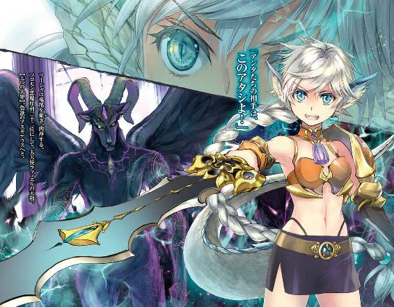
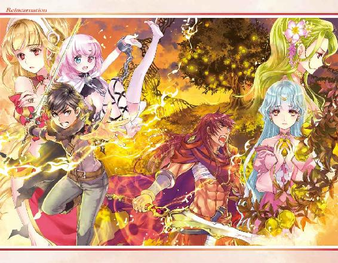
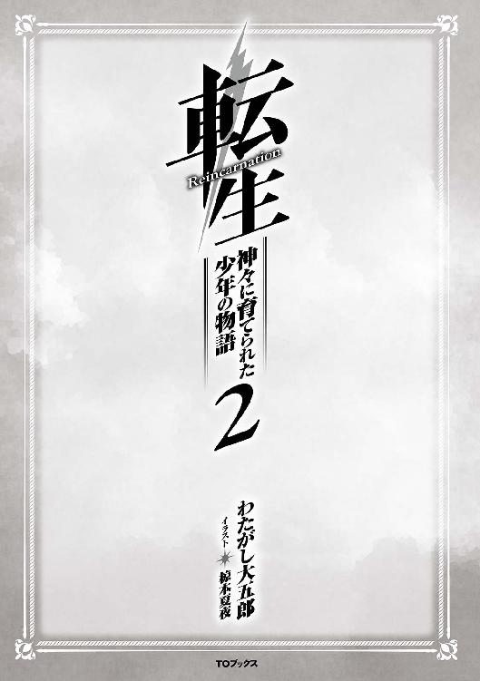
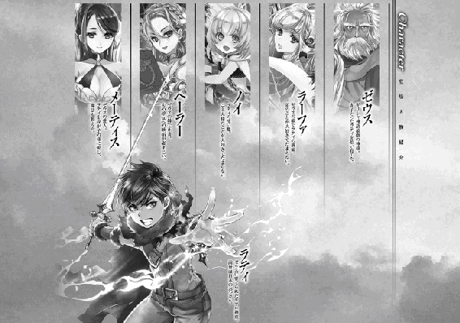
ヘラクレスという英雄がいる。
天空神ゼウスと人族の間に生まれた半神半人の男である。強き力と正しき善の心を持ち、真っ直ぐに育った青年だが、彼の誕生を妬む女神がいた。
神々の女王ヘーラーである。彼女はゼウスの妻なのだが、浮気相手に孕ませた子供に嫌悪感を持ち、複雑な心境に立たされていた。しかし彼女も女神。それだけなら我慢もできたかもしれない。だが、あろうことかゼウスはヘラクレスを溺愛し、ある都市の国王にしようと企んでしまった。
それを聞かされたヘーラーは面白くない。
「浮気相手の子供が王になるっていうの？ 冗談じゃないわ!!」
ゼウスのたくらみを知ったヘーラーは他の女神たちの力を借り、ヘラクレスの運命を捻じ曲げていく。王位を与えないために出産を遅らせ、平民の地位まで落とした。そして、その命を奪おうと毒蛇を仕掛けたのだ。しかし、ヘラクレスはゼウスの血を引いている。赤子でありながら毒蛇を素手で掴み、その場で絞め殺して見せたのだ。これにはヘーラーも驚き、彼を打ち倒すことは不可能に近いことを悟った。この出来事を知ったヘラクレスの母は人外の息子を恐れた。預言者の助言に従ってヘラクレスを野に捨ててしまう。
「あらかわいそうに、誰がこんなに酷いことしたのかしら」
皮肉なことに孤児となったヘラクレスを拾ったのは、偶然にも人間界を散歩していたヘーラーだった。彼女は赤子がヘラクレスということを知らなかったために、我が子として育ててしまった。
それから暫く時間が経ち、育った赤子がヘラクレスと知った時は怒り狂い、人間界に追放。そして、彼に嫌がらせを行ってきた。やがてヘラクレスが結婚し、妻と三人の子供に恵まれた時のことである。ヘーラーはヘラクレスにある魔法を使った。凶暴化である。少し困らせるつもりだったのだが、想像以上に暴走してしまったヘラクレスは家を焼いてしまい、愛する妻と子供たちを失ってしまった。
立ち込める煙の匂い、助けを求める奈落の悲鳴。
業火の中で許しを請うのは、幸せだったはずの家族。
「ア、アタシは、なんてことを......」
その恐ろしい光景を見たヘーラーは、ようやく我を取り戻した。おおごとにするつもりはなかった。ヘラクレスの喚く様を見たかっただけだった......後悔しても、もう遅い。恐怖で体がガタガタと震える。自分、という存在が怖くなった。
「人様の幸せを奪って、何が女神様よ......」
掛け違えた歯車は元に戻ることがない。
こうして、ヘラクレスとヘーラーの二人は絶望的な亀裂を生み出してしまった。
──そんな二人を嘲笑う悪魔がいるとは露ほども知らずに。
『ラケシス、神託を紡いでもらう時が訪れた』
「......はい。このままでは、ヘラクレスもヘーラーも殺されてしまうでしょう。そうなれば世界は混乱に包まれます。種子に力を貸してもらう時が訪れたようですね」
『その通りだ』
世界樹の枝に立ち、世界を見下ろす運命の女神ラケシスは両手を合わせ、空を仰いだ。
「──助けてください」
世界には神々がいて、悪魔という脅威があった。
そして、世界はまだ本当の恐怖を知らなかった。
「旅って楽しいですね！」
ノイは、そう叫んで小ぶりな胸を僕の腕に押し付けてきた。
あ、あの、そんなにひっつかれたら、むにっとしたものが当たっちゃうんですけど。
「もう、ラティさんが困ってますよ」
柔らかな感触に激しく茹だった僕を見て、ラーファさんが抱きついてきた。貴方もですか。
さて、僕たちは飛竜船の客室内にいる。窓から地上を眺める僕にノイとラーファさんが抱きついてきた。ノイは空色のワンピースに編み上げブーツという、普段とは違う格好をしていた。普段の薄着も悪くはないが、今日の彼女は可愛らしすぎた。もう可愛いを通り越して、保護欲が湧いてくる。守ってあげたい。しかも清楚な雰囲気を撒き散らしているのに、無邪気な笑顔で抱きついてくるのだからたまったものじゃない。しどろもどろになって離れるように伝えると、
「えへ、わざとですよ！」
まったく悪びれない笑顔である。
「私もわざとです」
にこやかにラーファさんも笑みを浮かべるが、明らかに悪戯っぽいニュアンスが含まれていた。僕が困っているのを見て楽しんでいるのだろう。
「いや、その、こういうことをされると、ほら、困るから......」
本当は嬉しいが、素直に止めて欲しいと伝えられない僕は、形ばかりの抗議しかできなかった。男の悲しい性である。
「......落ち着いたら三人で観光しませんか？」
「か、観光？」
「はい。最後に遊んだのは二年前の魔法都市じゃないですか。たまにはゆっくりと息抜きをしてもいいと思うんですよ」
「ノイも賛成です！」
確かに、僕たちは旅行等とは無縁の生活を送っていた。それは全部、悪魔と戦っていたことが原因だけど......、娯楽らしいことは殆どしなかったかもしれない。
「構わないけど、神託の件が終わってからだよ。急がないと、ほら......ヘラクレスが危ないんだから」
神託で聞こえた運命の女神様から授かった言葉を思い出す。
『英雄ヘラクレスの身に危険が迫っております』
ヘラクレスといえばギリシャ神話でも有名な人物の一人で、数々の苦行を乗り越えてきた半神半人の一人だ。本来の神話では最終的に人としての命を絶ち、神になるのだが、その生涯は幸せとは呼べなかった。
「彼なら一人でも大丈夫な気がしますけどね」
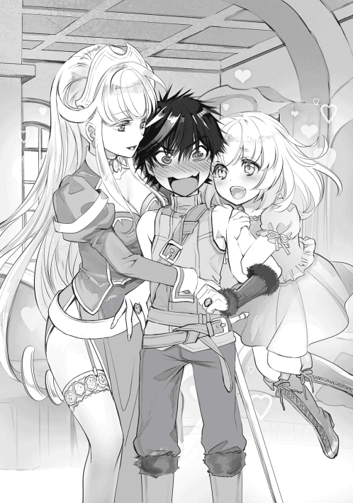
「ほえ、お会いしたことがあるんですか？」
「何度かですけどね。山に眠る凶暴な獅子を仕留めたり、戦争を解決に導いたりしたこと等、天使の間でも噂になってますよ。ゼウスの血を色濃く受け継いでいるんでしょうね」
さすがは天空神の息子。その力は平和のために使われているらしい。そんな凄い人が身近にいるなんて、自分のことのように嬉しくなった。
「うぅ、こんなに抱きついているのに、ご主人様は何もしてくれません......」
隣で健気な台詞を吐く少女は、がっくりと肩を落としていた。
「もしかして、ノイがお嫌いなんでしょうか」
「そんなことないって」
「本当ですか？ でも最近のご主人様は冷たいです」
「へっ？ 何かしたっけ？」
「だってお背中を洗おうとしても追い出されますし、一緒にお昼寝をしようとしても距離を取られます」
そりゃ異性なんだし当然だよ、と呟く前にノイは頬に唇を押し付けてきた。柔らかくて温かい感触に、思わず唸った。ちりちりと燃えるように熱を灯す頬に続いて、背後からも抱擁される。
「ふ、二人とも......」
彼女たちに責められて心臓が跳ね上がった瞬間──。
「あんたたちはいつまでイチャコラしているのよ!!」
竜尾が部屋を横薙ぎに払った。壁はへこんだというより、押し潰された、といった感じに変形している。破壊された窓から風が流れ込み、船外に吸い出されそうになった。ノイが慌てて【クリエイト・ゴーレム】を唱え、壁の穴をとりあえず補強したことで、どうにか踏み止まった。
一瞬で客室は、荒れ果てた光景に変貌してしまった。
「わあわあ、ご、ご主人様──！ ご、ご無事ですかぁ！」
僕とノイはガタガタと震えながら、扉の方を振り返る。
「ご、ごめん。やりすぎちゃった、えへ」
そこには、銀髪碧眼の背の小さな少女がいた。背負った大剣が背よりも長いので色々と目立つ。
「リーシャさん、やりすぎですよ」
「わ、悪かったって。アタシだけ除け者だからイライラしちゃって」
彼女、リーシャは僕たちの仲間である。
アスラさんから紹介してもらった半神半竜の少女で、【八大竜王】の血を引いているという。先ほどの尾も、瞬間的に竜化したことが原因だろう。
ちなみに【八大竜王】は、様々な文献や神話に出てくるナーガ族の神様である。千の竜で構成されている種族で、【八大竜王】の力は、お爺ちゃんにも引けを取らないそうだ。そんな少女が一緒についてきてくれた理由は、今回の旅はそれだけ危険ということである。
『運命の女神から神託があったということは、相応の事件が起きるじゃろう。ワシらが出向ければいいんじゃが......』
力を取り戻していないお爺ちゃんたちがノコノコと姿を見せれば、悪魔に狙われる可能性も高くなる。お爺ちゃんたちが倒されてしまえば、世界は悪魔の手に落ちてしまう。そうさせないためにも比較的自由に動ける僕たちが、ヘラクレスの下へ向かっているわけである。
「ねえ、リーシャ」
「な、何かしら？」
「ここの修理代、どうする気？」
飛竜船の客室は普通の住宅とは違い、特殊な材料を使ったりする関係上、修理費用が恐ろしく高い。家が軽く一軒は建つほどの金額になるだろう。
「あ、あの......その......」
真っ青になったリーシャは息を呑み、覚悟を決めたらしい。
凛とした表情でツカツカと近寄ってきて、
「出世払いでお願いします！ 必ず返しますから！」
喚いて泣きついてきた。後先考えない行動に溜め息を吐く一方で、ああ、どうして僕の周りは変わった人しか集まらないんだろうなどと、今までのことが走馬灯のように駆け巡った。
お爺ちゃんからもらったお金が消えていく。
‡
「次からは気をつけるように、分かったね？」
「はい、すみませんでした......」
結局、リーシャと一緒に僕まで叱られてしまった。
ラーファさんは天使の翼を人族に見られるとまずいので、近くの個室を借りて人間に変身しに向かっている。きっと機長さんに怒られるのが嫌で、逃げたに違いない。幸い、他に乗っている客はいなかったので、被害らしい被害は僕たちの部屋だけだったのが幸いだろうか。
まぁ、リーシャが見ている前で抱きつかれたり、キスされたり、吐息が触れ合うほどの距離で話をしていたのだから、蚊帳の外だった彼女が怒る気持ちも分からなくはない。他人の恋愛を見せ付けられている方は苦痛でしかないだろう。でもやりすぎだ。少しは罰を与えるべきだろうか。
「ねえ、リーシャ」
「なにかしら──ひゃうっ！」
僕は思いっきり、リーシャの両頬を引っ張った。餅のように柔らかく、ぐにゃりと伸びる。
「もしかしたら他人を巻き込むかもしれなかったんだ」
「いだいって！ や、やめ！」
「反省、してるよね？」
「は、はひぃ〜〜！ ひてる！ ひてるから......ずびばせん〜〜!? ふぁ、ふぁなして！」
リーシャはどうも子供っぽい。彼女は竜人だから、見た目のわりに年齢は僕たちよりも上だったりするのだが、見た目と言動と行動が幼く、ノイと同等以下の年齢なんじゃないか？ と疑ってしまうことがある。
「アスラさんには伝えておくから、たっぷり説教を受けるようにね」
「ふぉんなぁっ!?」
ぷるぷると震えて、顔が絶望に染まっていく。竜人って天使を軽く凌駕する力を持つ偉大な種族の筈だが、その威厳はまったく感じられなかった。
「ふふ、頼りになるんですけど、子供が一人増えた感じがしますね」
と、いつの間にか背後に立っていたラーファさんが、困ったように答える。
「リーシャさん、どんまいです！」
「うぅ......なんだか惨めよ......」
リーシャは背を低くし、ノイが頭を軽く撫でた。まるでノイの方が姉に見えてしまう......。
「それでも私たちに力を貸してくれるというんです。優しい方じゃないですか。とても頼もしいですよ。一瞬、ほんの一瞬だけ竜人族で一番手を焼いている子を押し付けられたかと思いましたけど」
「ど、どうしてソレを知っているのよ！」
「本当に厄介者だったんだ......」
うな垂れたリーシャは、慌てて顔を上げた。
「あ、ち、違う！ そ、そんなことないんだから！ 確かに竜人の中では弱っちいかもしれないけど、師匠はアタシを差別することなく剣を教えてくれたわ。誇り高い竜人として、貴方たちを守るんだから」
「ふふ、もちろん頼りにしていますよ」
その後、ミケーネ王国地方に辿り着いた僕たちは、他の天使たちが用意してくれた馬車に乗り込んだ。これからヘラクレスとの待ち合わせ場所、王都ミキネスへと向かう予定だ。道中に魔物は存在しないので、長閑な旅になると思う。でも僕たちにとって長閑な旅は、不吉なことが起きる前兆だということを何となく理解していた。
‡
さて、王都に辿り着くまで僕は不安に駆られていた。
ミケーネ王国の宮殿でヘラクレスは待っているそうだけど、王都ミキネスの国王といえば小心者で野良犬を見ただけで壺の中に隠れるほど、頼りない国王として有名だったはず。
それと、ヘラクレスは国王より与えられた十の試練をすでに突破しているらしい。
一、ネメア森に棲む不死身の獅子、キマイラの討伐。
二、レルネ湖に棲む不死身の九頭蛇、ヒュドラの討伐。
三、女神アルテミスの眷属『黄金の角を持つ鹿』を生け捕り。
四、街に害を及ぼす猛進猪、バッファボアの生け捕り。
五、数十年間、一度も清掃がされなかった畜舎の掃除。
六、街に害を及ぼす怪奇鳥、ステュンパリデスを追い払う。
七、海の神ポセイドンが放った暴れ牛の生け捕り。
八、トラキア王の飼っていた人食い馬の生け捕り。
九、アマゾンの女王の帯を手に入れる。
十、太陽神の力を借り受け、怪物ゲリュオスの討伐に成功し、その牛を生け捕りする。
一部、本当に難解かと思われる物も混じっているが、生け捕りにすることは殺して討伐するよりも手間がかかる。この難業を化せられたのは数年前のことで、長い時間をかけてようやく達成したらしい。しかし国王は難癖をつけて、更に二つの難業を加えたそうだ。それが僕たちを引き寄せることになったのだが、キナ臭い匂いを感じる。こんな無茶なことをさせる王様が、素直に難業を認めてくれるんだろうか？
神出鬼没な悪魔の抵抗に備えるため、新たな軍備が編成される国もある。枢機卿や各国の代表も必死になって自国の防衛に尽くしているというのに、この国王は何をしているんだか。ただ嫌がらせをしているだけじゃないか。僕は、この国の王がロクでもない人物であることを察していた。
運命の女神様は、僕たちをなんらかの切り札として使うつもりなのだろう。もしかしたらヘラクレスの試練に悪魔が関係しているのかもしれない。多分、危険なことが待ち受けているのだろう。そしてヘラクレスを助けることによって、世界は良い方向へ導かれるんだと信じたい。
「頑張らないとなぁ」
ラーファさんたちが戦いに巻き込まれることは、素直に喜べないし。
そんなことを考えて座っていると、ノイは何が楽しいのか、嬉しそうに身体をすり寄せてきた。
「ご主人様、ご主人様」
「どうしたの？」
「こうしていると、恋人みたいですね！」
「そ、そうかな......？」
どちらかというと兄妹な気もするが、適当に相槌だけ打っておいた。すると、顔を伏せてしまう。
「......ご主人様も、悪魔と戦うんですよね？」
「うん、そうだけど......」
どうやら、今まで明るく振舞っていたノイは演技だったようだ。一瞬で怯えた表情に変わった。
「ノイは、神様ってよく分かりません」
「......」
「いつも見守ってくれていることに感謝しています。でも人族のご主人様を巻き込むなんて......」
「僕には異常な魔力があるから、仕方ないって」
落ち着かせるために笑顔を浮かべてみた。でも、ノイははっきりと言った。
「魔力が高くても人は人です。危険なんです。下手をしたらご主人様だって......」
参ったな、言葉がでない。僕はフェニックス戦の時に力を貸してくれた、神々を超えた存在【母なる星】との約束を守るためにも悪魔と戦っている。あのときにラーファさんが命を落としかけて、「誰かを失うことの怖さを抱きたくない」という気持ちが、背中を後押ししていた。ノイの気持ちは分かる。分かるけど、僕には不安を拭ってあげる言葉が見つからなかった。
「......本来は私たち天使が行くべきなんですよね。巻き込んですみません」
横からラーファさんが頭を下げる。
「ほえっ!? ち、違うんです。ノイは、ただ」
ノイが両手を振ってから、僕の胸に顔を埋めてきた。
「誰にも、死んで欲しくないんです......誰もが手を繋げる、平和な、世界だといいのに......」
そんなノイを愛しく感じてしまった。儚げに目を潤ませながら言われたら、愛しく感じない方がおかしな話だ。ノイを悲しませないためにも、絶対に生還しなければ。
「英雄ヘラクレスかぁ......」
先日まで、てっきり棍棒を持った野性味に溢れた人物かと思っていたのだが、ラーファさんの話によると、赤髪に赤眼、整った容姿をしているらしい。身長百八十センチを超える体躯で、鍛えられた筋肉は他の神々の追随を許さないそうだ。
「これからどうなるんだろう......」
僕は天上を仰いで、ぼやくしかなかった。
ミケーネ王国の首都ミキネスの北側に、ミキネス宮殿が建っている。
獅子門を潜れば、荘厳な神霊樹を奉る庭がオベリスクに取り囲まれ、祈りを捧げる聖職者の姿がある。石材を利用して建てられたこの城は、代々半神の血を引いた王族が暮らしていた。
そんな城の一室に作られたホールでは、円卓に重臣や将軍が集められ、王から話を聞いていた。
本来ならこの城の王になるはずだった半神の男を、神々よりも強い力を持ち、その気になれば城すらも滅ぼせる男を......、どうにかして、亡き者にするために。
「聖教会預言者ダンタリオン、発言を」
立派な椅子にどっしりと座る国王エウリュステウスは、指示を飛ばす。
「はい。このままヘラクレスを放置すれば、この国は乗っ取られてしまうでしょう」
預言者は神の言葉を伝達する役目を担っているが、その殆どは表向きである。実際は民衆に指導的役割を果たすために呼ばれることが多い。ダンタリオンは下座へと座り、他の重臣たちよりも下の立場にいる。しかし、彼は国王より誰よりも信頼されており、度々預言を当ててきた。
「閣下、お言葉ですがヘラクレスのことよりも、被害が相次ぐ悪魔についてお耳に入れてもよろしいでしょうか？」
うむ、とエウリュステウスは頷いた。
「それは承知している。だが、ヘラクレスはそれ以上に厄介な存在だ」
「そのために国民が危険に巻き込まれるかもしれませんが」
「承知している。だが、今は先にやらなければならぬことがある」
「悪魔は......、アインスとノインの合同軍をすでに壊滅させております。合わせて千にも及ぶ隊員が一人残らず散りました。このままでは王への忠誠心も揺らぐかと思います」
侮蔑を含んだ口調で重臣は言った。
「合同軍は魔銃火器を所持していない。しかるべき装備を持たせ、警戒にあたれ」
「それでは対応できません。我らが国には資金も少なく優秀な仕官は戦場で失っているため、甚だしく追い込まれております。頼みのエルサも、悪魔との敗戦で戦死しました」
エウリュステウスは目を閉じた。
「閣下、発言をよろしいでしょうか？」
「構わん、何だ？」
「お言葉ですが、ヘラクレス殿に助力を願い頂いたらいかがでしょうか」
重臣の一人が、なんとも軽い口調で発言した。エウリュステウスは立ち上がる。
「何だと？ 我が立場を奪おうとするヘラクレスに頭を下げろと申すのか」
エウリュステウスは剣を引き抜き、重臣へと差し向けた。
「何のために【天使】たちに情報を隠蔽していたと思ってる！ 我らが行ってきた悪事を知れば、ここにいる全員が良くて打ち首、最悪【冥府の門タルタロス】に落とされ、永劫の苦しみを与えられるんだぞ!!」
血走った目で叫ぶエウリュステウスは、重臣を円卓から追いやった。静まり返った室内で剣を収めた王は話を戻す。
「仮にヘラクレスに助力を求めたとして、たった一人で何ができると思う」
「さようですな」
「だが、捨て駒にはなります」
「悪魔たちは【神】と【天使】の血が流れる者を狙う特徴がありますから、半神のヘラクレスならば閣下の身代わりになるかと思います」
「恐らく悪魔の狙いは閣下です。ご決断は早めの方がよろしいかと」
エウリュステウスは腕を組み、ダンタリオンと顔を見合わせた。ダンタリオンは首を振る。
「相打ち、というのは得策かもしれません」
エウリュステウスは目を見開いた。
「......あのヘラクレスが協力すると思うか？」
「必ずするでしょう。何せ、ヘラクレスは非情になりきれぬ男。理性を失い、家族を殺めたことを引きずっている悲しき男です。そこを突けば、恐らく」
会議の席がざわついた。
「ヘラクレスの良心を利用するというのか？」
「上手くいけば悪魔を倒せるかもしれない」
「奴が味方につけばこれほど心強いことはない」
一斉に喚き始める重臣を視界から遮るべく、エウリュステウスは天上を仰いだ。
「そのためにはまず、ヘラクレスに例の物を取ってこさせるべきです」
エウリュステウスは思考を巡らせる。
なにせ、今まで不可能と思われた試練を全て突破してきたヘラクレスのことだ。もしかしたら、例の物も無事に取ってきてしまうかもしれない。それがあればエウリュステウスもヘラクレスに対抗できるが、この策が神々の耳に漏れた場合、一生日の目を見ることはないだろう。
「案ずることはない、か。此方には勝利の預言者がいるのだ。何も、心配することはない」
ヘラクレスを利用することで意見が一致、敬礼をして解散となった。
‡
エウリュステウスはダンタリオンを連れて、最上階の小部屋へとやってきた。魔石障壁を張り巡らせたここは、どのような魔法でも内部を窺うことはできない。
「これでよかったかな？ ダンタリオン殿」
「もちろんです、閣下」
ダンタリオンは一礼した。それに満足したエウリュステウスは頷き、話を続ける。
「【望まれぬ王】として成り上がったワシと、【望まれた国王】として落ちぶれたヘラクレス」
「心中お察しいたします」
「うむ。どれだけの屈辱を味わったことか」
エウリュステウスは神々の血を引きながら、ほぼ全ての神から祝福を受けることはなかった。それにはヘーラーが出産時期を動かしたことが関係しているのだが、お陰で幼少の頃から彼は後ろ指を指されてきたのである。
「しかし、皮肉な話ですな。祖父は英雄王とも呼ばれたペルセウスでありながら、その孫は悪魔に味方するとは」
ダンタリオンは右手に持った書物を掲げると、老若男女の姿を得て、若い青年の姿になる。毒々しい紫に染まった髪。人の心を読み取ってしまう右目を持ち、心を操る左目を持っている。
彼の名は【ダンタリオン】。
【ソロモン悪魔序列七十一位】にして、地獄の三十六軍団を束ねる大公爵である。
「さてな。約束通り、ソロモン王を復活した暁にはワシを柱に組み込んでもらえれば構わん」
「断言はできませんが、協力してくだされば王は必ず力を与えてくれるはずです」
「うむ。で、話とは？」
「来訪者......、いや、ヘラクレスに力を貸す者が訪れるようです。力は未知数ですが、そのような情報が流れてきました」
「なるほどな」
ダンタリオンは神妙に告げた。するとエウリュステウスは、即座に告げる。
「なに、お前の左目があれば全てを見抜くことができるのだろう」
「閣下も知っての通り、一定の魔力を超える者は見ることができません。賢者、大魔法使い、天使、神を始めとした者たちは特に」
ダンタリオンの魔眼は強力だが、制限がかかっている。お陰で万能の力とはいかなかった。
「全て当てにしているわけではない。だが、心が読めない者が訪れたら注意しなければな」
とエウリュステウスが言うと、ダンタリオンは静かに笑った。
「ご安心ください。冥府より猛獣を連れてきました。万が一、私たちの正体がバレるとしたらその時は......」
「ま、暫くは泳がせておこう。全ては奥の手で構わん」
エウリュステウスは目を細めて王都を見据える。
「ダンタリオン、お前は信じていいのだな？ 我を裏切らないだろうな？」
「御意に。お望みならどんな忠誠心でも見せましょう」
「そうか、では任務を与える。よいな？」
「お任せください」
僅かな時間を置いて、内容を述べる。
「我の運命を捻じ曲げた女神を、神々の女王ヘーラーを暗殺してもらいたい」
風が、吹き抜けた。
‡
過去、専制的な支配権力でギリシア諸国を支配した王都ミキネスの惨状に、国上層部は頭を痛めていた。神々の統治によって世界は豊かになったが、各支配国にとっては鞭を打たれる惨状であった。当時、アルゴス地方を統治していた王アクリシオスは神託を授かった。将来、娘と【天空神ゼウス】が結ばれ、その息子が自らの立場を害すると告げられたのだ。これを恐れたアクリシオスは娘を青銅の塔に監禁し、男性との接触を絶ったのだが、黄金の雨に姿を変えたゼウスの執念により、結ばれてしまったのである。
このゼウスの行為によって世界は平和へと導かれるのだが、王アクリシオスは度重なる神々の襲撃を受け、立場を追いやられることになる。最終的に亡命したことによって旧アクリシオス政権は崩壊、娘の子ペルセウスが初代国王となったことで富裕な一大強国を築いたのである。
しかし、現状は強国とは言いがたい。ペルセウスの築いた威光は消え、民に税金を圧制する軍事国家となっている。その軍事も王都内部の腐敗によって、悪魔と対等に戦う力すらも持ち合わせていなかった。
ペルセウスの孫、王エウリュステウスにも神々の血が流れているのだが、彼は自分の権力を奪われることを何よりも恐れていた。旧アクリシオス政権時代と何も変わらないのである。そして、あろうことかエウリュステウスは独断で悪魔と契約を結び、神々への反乱......、いや、すでに悪しき重臣を選び抜き、悪魔側へと寝返る革命家と化している......。
そして、所詮は自らのことしか考えていない革命政府は、悪魔の狙いにまったく気づいていなかった。王は、神々と天使の交流を断つことで安心していたのである。エウリュステウスに取り入ったダンタリオンは、着実に神々との戦争の準備を始めている。
「気になる情報を耳に挟んだのですけど」
昨夜、王都の城下街コリントスに辿り着いた僕たちは、酒場に併設された宿を借りることにした。その時、ラーファさんは酒場に入り浸り、大酒を飲──もとい情報を仕入れてくれた。
「つい最近、王都軍が東の平原で演習を行ったらしいんですね。そこで、悪魔の目撃情報があったようです」
「悪魔ですか？ でも、ラーファさんは何も知らないんですよね？」
「ええ、本来は神の血族である王族が報告をすることになっているんですけど、おかしな話ですよね」
他にも、悪魔との戦いで王都軍が敗北した、という噂が流れていた。あくまで噂にすぎないのだが、一向に帰ってこない兵士たちや、王都側がまったく事実確認を公表しないという姿勢を貫いているため、住民たちは不信感を抱いているのだという。
「そういえば街に入る時に厳重なチェックをされましたねっ。荷物を確認されたり、深夜徘徊禁止令について聞かされたり、門を出る時は手形を見せろってしつこかったです」
普通、旅人や商人を相手にそういった警戒をする必要はない。それが昨夜に限って呼び止められ、身体検査を行い、終わる頃には別の馬車でやってきた老夫婦も検査を受けていた。
なぜ、そこまでするのだろうか。
「それって、王都が意図的に隠蔽しているんじゃないかしら」
「可能性が高そうですね」
異様な雰囲気を感じながら、宿を出た。コリントス街の北側に存在するミキネスの宮殿を目指す。
「おかしいですね。正規の衛士の姿が見当たりません」
ラーファさんが言うように、宮殿の周囲には、魔獣グリフォンに跨った幻獣傭兵隊が見張りに立っている。その数、二十名ほど。
「止まれ」
僕たちが宮殿へ近づくと、一人の傭兵が近づいてきた。マスケット型の魔銃を構えると、他の隊員が一斉に槍と杖を向けてくる。怯む僕だが、ラーファさんは平然と近寄っていく。
魔銃を構えた隊長らしき男が命令を出し、傭兵がラーファさんを取り囲んだ。しかし、杖と槍を向けられた状況でありながら、まったく恐れずに笑みを浮かべると、
「私は王都ミズガルドに所属する暁の賢者、ラーファです。調べてもらえば分かることですが、こちらにヘラクレスが滞在していますよね。取り次ぎをお願いします」
暁の賢者と聞いて、隊長は肩をすくめた。暁の賢者といえば至上三人目の賢者として、広く知れ渡っている。隊員の何人かが確認作業を急ぎ、離れていく。
「暁の賢者様が、ヘラクレスに用件と？」
「ええ、遠い親戚なんです」
ラーファさんは、胸を張ってにっこりと言葉を返した。
「......して、要件を伺ってよろしいですか？」
「ただ親戚として挨拶に来ただけですよ」
「ふざけているのか？」
苛立った声で、隊長が言った。
「もちろんふざけています。ヘラクレスに貴方たちの国王がした仕打ちを考えれば、用件をお話しする必要性を感じませんから」
「ではお帰り頂こう。王からは何者も通さないよう指示を受けておりますから」
隊長の男は整った容姿に、貴族特有の優雅な立ち振る舞いを見せる。無駄に服装は凝っており、金の装飾が目立つ。どこの貴族かは知らないが、騎士としての心得は持ち合わせてなさそうだ。
「しかし、従者が子供三人ですか。賢者様も立派な方を連れておりますな」
小馬鹿にした口調で目を細め、僕に向き直った。ラーファさんに皮肉を言ったことにカチンときた。僕たちは義姉弟にすぎないのだが、こうも見下されては腹が立つ。腰から柄を握り、銀剣を引き抜いた。
「ラーファさん、やってもいいですか？」
「何言ってるんですか、駄目ですよ。私がやるんですから」
僕たちのやり取りを見て、隊長は笑っていた。
「あんたたち、何してるのよ......」
「うぅ〜、諦めるしかないと思います」
ここで無理に事を起こすわけにもいかないだろう。
仕方ない、一旦戻って違う方法を考えるしか──。
「その声は、ラーファか!?」
ミケネスの宮殿に続く長い獅子門の石床を、駆けるように疾走する青年の姿があった。手には長い剣を握り締め、獅子のように逆立った長い赤髪、燃えるように赤い目が怒りをあらわにする。細い肉体と対照的な長身は軽やかで、僕は剣士のいでたちに驚いた。
一瞬で肉薄した男は隊長へと剣を振り下ろし──いや、掠る程度の距離で叩きつけ、石床を粉砕した。亀裂が走り、僕たちの足場すらも砕いていく。
「ヘラクレス？ 貴様、王から次の試練を与えられているはずじゃなかったのか！」
「その話か。オレを怖がって目もまともに合わせられない王からは、もう次の試練を頂いたさ」
「そうか。ならさっさと出て行け！ 試練を二つも失敗した愚かなヘラクレスよ」
「あぁ、その通りだなぁ。レネルのヒュドラ討伐と家畜小屋の掃除を指示した大層なご身分の国王様が、難癖をつけて認めてくれなかったから失敗だよなぁ......!!」
「ひぃっ!?」
鋭い眼光で投げられる無遠慮な睨み。明らかに侮辱する視線に腰を抜かした隊長は、ただ腰を抜かして隊員を解散させる。それを見届け、ラーファさんへと振り返った大男は真っ直ぐに歩く。お互いの距離が腕を伸ばせば届くくらいの距離に控えると、男は爽やかな笑みを浮かべた。
「ラーファ、久しぶりだな。お前さんが来ると聞いて驚いたぞ」
「数年ぶりですね。様子を見る限り、色々と大変だったようですね。しかし、この国の衛士はどこへいったんですか？ なぜ傭兵が門番をしているんです」
「逃げ出したんだよ。たいした武器も持たせず、兵士を捨て駒として扱う戦争があってな」
この男こそが、僕たちが捜していた半神半人の英雄ヘラクレスのようだ。あんな人間離れした芸当ができるのは、彼以外に考えつかない。
「ゼウスが心配されてましたよ。あのような悲劇がありましたからね......」
悲劇、ということは、やはりヘラクレスは自分の家族を......。
「そうか。今度会ったら心配ないと伝えてくれ。親父には世話をかけるな」
「いえいえ、気にしないでください。それより、大丈夫ですか？」
ラーファさんが尋ねると、ヘラクレスは首を振って答えた。
「次に与えられた試練が厄介だ」
ヘラクレスは神妙に頷いた。そして、言いにくそうに告げる。
「ヘスペリデスの楽園に実る、《黄金の林檎》を奪ってこいだとよ」
「なっ!?」
ラーファさんの表情が曇る。
「ほえ、ヘスペリデスの楽園って、ノイがご主人様の使い魔になった場所ですよね？」
「そうです。神々の女王ヘーラーさんの暮らす場所ですね」
ヘラクレスの顔に、影がさした。そして、興味深そうに僕たちの話に聞き耳を立てている隊長以下の面々に気づき、ヘラクレスは叫んだ。
「お前たちも、試練に組み込んでやろうか」
ヘラクレスの言葉で傭兵隊は怯え、呆気なく再び持ち場へと戻っていく。城に長居する理由もなくなったので、城下街へと足を運びながら話を続けた。
「一体、何があったのですか？ ......とにかく、宿に戻りましょう。ラティさんたちを紹介しないといけませんし、情報を整理しましょう」
‡
部屋まで戻ると、質素なテーブルを囲んで話を始めた。
僕は、運命の女神様から神託を授かったことを説明した。過去、フェニックスを討伐したことがあること、城下の門では厳重な検査を行っていること、そして、ヘラクレスに協力するために訪れたこと。ラーファさんに進行してもらいながら全てを話すと、ヘラクレスは僕たちを歓迎してくれた。しかし、僕の話に気になったことがあるという。
「悪魔が近くにいるだと？ 初耳だ」
ヘラクレスは心底驚いたように、何度も首を傾げていた。
「本当です、ヘラクレス......心当たりはありませんか？」
ラーファさんがそっと尋ねる。
「オレは家族をこの手にかけた罪人だ......。監獄塔に幽閉されていたからな。エウリュステウスは罪人に情報を与えるなんて愚かな行為はしなかったらしい」
ヘラクレスは首を振った。
「そういえば気になることがある。ダンタリオンという聖教会の預言者がいるんだが、陰で王を操っていると従者たちの間で話題になっていた」
「聖教会ですか......。なぜ、この国に？」
「さあな」
王都ミキネスを含むアルゴス地方は、聖教会発祥の地であるミズガルド王国と険悪である。教会一つ存在しないこの王都に預言者が来ることは、普通に考えてありえない。
「怪しいですね。私は預言者について探ってみましょうか」
「それならアタシも手伝うわよ。ラーファ一人だと危ないでしょう？」
「助かります。背中は任せましたよ」
「もっちろんよ。アタシに任せなさい！」
今までのリーシャの行動から判断すると、一緒に行動することに不安も残るが、仮にも竜人なので危険な目に遭ってもどうにかなるだろう。
「オレは、ヘスペリデスへ向かうしかないからな」
ヘラクレスは家族を手にかけた罪を償うために、神託を通して許しを請う方法を尋ねた。その方法とやらが、王都ミキネスの国王エウリュステウスの奴隷となり、十の試練を突破することだったはずだ。
「ラーファさん、以前みたいに無理しないでくださいよ」
不安を抱きながら見つめると、ラーファさんは強く頷いた。
「あの時みたいに心配はかけませんよ。それに私としては、ラティさんが怪我をしないかの方が心配です」
「あはは、その様子なら今度は大丈夫みたいだね」
「もちろんです。ラティさんとまだ結ばれていませんしね」
ウィンクで返すラーファさんの言葉に、思わず呆けた僕を見て、ヘラクレスが豪快に笑った。
「なんだ、お前たち。そういう関係なのか」
「ち、違うって」
「そうです！ ノイが許しませんよっ！」
「ははぁ、なるほどな。ラティはゼウスの孫で間違いないな」
互いに護りたいって気持ちは一緒だけどさ。どうして皆、僕をお爺ちゃんに似ているというのだろうか。僕はあんなにだらしなくないぞ。
「僕とノイは、ヘラクレスのお手伝いをさせて頂きます。神託を授かったってことは、きっと何か大きなことが待ち受けていると思うんです」
はっきりとは言えないが、不穏な何かを感じている。
「出会ったばかりのオレを助けてくれるんだな。神託のためか？」
「それだけじゃないですよ。貴方が亡くなったら悲しむ人がいますから」
少なくとも、お爺ちゃんは泣くだろう。
「......お前は、優しい奴だな」
ヘラクレスは深い溜息をつくと、窓の外を見やった。
そして、思い出すように言葉を紡ぐ。
「王は勇敢に戦い、非情になることで国民を安心させる」
王宮を眺めて、力なくヘラクレスは呟いた。空気が淀むようだった。そして問いかける。
「この王都は腐ってる。オレに与えられた試練の内容の殆どは、命をドブに捨てるようなものばかりだ。兵士だって変わらない。そんな王が国を率いて良い国になるんだろうか」
僕は何も言えなかった。黙って、背中を見つめ、息を飲み込んだ。
「オレは王権が欲しいわけじゃない。なのに、あの王はまったく聞く耳を持たないんだぜ」
ヘラクレスは立ち上がり、拳を振り上げると僕に向けてきた。
「お前はこれからも優しくなれ。ああいう王にはなるな」
それから、笑いかけてきた。
「ヘラクレス、僕は戦うよ。非情にはなれないかもしれない。でも、仲間を護るためならば、最後まで戦ってみせる」
ヘラクレスは満足そうに首を縦に振った。
「頼りにしているさ。よし、行くとするか」
その様子を見て、ラーファさんたちも立ち上がった。
僕と、ノイと、ヘラクレスは林檎の楽園に向かわなければいけない。
「ラティさん。何かありましたら、指輪に魔力を送ってください。それで危険が伝わりますから」
治癒の指輪を掲げると、そこにはラーファさんの文字が彫られている。
【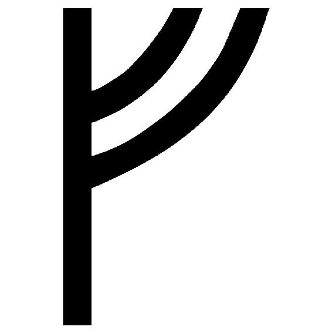】アルシズ、守護を意味するルーンの文字だ。ラーファさんは僕があげた指輪に呪文を呟くと、淡く輝いた指輪を愛おしそうに撫で、はにかんだような笑みを浮かべた。
「いってらっしゃい、ラティさん」
寂しく、悲しい笑みだったけど、僕たちに対する心配の念がこもった笑みだった。その笑みの高貴さと美しさに打たれて、僕は、いえ、その、と口の中でもごもごと呟いた。
「あの時、私は命を助けられました」
「そう、ですね」
僕は頷いた。
「でしたら、今度は私が助ける番です。何があっても、必ず助けに向かいますから」
ラーファさんは、治癒の指輪を見つめながらそう言った。
‡
その日の夕方、城下街コリントス───────。
僕とノイは、林檎の楽園へ向かうための準備をしていた。あと一時間もすれば夜間外出禁止の時間である。その前に門を出ようと考えていたのだが......店がどこも閉まっていた。お陰で閑散としてしまっている。食料等は一応売っているが値段は跳ね上がっており、とても手が出せるような値段ではなかった。
「なるほどね。確かに戦争が行われているようだ」
僕は両手を広げて首を振った。ヴァナヘイムでも何度か戦争の話は耳にしたが、悪魔が関わっているとは思ってもみなかった。悪魔といえば、王宮を守る幻獣傭兵隊も気になった。
彼らは、ミズガルド王の片腕とも呼ばれるラーファさんを平気で追い払った。下手をすれば両国の仲が悪化の一途を辿るというのにである。僕でも考えつくようなことに気づかなかったのだろうか？
いくら考えても答えは出ない。案外、傭兵の起こした不祥事ならどうとでも処理できるから、国王がそこまで考えて配置している可能性だってある。エウリュステウスという王は野心が強く、民からも不満が上がっていたようなので、この件もお爺ちゃんに連絡しておいた方がいいだろう。
さて、必要最低限の物資だけ購入した。まだ時間はあるものの、多くの住民たちが家や酒場に篭り、忙しなく動いている。門の入り口では、馬の鬣を撫でながら物憂げにしているヘラクレスの姿を見つけ、僕たちは近づいた。
「お待たせしました。準備、できましたよ」
ヘラクレスは僕たちに気づき、陰りのある笑顔を浮かべた。
「そうか。デートはもういいのか？」
「デ、デートって、そんなんじゃないって......」
「えっ、違うんですか!?」
驚くノイの肩を叩き、落ち着かせる。
「ま、林檎の楽園ヘスペリデスでは、あの女王と顔を合わせないといけねえ。あんまり会いたくないんだがな、それなりに喧嘩すると思うから覚悟しておけよ」
『神々の女王』を皮肉に強調して、呟いた。ヘラクレスとヘーラーの仲は、神々の争いの中でも酷い部類に入る。浮気相手の子供というのは、簡単に受け入れられるものじゃないということだ。
「それだけで済むといいんですけどね」
そして、僕は溜息。これから先に待ち受けている存在を知っているからである。林檎の楽園ヘスペリデスから《黄金の林檎》を持ち出すこと。しかし、《黄金の林檎》を守るのは百の頭を持つ竜ラドンである。ギリシャ神話でも特に有名なエピソードで、かなりの強敵だと予想される。いやだなぁ、怖いなぁ、とノイと相談しながら、馬車へ乗り込んだ。
‡
暫くは道なりに進み、城下街コリントスの隣にある宿場町まで辿り着いた。
一度馬を休ませるために宿を借り、部屋のベッドに飛び込んだ。
確かに旅は楽しいが疲れるものである......でも、ノイは平然とした顔をしていた。疲労は溜まっているのだろうけど、まったく気にしてないといった具合に、窓を見て騒いでいる。
「お嬢ちゃんは元気だな」
「はいっ！ それだけが取り柄です！」
ヘラクレスの声ににっこりと顔を上げ、笑みを返した。
「......お嬢ちゃんも戦わないといけないほど、神々は追い詰められているんだな」
「そうですね......」
他に言葉が見つからず、眉を寄せて相槌を打った。
「ん、どうしたオレの顔を見て......？」
「ヘラクレス。貴方は力を失っていないんですか？」
宮殿前での人並み外れた動きを見てから、気になっていた。
「ああ......神々が戦っている間、オレは迫害を受けていたからな。地上では何度も戦争を生き残ってきたが、神々の戦争には参加していないんだ」
ヘラクレスは僕から顔をそむけた。神々の争いではヘラクレスはかなり重要な立場にいるはずなのだが、やはりこの世界では本来の神話から外れている。何が起きているんだろう、と思う。
「それにな、オレは戦いが好きじゃないんだ」
ヘラクレスは暫く顔を伏せていたが、強い意志を宿して持ち上げた。
「力というものは時に恐れられる......、オレに力がなければ家族を失わなくて済んだ......」
そして、語られる過去の罪。ヘラクレスを憎んだ神々の女王ヘーラーの罪を、一つずつ語っていく。赤子として生まれる前から嫌がらせを受けていたこと、何度も命を奪われかけたこと、愛する家族を、ヘラクレスの手で失わせたこと。
「女王は、どれだけオレを苦しめれば気が済むんだろうな。オレは何もしてないっていうのに......」
ヘラクレスは目を細めて窓の奥、遠くの景色を眺めていた。震えている。臆病風、とは思わない。家族を手にかけたことでヘラクレスは、自分の心を鎖のような物で縛り付けているのだ。
泣くことは許されない、と自分に言い聞かすように、寂しそうな背中を見守りながら、僕たちはヘーラーさんに不信感を抱いた。
ラティたちが寝静まった部屋で、ヘラクレスは窓際の椅子に座る。暫く考え事をしていたが......旅の荷物が詰め込まれた革袋を漁り、ペンダントを取り出した。そのペンダントは小さな錠で開けられるようになっている。静かに、蓋を開けた。
「メガラ......」
そこには、愛する妻と三人の息子たちの写真が飾られていた。
誰もが悲劇を知らず、希望に溢れた笑顔を浮かべている。その写真を見ていると、ヘラクレスが犯した罪が蘇ってくる。脳裏に映る光景は、未だ色褪せることなく鮮やかだった。自身を正気に戻そうと戦う妻......、血で塗りつくされた部屋......、ヘラクレスは外へ出て吐いた。この試練を終えたからといって、自身の罪は許されるわけじゃない。
この試練はあくまでも、愛した家族たちが死後で幸せになれるように願ったものなのだ。それからヘラクレスは寝室へ戻り、ラティとノイを交互に見た。自身の父親が育てた義理の弟たち......彼らが戦っている姿を想像しながら、苦しそうに呟いた。
「力というものは時に恐れられる......彼らも、力がなければ戦わなくて済んだのにな」
城下街コリントスを出て一週間──。
僕たちは林檎の楽園ヘスペリデスに辿り着いた。すでに時間は真夜中のはずだが、黄昏の女神様が住んでいる関係で景色は常に夕焼けに包まれたままだった。以前もそうだったが、朝も夜も訪れないこの楽園では時計を頼りに時間を調整するしかないので、時差ボケのような心身の不調が起こりやすい。僕にこの楽園で暮らすのは無理そうだ。
一応、朝の時間が訪れてからお屋敷へ向かおうと思い、宿へ向かったのだが......。
「ヘラクレス様！ 私です！ 以前、貴方に助けて頂いたディアネイラです!!」
遠くで竪琴を奏でていた精霊が、たたたと駆け寄ってきた。そのまま嬉しそうに顔を緩ませて、楽しそうに話をしている。うわぁ、ヘラクレスって結構人気があったんだ、慕われているんだなぁ、なんて思っていたら、背後から飛び出てきた精霊に突き飛ばされて地面を転がった。ノイに支えてもらいながら立ち上がると、
「ヘラクレス様！ お戻りになられたんですか!!」
と、誰もが尊敬の意を込めて頭を下げ始めた。呆然と眺めていることしかできなかった僕たちだが、精霊たちの中から一人の女神がにゅるッと出てきた。僕たちの方へ近づくと、爽やかな表情で手を振ってくる。見覚えはない。
「あれれ、確かラティ君というお名前だったよね？」
「えーっと、はい。お姉さんは？」
「忘れちゃった？ 黄昏の女神アエリカよ。《黄金の林檎》を守るヘスペリスの一人よ」
【ヘスペリス】。
《黄金の林檎》の木を世話し、その尊い果実を護り抜く使命を授かった三姉妹の女神のことだ。他の神々とは離れ、この楽園で孤独な生活を強いられているが、三人は常に一緒で仲が良いので、悲しむことはなかったらしい。
アエリカさんは僕が幼い頃にお爺ちゃんの元を定期的に訪れていたような気がしなくもないが......あんまり話をした印象がないので、正直覚えてない。
「その顔は忘れてるね？」
「あはは......すみません......」
「別にいいよ。まさかヘラクレスと一緒に来るとは思わなかったけど、今日はどうしたの？」
と、素朴な顔で尋ねてきた。さて、本当はここで真相を告げられればいいのだが、それはまずい。なぜならギリシャ神話だと、黄昏の女神は【百頭の守護竜ラドン】と友達だからである。僕たちの目的は《黄金の林檎》を王エウリュステウスの元まで持っていくことだ。林檎の番人であるラドンとの戦いは避けられない。ヘラクレスがラドンを倒した際には、薄情者と恨みを叫び続けるという悲しい結末が待ち受けているだろう。
そんなわけで適当に話をはぐらかし、「ヘーラーさんに会いに来ました」とか「他のご姉妹はどちらですか？」や「最近姉が痩せたのよー」などと世間話をして、どうにか話題を逸らす。
ヘラクレスが言った。
「今日は休む。誰か、朝一番でオレが訪れてきたことを女王に連絡してもらえないか？」
その声で天使が翼を広げて、お屋敷がある方へとすっ飛んでいく。
僕たちは宿の中へと案内を受けた。店主の計らいで一番広い部屋を用意してくれて、ヘラクレスは手馴れた様子で入っていく。僕も続こうと思ったのだが、他の精霊たちの視線が気になって足を止めた。なんでだろう、睨まれている気がする。困惑するに僕に対して、ノイが小さく囁いた。
『ご主人様、本当は神と人が同じ部屋に泊まるのはまずいんですよ』
そこまで聞いてようやく気づいた。僕はお爺ちゃんたちと暮らしているから普通のことだと思っていたが、神と人が一緒にいること自体がおかしいのだろう。自分の常識のなさに呆れてしまったが、僕たちが天空神ゼウスに育てられた子供だということを知ると、慌てて態度が変わった。お爺ちゃんの偉大さが身に染みる。
『神は崇拝されるべき！ 人が同じ立場に並ぶことが我慢ならない！ って神もいるんだよ』
アエリカさんがこっそりと教えてくれた。なんだか複雑だなぁ。
とりあえず、ヘラクレスと同じ部屋に入れるようになった僕たちは、他の精霊たちに頭を下げつつ入室し、ソファーへと深く座り込んだ。
「つ、疲れた......」
「はぅ、お疲れ様です！」
「神っていうのは仕来りを重んじる奴らが多いからな。親父が例外なんだよ」
その時、ドアが勢いよく開かれた。現れたのは、水色がよく似合う女性だった。彼女は品位のある出で立ちで、淑女の気品が溢れるドレスを優雅に着込み、胸の前で手を重ねて、はぁはぁと肩を上下に揺らしていた。可愛らしい動作と裏腹に、空色の長髪と雪のような肌が、はっとするような美人さを引き立てている。彼女には見覚えがあった。
「ヘラクレス様、ラティ様、お久しぶりです」
「もしかして、ヘベか？」
突然の来訪者は、青春の女神ヘベさんだった。以前、お屋敷を訪ねた時に身の回りの世話を色々してくれた方で、非常に慎ましい性格をしている。ただし、僕に会いに来たというよりは、ヘラクレスに会いに来たという恋する乙女の目をしていた。
「ああ！ 本当にヘラクレス様です！ またお会いできてヘベは、ヘベは嬉しく存じます！」
ヘベさんは頬を真っ赤に染めて、喜びに満ちているようだった。これでヘーラーさんの娘だというのだから、驚きである。
「突然、お母様に追い出されてから連絡を取れなくて、本当に心配していたんです」
瞳に涙を滲ませる。
「済まなかった。何度か連絡はしたかったんだが......女王に許してもらえなくてな」
「やはりそうでしたか......お母様が、申し訳ありません......」
暗い雰囲気に落ちる二人だったが、何度か目を合わせるとまた笑いだした。どうやらヘベさんは、ヘラクレスに好意を抱いているらしい。聞けば子供の頃は兄妹のように育って、気の弱いヘベさんをヘラクレスが何度も助けたことがあるそうだ。
暫く見つめ合っていた二人だが、僕たちの存在に気づいたようでヘベさんが慌てて咳払いをする。
「お見苦しいところをすみませんでした」
深く頭を下げてから僕とノイに目線を送ると、
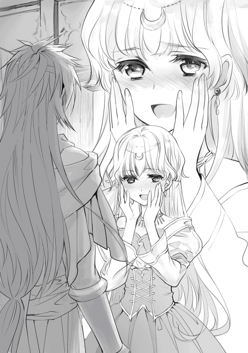
「あれ？」
ヘベさんは小さく口を開けたまま首を傾げていた。そのまま僕の方へ近づいてくると、少しだけ険しい顔を向けてくる。
「ど、どうしたんですか？」
意味が分からずにいると、ヘベさんは僕の頬をペチペチと優しく叩いてきた。何をしているのか気になっていると、
「ラティ様はラーファ様の恋人でしたよね？ お別れになったんですか？」
「..................はい？ 何のことですか？」
隣に座るノイの視線が、刺々しく冷めていく。
「ち、違います！ 僕たちはただの姉弟です！ それは知っていますよね!?」
「はい、でも姉弟で恋愛って珍しくないですし......早とちりをしてしまったようですね、すみませんでした......」
顔を真っ赤にして否定すると、ヘベさんはとろけるような微笑みを浮かべた。確かに神様は姉弟での結婚が多いから、ヘベさんの価値観は僕とずれているようだ。
「お二人ともお似合いでしたから、恋人だと思っていたんです......一緒のベッドで寝てましたから」
ノイにぽかぽかと叩かれた僕は、ソファーから追い出されてしまった。
‡
どうやらヘーラーさんは用事があって留守にしているらしい。
僕たちはお屋敷へと向かうことにして、驚いた。林檎の甘い香りが漂う中、普通に巨人たちが楽園を徘徊していたのだ。ライオンのような獣が群れで遊んでいたり、象や熊が農作業を手伝っていたり、コボルト等の下級精霊も仕事に精を出している。
「どうして彼らは働いているんですか？」
「お母様が怖いからです」
納得の理由である。
「ご主人様、ご主人様！ この熊さんが背中に乗せてくれるそうですよっ！」
「えっ」
隣を見ると、ノイが四つん這いで歩く熊の背中に乗りながら目を輝かせていた。熊に乗った少女なんて初めて見たが、大丈夫なんだろうか。まぁ楽しそうならいいんだけど。
「ヘベはお料理が得意になったんです。色んな神様からも評判になりました」
「そうなのか。昔は苦手だったのに頑張ったな」
ヘラクレスたちも、久しぶりの再会に会話が弾んでいるようだ。
しかし、僕は何かを忘れているような気がする。ヘラクレスは【十二の試練】に立ち向かう途中で、一緒に旅をしてくれる重要な存在がいたはずだ。ヘベさんではないことは間違いないが、どの女神だったのか思い出すことができない。ノイはいつの間にか熊の背中で気持ち良さそうに寝息を立てていた。風邪を引かないように着ていたローブをかける。お屋敷までは緩やかな坂が続いており、右を見ても左を見ても果樹園が続いていた。リンゴにも種類があるらしく、色や形が違う物から、すでに収穫された後まで様々であった。
「本当に長閑ですね。お兄様」
「うん。こんな場所に家を建てて隠居してみたいよ」
「まだお早いですよ。でも、その時はわたくしもご一緒させてください」
「あはは、もちろんだよ。アテ──」
あんまりにも長閑だったので普通に返事をして、気づいた。慌てて振り返ると、ノイが乗っている熊にはもう一人の少女が乗っていた。明るみを帯びたブラウンロングが目立つ女の子。僕をお兄様と呼ぶその子はメーティスさんとお爺ちゃんの娘で──。
「......あれ、ラティ君。どうしてここにいるの？」
「お兄様、遊ぶならわたくしとも遊んで欲しいです!!」
知恵と戦略を司る女神アテナ。
英雄ヘラクレスを導くパートナーが、そこにいた。
‡
「......そう、与えられた試練が《黄金の林檎》を持ってくることだったんだ」
お屋敷には入らず、屋敷の入り口で僕はメーティスさんに事情を説明していた。ヘラクレスとヘベさんは、先にお屋敷の中へ入ってもらっている。ノイは寝室へ運んでもらうことにした。
「......困ったね。ヘスペリス三姉妹も、ラドンも、ヘーラーさんも絶対に《黄金の林檎》は譲ってくれないよ。あれは純粋なる神々のみが持つことを許されたもの。ラティ君たちがいくら頭を下げても、譲ってくれないと思う」
やはり、予想通りの展開が待ち受けていたか。こうなってくると僕としてもヘラクレスに力を貸しづらくなる。黄昏の女神アエリカさんは優しいし、他の姉妹も温厚な性格だと聞く。ラドンも人に危害を加えるような怪物じゃない。困った。どうやって立ち回るべきだろうか。
「どうにか誰も傷つけないで済む方法があればいいんだけど......」
そんな方法、あるわけないよなぁ。
「ヘラクレスとヘーラーさんが仲直りするのは無理なんですか？」
「......無理だと思うよ。ヘラクレスの事件は私も知ってるけど、家族を殺されたようなものだからね。この溝を埋めるのは、奇跡でも起きないと難しいよ」
奇跡、か。それこそヘラクレスの家族が蘇るくらいのことをしないと難しいだろう。しかし、すでに亡くなった人を蘇生させることは、並大抵の努力でどうにかなるもんじゃない。僕がラーファさんの命を繋ぎ止めた時は、多くの偶然と幸運が重なって初めて成立したことだ。それに、フェニックスはもういない。
「......死者を蘇らせられる神様も、一人だけいるけどね」
「そうなのですか。お母様、その神様にお願いしてみたらどうでしょう!!」
「アテナ、それは難しいことなんだよ」
僕もそれには心当たりがあった。
【医学の守護神アスクレピオス】である。死者をも蘇らせる手術に成功した神様で、肉体さえあれば生き返らせることができる。しかし、今回の場合は肉体が燃え尽き、残されていない。それに冥界から魂を呼び戻す行為は、お爺ちゃんと敵対している【冥府を司る神ハデス】の領地から住民を奪う行為と変わらない。それは世界の秩序に逆らうということで、更なる混乱をもたらす危険がある。こう考えてみると、ラーファさんの件で僕にも何かしらの報復があるのかもしれない。
「ずっと気になっていたんだけど、そこまでして試練って終わらせないといけないの？」
「......もしもラティ君が人を殺めたらどうやって償う？」
「それは騎士に捕まって──あ」
「......そういうこと。神様も無意味に人を殺したのなら、それ相応の罪を償わなければいけない。そしてヘラクレスは半神半人だからね。人の手で投獄できない。【神託】を通して試練を与えられたのはそういうことだよ」
先ほど、僕はヘラクレスと同じ部屋に入ろうとして精霊たちに睨まれた。それは神様と人は、決して対等の立場ではないからだ。ヘラクレスには神様の血が流れているから、神様を崇拝する神主制度が続いている限り、刑を与えることができない。
「......でも、悪魔の目撃情報があったなんて知らなかったよ。王エウリュステウスの件は、私からゼウスに報告しておくね」
「あ、ありがとうございます」
何も解決策が浮かばない。このままヘラクレスが戦えば、間違いなくアエリカさんたちは悲しんでしまう。僕にも何かできるといいんだけど......。
‡
メーティスさんたちと別れ、僕もお屋敷に上がらせてもらうことにした。
お屋敷は丘の上に立っており、入り口で振り返ると、緑の牧草地と果樹園が一望できる絶景の場所となっていた。僕は、遥か彼方まで続く暁色の風情に目を丸くして、心を奪われた。
「わぁ、凄いなぁ」
小鳥の群れがばっさばっさと飛んでいく。と、背後の玄関が開く音がして誰かが声をかけてきた。
「お帰りなさいませ。ラティ様」
玄関からは、薄い布切れだけを纏った小柄な女性が現れた。目のやり場に困ったが、大事な所は隠れている。良かったような、残念なような......。よく見れば木の精霊である。本体である木が枯れない限り命を失うことはない種族だったと記憶している。沢山の精霊が働いているんだなぁ。
「お姉さんは寒くないんですか？」
「はい。この季節は暖かいですから」
木の精霊が笑みを浮かべた。
「ヘベ様からお部屋に案内するように頼まれました。お食事のご用意もすぐにできますので、どうぞお寛ぎください」
「ヘーラーさんはまだ帰ってないかな？」
「女王様は、いまだお戻りになっておりませんね」
ふむ。まだ戻ってきてないのか。いきなり僕たちが訪れてきただけでも驚くと思うが、ヘラクレスとの件で一波乱あるのは間違いない。心の準備だけはしておくべきか。
木の精霊の案内に続いて屋敷を進んでいく。豪奢な調度が惜しげもなく飾られた廊下を進み、僕は客人用の部屋へと案内を受けた。部屋の豪華さを見て、何度も驚いてしまう。著名な絵画などは当然で、ベッド一つ取ってもカーテンと天蓋が付いたふかふかの物である。部屋にはヘラクレスがいた。休む暇もなく朝餉が用意されるという。
「食えるうちに胃袋に詰め込んでおいた方がいい。この後、どうなるか分からないからな」
平然としたヘラクレスの横では、ノイが気持ち良さそうに寝息を立てている。あれからずっと寝たきりだという。起こすのはかわいそうなので、僕とヘラクレスだけ朝餉に出席することにした。とはいっても、ヘベさんを含めて三人だけの寂しい朝食だが。
僕はヘラクレスの後に続いて、食堂へと向かった。
‡
「お待ちしておりました」
朝食の席に座るのは三人だけだが、僕たちの周りには屋敷の使用人が数人並んでいる。使用人たちは皆、精霊であり、僕たちの到着を待ってくれていたようだった。
「どうぞ、おかけになってください」
上座に腰を降ろしたヘベさんは、僕たちを温かく迎えてくれた。
「ラティ様、ヘラクレス様、改めてお帰りなさいませ」
ヘベさんが挨拶をすると、ヘラクレスは頷いた。
給仕の方が前菜などの皿を運んでくれて、朝食が始まった。
「..............................」
フォークとナイフが、食器と触れ合う音だけが響く。
「..............................」
誰も何も喋らない。か、堅苦しくて息が詰まりそうだ......。黙々と食事を続けているヘラクレスと、ヘラクレスを見つめたままもじもじとしているヘベさんの二人だと、まったく会話がないようだった。
気まずい沈黙に耐えかねていると、ヘラクレスは口を開いた。
「なあ......、ヘベ」
「は、はい？」
声が上ずっている。
「オレたち、《黄金の林檎》を譲ってもらいに来たんだ」
カチャリ、と、銀のフォークが床に落ちて、ヘベさんが両手で口を覆った。
「冗談、ですよね......？ 《黄金の林檎》は、純粋なる神々の血族以外が触れることを禁止されているものですよ......わ、私では許可をすることができません......」
ギリシャ神話において、《黄金の林檎》は重要な役目を担っている。一説によれば、神々の不老不死を保つための果実とされている。この林檎の木は、地母神ガイアから女神ヘラと天空神ゼウスの結婚のお祝いをするために贈られたものだそうだ。この世界の歴史はズレている箇所もあるので当てにならないが、大事な代物ということに変わりはないようだった。
「ヘベにそこまでさせるつもりはない。ただ、オレはどうしても林檎を頂かなければいけないということを伝えたかった」
「無理です......お母様が、許可するとは思えません」
「分かってるさ。その時は無理にでも盗んでいく」
「駄目ですよ......！ 《黄金の林檎》を守る番人たちがいます......黄昏の女神とラドンが相手では、いくらヘラクレス様でも危険です......！ わ、私は、誰にも、命を落として欲しくないですから......」
ヘベさんは悲しそうに首を振った。
そこでようやく、ヘラクレスには奥さんがいたこと、家族を自分の手で失ったこと、罪を償うためにエウリュステウスの奴隷となり、試練を受けていることを話した。
「その試練は、エウリュステウス様がお考えになったのですか......」
ヘベさんは下唇を噛んだ。口には出さないが、どうしてこういう試練を与えたのか疑問に思っているのだろう。その間、ヘラクレスは目を逸らさずにヘベさんを見つめていた。
──決して逃げない。オレは自分の罪と戦う。
確かな意志が込められた瞳を見て、先に視線を逸らしたのはヘベさんだった。目元に溜まった涙を、慌てて駆けつけた使用人が拭いている。
「済まない......」
「このお話は、明日お母様が帰ってきてから続けましょう......」
ここで、試練の話題は中止になった。
‡
午後に差し掛かりそうな頃。僕はベッドに寝転がり、壁を見つめていた。
「《黄金の林檎》を手に入れるとなると、必ず誰かが悲しむんだよなぁ......」
ヘベさんは顔には出さなかったが、ヘラクレスが結婚していたことや《黄金の林檎》の件で落ち込んでいるようだった。ヘラクレスも気分を落ち着かせるためか、散歩に出かけているので静かである。
広い部屋には僕とノイの二人きり。そのノイは気持ち良さそうに寝言を唱えているので、まだまだ起きる気配はなかった。こうやってお屋敷に来て実感したけど、お爺ちゃんって凄いお金持ちだ。旅費だって出してくれたし、世界中に豪邸を持っているらしいし、お爺ちゃんやヘーラーさん専用の神殿まであるらしい。
そういえば、ラーファさんは元気だろうか。指輪から何も聞こえないってことは、まだ窮地には陥ってないってことだと思うから安心していいと思うけど......あの王宮はキナ臭かったから、無理をしないか心配である。リーシャも一緒だから二人でどうにか切り抜けられるとは思うけど、悪魔の噂もある。あぁ、心配事ばかり増えているなぁ、と思う。罪を償うためとはいえ、罪の無い守護者ラドンを倒し、黄昏の女神であるアエリカさんたちを悲しませていいはずがない。
神託の理不尽さに、僕は疑問を感じてしまっていた。
もしも神託で「仲間を殺せ」と言われたら、皆は従うんだろうか？ 僕なら従いたくないけど......。
頭を掻き毟って布団に潜っていると、扉がノックされた。一体誰だろう？ そう思って扉を開けると、ヘベさんが困ったような笑みを浮かべて立っていた。
「あ、あの......お休みのところをすみません。相談に乗って頂きたくて」
「ぼ、僕に？」
僕よりも使用人たちの方がいいと思うけど、なんて考えていると、ヘベさんが部屋に入ってきた。
「《黄金の林檎》の件......でいいのかな」
「はい。どうしても、戦わないといけないのかなぁって思いまして」
「そうだね......」
ヘベさんは僕の前に立って、会釈をしてから床に正座した。そんなに畏まらないでください、とベッドの横に座るように催促。おずおずと腰を降ろすと、力を抜いて肩にもたれかかってくる。
「ラティ様とは血が繋がってないですけど......姉弟ですから、その、他に頼れる方がいなくて......」
そう言って、神妙な面持ちで覗き込んできた。
「お母様だって優しい方なんです。でも、ゼウスお父様が浮気ばかりするから怒っちゃって、その被害に巻き込まれたのがヘラクレス様なんです」
「そう、だね」
お爺ちゃんが適当なことを言わなければ、ヘーラーさんも傷つかなかったのは事実である。だから、ヘーラーさんだけの責任ではないと僕も分かってはいる。心象的な問題はまた別だけど......。
「ヘラクレス様のお話を聞いていて思い出したんですけど......数年前、お母様が何かに取り憑かれたかのように水晶玉を覗き込んでは何かをされていたんです。その時に、ヘラクレス様の理性を奪う魔法をかけたのだと思います。お母様は多くの魔法にも精通していましたから」
取り憑かれていた？
「その日はヘーラーさんの様子がおかしかったの？」
「そうです。私が声をかけても不機嫌そうに呟いて、一人部屋に閉じこもっていました」
数年前ということは、ラーファさんが僕のために治癒魔法を教えてくれていた頃だろうか。お爺ちゃんとメーティスさんが一緒に暮らしていることが判明して、機嫌が悪かったのかもしれない。
「あの時のお母様は、とても怖かったんです」
ぽつりと、言葉をこぼした。
「え？」
「お母様とヘラクレス様は不幸な巡り合わせだったとはいえ、一時は家族としてうまくいっていたはずです......。ヘラクレス様を追い出した後もずっと後悔していた様子だったのに、あんなに恐ろしい顔をしていたのが信じられなくて......ひっく......」
悲しそうに顔を伏せるヘベさんは、ヘラクレスの過去について教えてくれた。
ヘラクレスに嫌がらせをしたヘーラーさんを恐れ、実の母親がヘラクレスを人間界に捨てた。そのヘラクレスを拾ったのが、人間界を散歩していたヘーラーさんだという。赤子は見分けが付きにくいから、ヘーラーさんも気にせず育ててしまったのだろう。そんな優しさを持っているヘーラーさんは、僕が魔法書を必要としている時も言葉とは裏腹に手を尽くしてくれた。
二つの顔を持つヘーラーさんが、僕には信じられなかった。
「......ぐずっ、ひっく」
彼女のしゃくり上げる声が大きくなる。悲しくて仕方ない様子だった。
「ヘベさん......」
どうにかしなきゃいけない、って思った。
目の前で泣いている人がいるのなら、僕は助けてあげたい。
ヘラクレスも、ラドンも、黄昏の女神も、ヘーラーさんのことが重なって大変だけど、何とかしてみせないと。誰も悲しまずに《黄金の林檎》を手に入れる方法があるはずなんだ。
「大丈夫だよ。僕が、どうにかするから」
「ひぐ......ラティ、様............」
赤く腫らしたヘベさんの瞳を脳裏に刻み、新たな約束を交わした。
一番辛いのは僕じゃない。心が痛むのは僕だけじゃない。ヘベさんも、ヘラクレスだって苦しんでいるんだ。こんな所で立ち止まってなんていられない。
「ごめん、なさ......い......どうか、お願いします......みんなを、助けてください......」
心がねじ切れそうで、今にも泡となって消えてしまいそうな女神様に笑いかけた。
「もちろんだよ」
身体の中心に渦巻く、激しい衝動。
僕は、ヘーラーさんと戦う覚悟を決めた。
『ご主人様、起きてください！』
ノイの澄んだ声が聞こえてきた。
頭の辺りが妙に寝心地が良くて、目を瞑ったまま布団に潜ろうとすると、激しく声をかけられる。
『もう朝ですよー！ ほらほら、起きましょう！』
あぁ、まだ眠いから寝かせて欲しいなぁ......。
ゆっくりと瞼を開けて、起き上がろうとして──。
「オレの膝枕はそんなに気持ちいいか？」
ヘラクレスと目が合った。
「ほわぁっ!?」
驚きで目を覚ました僕は、立ち上がった。
「おはようございます、ご主人様!!」
ノイはベッドに腰をかけて、僕の体を揺さぶっていたらしい。
「うなされていたから、交互に膝枕をしてたんです！」
「そ、そうなんだ......」
どうせならノイの時に目を覚ましたかった。最悪の目覚めだよ......どうしてくれるんだ。
「一応止めたんだがな、面白そうな誘惑には勝てなかった」
「ヘラクレスもノリの良い性格をしているね......」
折角起きたのだし、身支度を整えることにした。ノイが気を遣って背中を見せてくれたので、急いで肌着を替えズボンを履き、ベルトやらローブを羽織り、いつもの服装へと着替えた。
ノイに声をかけると、ぱっちりと目を開けて振り返った。
よく見ると、ノイもまだ寝ぼけた顔をしている。髪なんか跳ねたままだ。でも、服装はワンピースからいつものハーフズボン姿に戻っていた。右太ももの辺りには短剣を収納するためのベルトが巻かれている。その時......外の辺りが騒がしくなった。続けて廊下からどたばたと誰かが走ってくる音が聞こえる。部屋の前で止まったかと思うと、バタン！ とドアが開けられた。飛び込んできたのはヘベさんだった。
「どうしたんだ？」
と、ヘラクレスが尋ねる。
「お、お母様が帰宅しました！ 玄関まで急ぎましょう！」
と、血相を変えていたので、駆け出して向かった。
朝靄の中、玄関前には昨日は見なかった数の召使いが集まっており、調理人や執事のような妖精、動物や鳥までが綺麗に整列して並んでいる。そういえば、ヘーラーさんは女王様だったっけ。随分と身分が高い人なのに、どうしてお城や宮殿に住んでないんだろう。深い理由はなさそうだが。そうこうして待っていると、獅子のレリーフが刻まれた巨大な籠の天馬車が、朝靄の中、お屋敷の前に降り立った。白い毛並みの馬は大人しく、よく見れば背中に純白の翼が生えている。ペガサスだ。出生は意外と知られていないが、メデューサの血が海に落ちることで産まれたのが始まりだったはず。決して鳥と馬が孕んだ子供がペガサスではない。
周りに控えていた使用人たちは一斉に動きだし、馬車左右に並んだかと思えば、緋毛氈をお屋敷の入り口まで敷いた。僅か十数秒で全ての動作が終わり、木の精霊が馬車の扉を開く。籠の中から降りてきたのはヘーラーさんだった。
「お帰りなさい、お母様」
「私の可愛いヘベ、お出迎えありがとう。他の者も頭を上げてちょうだい......あら、ラティにノイじゃない。ふふ、元気そうね。それに......」
ヘラクレス、とヘーラーさんは目を鋭く細めた。
ついに、神々の女王が帰還した。
‡
「そう、《黄金の林檎》を取りに来たのね」
朝日が降り注ぐ中、使用人たちを追い出した食堂で朝食を摂っていた。上座にはヘーラーさんが腰掛け、その隣にはヘベさんが並ぶ。そのテーブルを挟んだところへヘラクレスが座り、僕とノイも続く。ヘベさんは怯えながらビクビクしたままで、体調が優れてないように見える。これから罵倒が始まるというのに心配だ......。
「......悪いけど、貴方には分けてあげられないわ」
ヘーラーさんはかなり機嫌が悪い様子だった。
「相手がオレだからか？」
ヘラクレスは冷静を装い、尋ねた。ヘベさんがオロオロと二人を交互に見つめている。
「《黄金の林檎》は純粋なる神々にしか譲れないのよ！ アタシ個人の価値観を無視しても『半神半人』のヘラクレスに渡せるわけないでしょ！ ふざけないで！」
「くだらん掟を破ればいいだけの話だろうが」
「貴方はね、クロノスお父様がどれほど恐ろしい方か知らないから言えるのよ!!」
クロノスといえば二人いるが、【時の神クロノス】ではなさそうだ。
ヘーラーさんの父親らしいから、【農耕の神クロノス】のことで間違いない。クロノスはタイタン巨神族の長で、二代目神々の王だ。ヘーラーさんがクロノスという言葉を聞くだけで震えているのは、彼女が過去、クロノスに捕食されたことが関係していると思われる。これは今のエウリュステウスのように王位を息子たちに奪われることを恐れての行動だった。しかし、クロノスの妻にしてゼウスの母レアが、ゼウスだけは助けようと小島に隠したのだ。そのゼウスが成長してヘーラーさん兄姉たちを奇跡的に助けるのだが、様子を見ている限り、ここら辺は神話通りの歴史を辿っているらしい。
「どうしても承諾してくれないのだな？」
「できるわけないでしょう！ クロノスお父様は今もアタシたちを監視しているの！ あのバカゼウスがトドメを刺さなかったから、今も王権を剥奪しようとタイタン巨神族に働きかけているのよ!! もし林檎を貴方みたいな半人に与えたことがバレれば、全世界を揺るがす戦争が勃発するわよ!!」
やはりクロノスは生きていたか。この世界の天空神ゼウスは、どうも優しい心を持っているらしい。ギリシャ神話だと結構あくどいことをやっているイメージなんだけどな。
「そうか、でもいいのかな？ オレは誰かさんにかけられた魔法のせいで神託を受ける身となった。罪を償うためには何としても《黄金の林檎》を手に入れなければいけない。そのためならラドンを倒してでも奪っていくぞ」
そう言い返したが、ヘーラーさんは涼しげな顔をしている。
「できるならやってみたらどうかしら。確かに貴方は強いけどね、ラドンはもっと強いわよ。それに、黄昏の女神ヘスペリスの魔法も強力よ。一人で勝てるかしら？ ......って、ラティたちもいるんだったわね」
ヘーラーさんは腕を組み、少し考えてから僕を睨んだ。
「ラティ、ノイ！」
「はい」
「ひ、ひゃい！」
ノイの声が上ずった。
「どっちか一人だけなら、手助けを認めてあげるわ」
相手は四人なのに、僕たちは二人だって？
「ラティもノイも魔力が桁違いに高いからね。本当にラドンを倒されるかもしれないから、どっちか一人にさせてもらうわよ」
「はっ。女王様も意外と怖がりだな」
「おお憎たらしい。ゼウスの嫌味な部分だけを受け継いだような子だね、アンタは」
ここまで黙っていたヘベさんが、戦慄きながら口を挟んだ。
「お、お母様にお願いしたいことがございます」
ヘーラーさんがヘベさんを見つめる。
「何かしら？ 貴方もゼウスと結婚したいって言うなら娘でも容赦はしないわよ。アイツ、娘でも手を出しそうだし」
「ち、違います！ そういう話じゃありませんから！」
ヘベさんが真っ赤になって立ち上がると、ヘーラーさんの瞳を真っ直ぐに見つめて、尋ねた。
「命だけは奪わないようにして頂けませんか？」
「いいわよ。と答えてあげたいけど、そこの短気が守れるか分からないわね」
「短気なのはラドンも同じだろう？ 使用人たちから聞いたぞ」
「ええ、侵入者は神であれども襲いかかるみたいだからね、あの子は忠誠心高いのよ。だから《黄金の林檎》を守らせているんだけどね」
ラドンの忠誠心が高いとなれば、瀕死になっても抵抗をするだろう。ヘラクレスだって家族への償いのために戦っているのだから、両者は絶対に引くことがない。
「戦うという選択は、愚か者の策か、または最後の手段としてやることよ。仮に掟がなくたって、始めからラドンと戦うつもりだったヘラクレスに、大切な《黄金の林檎》を渡せるわけないでしょ。バカじゃないの」
「お母様......」
ヘーラーさんはそこまで言うと立ち上がった。
「少し休むわ。部屋には誰も入らないでちょうだい」
ヘラクレスは拳を握り締めて、その背中を恨めしそうに睨んだ。
「どうしても戦うというのなら止めないわ。......可能なら違う手段を考えなさい」
「さっきから何を言いたいんだ！」
ヘラクレスは叫んだ。
「そのくらい自分で考えなさい。貴方を見ているとイライラするのよ」
「ヘラクレス様......駄目、です......」
ヘベさんが、ヘラクレスを宥めた。ノイは、そんな家族のやり取りを不安げに見つめている。
「オレはな......あいつらに謝罪しないといけないんだ......」
「......分かってるわ。でもね、諦めなさい」
ヘーラーさんの声が震えていた。手に、拳を作っている。
「諦められるか......オレは、オレは家族を、この手で......」
ヘラクレスは口篭ったが、すぐに険しく顔を上げた。
「オレは、アンタが大嫌いだ!! ぶっ殺してやりてえんだよ！ なぁ、オレの家族を、返してくれよ!! アンタのせいでオレは、愛する家族を殺すことになったんだぞ!!」
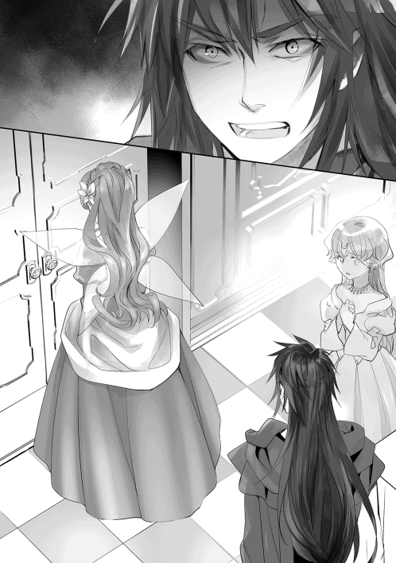
そんなヘラクレスの言葉に、部屋の誰もが言葉を失った。ヘラクレスは明るく振る舞っていたが、ヘーラーさんへの復讐心は積もる一方だったからだ。
「オレはずっとアンタを恨んでいた。でもな、こんな産みの母に捨てられたオレを拾って育ててくれて、一時期でも母親でいてくれたアンタを嫌いになれなかったんだよ！ アンタが嫌がらせをしてきても、耐えていればいつかは息子として認めてくれるんじゃないかってずっと思ってた！ でも、オレが馬鹿だった......。アイツらの命を奪わせるくらいなら、オレがアンタを殺せばよかったんだ!!」
その言葉で、ヘーラーさんは拳を強く壁に叩きつけた。そのままきつく睨み返すと、何も言わずに扉を強く開け放ち、朝食の席から退場していった。残された僕たちは、ヘラクレスの傍へ駆け寄った。
「ヘラクレス様......」
「済まねえな、柄にもなく怒鳴っちまった」
ヘラクレスは僕たちを順番に見てから、頭を搔き深呼吸をして息を整えた。僕たちは何も言えない。下手なことを言えば、ヘラクレスを傷つけることが分かっているからだ。二人の亀裂は、修復ができないほどに大きくなってしまった。
「......無理しちゃ駄目です」
ノイが心配そうにヘラクレスを見つめている。
「ヘベは母親を心配してやれ。あんな性格だから親父も家に寄り付かねーんだろ？ ほとぼりが冷めたら慰めてやってくれよ......」
と、拳を解いたヘラクレスは、扉の方へ歩いた。
「一人にさせてくれ」
ヘラクレスは、すっかり意気消沈していた。そのまま、扉の中へと姿を消してしまった。
「ヘラクレス......」
僕の呟きは、届かなかった。
‡
朝食の騒動が過ぎて、僕はノイに部屋で待機するように告げて廊下を歩いていた。ヘベさんは木の精霊と一緒にヘラクレスを捜しに出かけたらしい。悲しげだった瞳が今も脳裏にこびりついている。途中で使用人と擦れ違いながら挨拶を交わし、ある部屋の前で呼吸を整えた。
「ふぅ......やるしかないか」
覚悟を決めて、扉を二度ノックする。返事はない。またノックする。それを何度か繰り返すと、ばたん！ と勢いよく扉が開かれた。現れたのは花緑青の髪が目立つ、林檎色の瞳の女性──ヘーラーさんだ。
「アタシ、誰も部屋に立ち入るなって言わなかったかしら？」
そう、僕はヘーラーさんの自室を訪ねていた。どうやら泣いていたらしく、涙を拭いた痕が残っている。あえて気づかないフリをした僕は、頭を下げながら尋ねた。
「話があるんです」
「アタシはないわよ」
取り付く島もない。
「少しだけ話があるんです。ヘーラーさん、一応僕の義母でしょう。話を聞いてもらえませんか？」
恐怖を抑えて、顔をじっと見た。暫くこの状態が続き、これは駄目かなと思っていたのだが......。
「......いいわよ。入りなさい」
どうにか、話を聞いてくれるようだった。
「でも、手短にね。今は本調子じゃないの」
ヘーラーさんは小声で言った。しおらしいヘーラーさんは、確かにお爺ちゃんの好みだなと思った。もともと美人な上にスタイルも抜群で、性格がキツイのが唯一の欠点なのだ。嫉妬に関してはお爺ちゃんが悪いので今はなんとも言えないが、雰囲気からして気品が漂っている。
ただし、今のヘーラーさんはあまり見ていたくない。いつものように年上の威厳を発揮して、悪魔のような笑みを浮かべてくれた方が、僕としては見ていて好きだ。
ソファーに腰を降ろしたヘーラーさんに指示を受け、僕も腰を降ろした。
「それで？ アタシに話って何かしら？」
落ち着いた声で、ヘーラーさんは僕を見る。僕は戦いに来たんだ。剣ではなく、ヘーラーさんと話し合って和解の道を繋ぐために、言葉で戦わなければいけない。頑張らなければ。
さて、何から話そうか。と、健やかなハーブの匂いが漂ってくる。アロマに似ているというか、嫌味な匂いではない感じ。どうやら、ヘーラーさんが使っている香水のようだった。ヘベさんと同じ香りがする......ヘベさんが成長したら、ヘーラーさんとは違って美徳に包まれた女性になるんだろうなぁ。
「ヘベはアタシに似て、美人だからね」
突然、思惑を読み取られたような言葉が聞こえて、僕は跳ね上がった。
「な、なな何のことですか？」
「ラティはゼウスに似ているのよ。女性のことを考えている時は、ぼんやりと胸を見てくるもの」
そりゃ中身おっさんですからね......しかし、鋭い女性である。
ヘーラーさんは軽く笑って、
「分かっているわ。朝食の件でしょう？」
「はい、そうです」
本題に切り替わった。
「あら、正直ね」
流石は神々の女王だけあり、威圧感が部屋に漂い始める。ごくり、と唾液を飲み込んだ。
「ヘーラーさんが、ヘラクレスに凶暴化の魔法をかけたって本当なんですか？」
遠まわしに尋ねても意味がないので、まずは真相を確かめることにした。
「ええ、そうよ。アタシがあの子に魔法をかけたの。理性の箍が外れたあの子は、狂乱状態となって暴れまわったわ。全部アタシのせいよ？」
「そうですか......」
否定はしないようだ。ということは、やはりヘラクレスが言うように全て真実なのだろう。以前、僕のために魔法書を作ってくれたヘーラーさんは素直じゃなかったとはいえ、優しさを感じられた。そんな女神様でも裏の顔があることに衝撃は隠しきれず、僕は目を閉じたまま何度も頷いていた。
「でもね、信じてもらえないと思うけど」
「えっ？」
「アタシ、ヘラクレスを苦しめることはよくやったけど、本気で命を奪おうとしたことはなかったのよ。まぁ、信じられないわよね」
何と答えればいいのか。というか、ヘラクレスを殺すつもりがなかった？ それってどういう意味なんだ。僕が困惑していると、ヘーラーさんはにこりと笑った。
「あの日ね、ヘラクレスが幸せそうに家族に囲まれているのを見て、最初は祝福するつもりだったのよ。本当よ？ でも突然、心の中に黒い感情が芽生えてヘラクレスの家庭を壊したくなったの。それで凶暴化の魔法をかけてね、気づいたらヘラクレスが家族を前に泣いてた」
黒い感情......そういえば、ヘベさんが一日だけヘーラーさんの様子がおかしいと言っていた。それと関連性があるんだろうか。
「あの子に酷いことしてきたって自覚はあるのよ。だって一度は自分の手で育てた子なのよ？ 本気で愛してたの......確かにね、あの女の子供だって分かった時は、裏切られた気持ちでいっぱいだったし、勢いで地上に追いやっちゃったわ。あの時のこと、アタシは後悔してるのかな......」
ヘーラーさんはぽつり、ぽつりと言葉を呟いた。ヘーラーさんがヘラクレスを愛していた？ それなのにヘラクレスの家庭を崩壊させることなんてできるんだろうか。咄嗟にそういう感情が浮かび上がる可能性も考えられなくはないが、ヘーラーさんがそういうことをしたなんて信じたくなかった。
「これが真相よ。どうかしら、アタシは嫌な奴でしょ？ だから嫌われてるのよ、色々な神様たちから、ね」
女神の微笑でヘーラーさんが言葉をこぼした。
僕は首を振った。
「後悔してるんですよね。それをヘラクレスに伝えたんですか？」
「......家族を殺させておいて、言えるわけないでしょう」
いきなり何を言うのだ、と剣幕が迫った。
ヘーラーさんは身を乗り出して、尋ねてきた。
「ねえ、アタシは自分が怖いわ。自分の手を汚さずに人を殺して、気づいたら笑ってたのよ。どうしてあんなに恐ろしいことができたのか自分でも分からない！ 分からないけど、アタシが犯した罪は誰にも咎められないのよ！ だって、アタシは神々の女王だから、ゼウスの奥さんだから、誰も何も文句を言えないのよっ!!」
ヘーラーさんの奥底に眠っていた感情が、引き出される。
「何が神々の女王よね......たった一人の半神の存在も受け入れられず！ 罪のない子供を延々と恨んで！ 弱い物虐めをして楽しんでいたのよ!! そんなの、ただの最低の女じゃない!! アタシはね、女神を名乗る資格なんて本当はないのよ!!」
長年溜まった感情の塵が、濁流となって吐き出されていく。
過去の行いを誰にも咎められない日々。それがどれだけ自由に見えて、どれだけ良心に苦しめられていたのか。
「ラティ、貴方もよ！ ゼウスが貴方を拾ってきた時、アタシは受け入れなかった！ その頃ね、ヘラクレスがゼウスの浮気相手の子供だって分かって、追い出したばかりだったの。そこにラティを連れてきたから頭に血が上っちゃってね......」
この世界に転生した時、ヘーラーさんは泣きながら叫んでいた。お爺ちゃんの愛を感じ取れなかったからだと思っていたけど、本当はそういう事情が重なっていたのか......。
「アタシは、最低の女神なの」
そんなヘーラーさんは、助けを求めているような気がした。
本当はヘラクレスとだって仲良くなりたかったのだろう。でも、彼女は感情を伝えるのが不器用だから、最悪の形ばかりを取ってきた......巻き込まれたヘラクレスたちはたまったもんじゃないけどさ、どんな人にだって善は宿っている。ヘーラーさんから素直な心を持ったヘベさんが産まれたのは、そういう優しい部分を受け継いだのかもしれない。
大抵の人なら、ここでヘーラーさんを責めるかもしれない。でも、僕にとっては義母でもあり、ノイと巡り合わせてくれた女神様である。恩人なんだ。見捨てることなんて、できなかった。
「違いますよ、ヘーラーさん」
僕は首を振った。
「僕は神様と比べたら全然子供だから、幼稚なことしか言えないよ。でも、ヘーラーさんはヘーラーさんなりに頑張ろうとしていたんだよね。僕はその努力を素直に凄いと思ったよ。他人の子供にも愛を分け与えるなんて普通はできることじゃないんだから」
「ラティ......」
ヘーラーさんは、僕を真摯な目で見つめてきた。
「もしヘーラーさんが自分を女神じゃないって言い張っても、僕は貴方を女神様として崇拝する。僕の尊敬する義母はこんなにも凄いんだよって布教してみせる。ねえ、ヘーラーさん。ヘラクレスに凶暴化の魔法をかける前に、誰かに会いませんでしたか？」
「......どういう、こと？」
ヘベさんとヘーラーさん、二人の言葉を聞いている限り、矛盾は見受けられないと思った。
突然変貌したヘーラーさんの様子は、明らかに尋常じゃない。いくら嫉妬深い女神様だからって、愛していた子供を追い込むはずがないんだ。僕は、そう信じたかった。
「そういえば......【バルトロマイの福音書】を見て欲しいって、一人の天使が訪ねてきたわね。名前は確か、始まりの天使サタナエルだったかしら」
「......サタナエルだって？」
前世、僕がプレイしていたゲームの話ではあるが、天使サタナエルは神々を裏切り、名前を悪魔ベリアルと変えて何度も敵として襲ってきた。
「それと従者がいたわよ。天使ではなかったみたいだけど、預言者って名乗ってたわね」
「預言者ですか？」
「ええ、預言者ダンタリオンって名前だったかしら」
おいおい、預言者ダンタリオンって、王都ミキネスで王エウリュステウスを操っているって噂されている奴だったはずだ。待ってくれ、どうしてここで二つの話が繋がってくる？ よくよく考えてみたら、この試練は王エウリュステウスから与えられた物だとヘラクレスは言っていた。ということは、預言者ダンタリオンが指示を出した可能性が？ そういえば、王都ミキネスでは悪魔の目撃情報もあったはず......悪魔？ もしかして悪魔ベリアルなのか？ ......いや、悪魔ベリアルは人の心を操る力を持っていないはずだ。そうなると、怪しいのは預言者だろうか。
悪魔については僕の専門外だが、幸いにも悪魔に精通しているパートナーがいる。
「ヘーラーさん、一緒についてきてください！ もしかしたら、真相が分かるかもしれません！」
「ちょ、ちょっとラティ！ どういうことよ！」
僕はヘーラーさんの手を引いて、ノイの元へと急いだ。
‡
「はい、いますよ！ ソロモン悪魔序列七十一位、【大公爵のダンタリオン】です！」
部屋に戻ってきた僕たちは、窓辺で外を眺めていたノイに頭を下げて事情を説明した。
「ダンタリオンは固定された顔を持ちません！ 男性にもなれますし、女性にもなれますし、老人にも、子供にも姿を変えられます！ あらゆる学術に傑出しているのですが、心を読むことに長けていて相手を意のままに操る力を持っているんです！」
そして、天使サタナエルの正体も分かった。
【地獄の王ベリアル】。ソロモン悪魔、序列六十八位の堕天使。
僕の知識と合わせると、ベリアルは【始まりの天使サタナエル】が堕天した時の名前になる。
そもそも悪魔は堕天使という意味だったはずだ。実際にはフェニックスのような元神も混ざっているが、天使なら容易くヘーラーさんに近づくことができる。恐らく、ヘラクレスに凶暴化の魔法をかけた時、すでに心をダンタリオンの手で操られていたのだ。憎しみを向けるように、と。
「そんなことって......でも、アタシは意識があったわよ......」
「それがダンタリオンですよ！ 本人にも気づかれないように、少しずつ心を蝕ませる力を持っているんです！」
ヘーラーさんは、悪魔と接触していた事実に驚きを隠せない様子だった。預言者ダンタリオンと悪魔ダンタリオン。タイミング的に見て、同一の存在と考えるのが自然だろう。
ダンタリオンが心を操る力を持っているのだとしたら、王エウリュステウスに近づいた理由は何だろうか。僕なら王を洗脳して人形に仕立て、隠れ蓑にする。悪魔たちを城へと集め、じっくりと王都を乗っ取るために。
「......ラーファさん、大丈夫かな」
預言者ダンタリオンについて調べるって言ってたから、無理しないでいてくれるといいんだけど......。
その時、扉が勢いよく開いた。
「た、大変です！」
今度は、ヘベさんが飛び込んできた。よく開かれる扉である。
「そんなに呼吸を乱してどうしたのよ」
「それどころじゃないんです！ ヘラクレス様が......ヘラクレス様が......!!」
ヘラクレスの名前が出て、僕たちは立ち上がった。
ヘベさんの様子が普通じゃなかったからだ。
「ヘラクレス様が、《黄金の林檎》の樹へと向かっているんです！」
まずいな。今のヘラクレスにとって一番大事なのは家族の罪を償うことである。己の罪を償うために、新たな罪を犯そうとしているのだ。
そして、《黄金の林檎》の木には、アエリカさんたち黄昏の女神と【百頭の守護竜ラドン】がいる。本来の神話通りに物語が進んだとすれば、ラドンはヘラクレスの前に敗れる。それは黄昏の女神たちから大切な友人を奪う行為だ。彼女たちを悲しませて、《黄金の林檎》を奪い、神託を達成したとして本当に意味があるのだろうか。しかも、背後には悪魔の影がちらついているのだ。この神託は、絶対に止めなければいけない。
「......あの馬鹿っ！」
ヘーラーさんが部屋を飛び出そうとしたのを見て、僕は立ち塞がった。
「どきなさい！ 《黄金の林檎》をあの子に取らせるわけにはいかないのよ!!」
苛立つヘーラーさんを前に、僕は言った。
「落ち着いてください！ 今ヘーラーさんが向かったら、取り返しのつかない事態になります！」
ヘラクレスは思い悩んでいる様子だった。ヘーラーさんに明確な敵意を見せていたのだから、今は冷静な判断ができないのだろう。《黄金の林檎》の樹へ向かったのはヘーラーさんに対する宣戦布告も含まれているような気がした。
「僕が、止めてきます！」
「そういう問題じゃないのよ！ このままじゃヘスペリスたちが殺されちゃうの！ なにしろあの子はね、ヘラクレスはアタシが育てちゃったのよ！ だから──」
顔を顰めるヘーラーさんは、嘆くように言った。
「不死の力を持った正真正銘の化け物なのよ!!」
ヘラクレスは苛立っていた。
屋敷からは、彼を止めようとする使用人たちが飛び出し、周囲を取り囲む。しかし、今のヘラクレスは尋常じゃない目つきで使用人を睨んだ。使用人たちは恐怖し、道を開けてしまう。
これは、ヘーラーのかけた凶暴化の魔法が関係している。
普通、魔法はその場限りに効力を及ぼすものだが、中には呪いのように持続性を持つ魔法も存在する。ヘラクレスにかけられた魔法が正にその一つで、一定周期ごとに狂気が込み上げてくるという性質の悪いものだった。今までにも発作が起きそうになったことはあるのだが、その度にヘラクレスは苦しみ、自ら狂気を押さえつけていたのだ。
「ヘラクレス様、落ち着いてください！」
彼を慕っている精霊ディアネイラが止めようと抱きついた。だが、ヘラクレスはその手を振りほどき、近づくな、とだけ冷たい言葉をかける。狂気と正気の狭間でどうにか理性を保つヘラクレスだったが、冷静な判断が取れなくなっていた。
「......オレは、あいつらに謝罪しないといけないんだ......邪魔しないで、くれ......ッ!!」
持ってきた大剣を引き抜き、肩に担いだ。ディアネイラは怖かった。子供の頃はよく一緒に遊び、半人半馬ケンタウロスに攫われた時は単身で助けに来てくれた。そんなヘラクレスに恋心を抱いていたのだが、突き飛ばされたことでうずくまり、小さくなって泣いてしまう。ディアネイラでは、ヘラクレスを止めることはできなかったのだ。
（オレは、何をしようとしているんだ......）
普段ならだんだん気持ちがおさまっていったのだが、今はうまくいかない。沈んだ気持ちは晴れず、むしろ解放感に溢れていた。
黄昏に染まる平原を歩き、巨大な黄金の果実を実らせる樹木へと歩く。土を踏みしめる、小さな足音だけが響いた。天使たちの歌声が止まり、竪琴も止まる。誰もが息を殺してじっとしていると、彼の前に三つの影が立ち塞がった。
「いくらヘラクレスでも、《黄金の林檎》は持っていかせないわよ」
アエリカである。真名はエリュテイスと呼び、『赤』を意味している。
彼女の隣には、二人の姉妹も立っている。
「邪魔をするつもりか、まぁ当然か。それも仕方ねえよ」
息を殺していると、ヘラクレスは大剣を振り下ろした。風を唸らせるような轟音は突風へと変わり、アエリカを遥か後方へと吹き飛ばす。
アエリカは、いけない、と思って土に魔力を埋め込んだ。すると直後......ガコンという音が響き、地面が捲れ上がる。思わず身をすくめると、土の中から一匹の竜が姿を現した。
「ラドン、敵だよ......大事な、大事な......《黄金の林檎》を奪おうとする敵が現れたんだよ」
アエリカの呼びかけに応じ、地面が激しく揺れ動く。地震を起こしながら、ずるずると重い何かが引きずられる音がした。徐々に近づいてくるソレは、二匹、三匹の竜へと増えて、たちまち空を埋め尽くすほどの巨体が現れる。
「ったく、女王も悪い趣味をしてやがんな。こんな奴を番人にしてんのか」
ヘラクレスの周囲数キロが陰に覆われた。仰ぐ。焦げたような茶色い竜鱗。一つの体から無数の蛇が顔を出したような竜頭。その数は百に上り、一匹一匹が激しく蠢いている。そして、背中から生える八翼が空を、太陽を隠していた。
『ヘラクレス、止めておけ。お前では我には勝てない。引け』
林檎の番人、最後の砦【百頭の守護竜ラドン】が降臨する。
「《黄金の林檎》を渡してくれるなら、何もしねえで帰るさ。だがよ、譲る気はないんだろう？」
『当然だ。女王様の伝達もなく、半神のお前如きに渡せるはずがない』
「ハッ。どこいってもオレは半神扱いだ。そんなに神様が偉いのかね」
さてと、とヘラクレスは大剣を構えた。
「祭りの時間だ。殺しはしねえが......あんまり、オレを怒らせんなよ」
瞬間、地を蹴り抜いた。そして、一方的な争いが幕を開けた。
「ノイ、ヘーラーさんを頼んだよ!!」
「ご、ご主人様!?」
お屋敷を飛び出した僕は六道の精神を解き放ち、身体倍加によって速度を増して《黄金の林檎》の樹木へと足を急いだ。途中ですれ違う使用人たちに頭を下げられつつ、ヘラクレスを止めるために急ぐ。間に合うといいのだが......、
「お兄様、どちらへお急ぎですか？」
「アテナ......？ どうしてここに......メーティスさんは？」
「途中ではぐれちゃいました」
それは迷子になったって言うんじゃ、と、今はメーティスさんを捜してあげる余裕がない。
「ごめんアテナ！ この先は危険だから僕が来た方向に真っ直ぐ歩くんだ。そうすれば人がいるから、宿に送ってもらうんだよ!!」
「......お兄様は、この先で戦っているヘラクレス様と戦うおつもりですね」
「っ!? 知っていたのか......」
「これでもわたくしは女神ですよ？ まだ二歳ですけど、そのくらいは察知できるのです」
相変わらず頭の回転だけは早いことで。この調子だと迷子になったっていうのも嘘で、ヘラクレスの様子を身に来たのが本当の事情ってところか。
「わたくしもご一緒します！」
「駄目だよ、危ないんだ」
「では、勝手に後を付けさせて頂きます。ヘラクレス様には興味がありますし、お兄様を待つのは怖いですから......」
「アテナ......」
どちらにせよ、アテナは強情な性格をしているからついてくるだろう。それなら僕の近くにいてもらった方が、いくらか安全かもしれない。
「絶対に戦わないと誓えるかい？」
「もちろんです」
「わかった、僕は先に行くから後からついてくるんだ。僕より先にいってはいけないよ」
「はい！ 光栄です！」
アテナの両頬を撫でてから、再び《黄金の林檎》の木を目指して駆ける。途中で林檎畑をいくつか越えながら進んでいくと、巨大な何かが這いずった跡と、飛び散った血の染みを見つけた。そして、視界が薄暗くなる。顔を上げると天を覆うほどの竜が誰かと戦っていた。
これが、【百頭の守護竜ラドン】か......。見た感じ、ラドンの体力は殆ど削れているように見える。ここからでは確認できないが、戦っているのはヘラクレスに間違いないだろう。急がなければ。
「うぅ......」
聞こえてきた呻きに周囲を見渡すと、林檎の木にもたれかかる形でアエリカさんの姿を見つけた。他にも二人の女神が近くに倒れている。彼女たちが黄昏の女神のようだ。
「アエリカさん!!」
「ラ、ティ君......？」
すぐに駆け寄った。右腕の骨が折れているらしく、酷く腫れていた。ぶつかった衝撃なのか、頭からかなりの出血も見られる。幸い命に別状はなさそうだが、自力で動くことはできまい。
「あはは......ヘラクレスを、止めたかったんだけどなぁ......全然、歯が立たなかったよ......」
「喋らないで！ 今、治癒魔法をかけるから!!」
急ぎ詠唱を唱えると、痛みが和らいだのかアエリカさんは少しだけ笑みを浮かべてくれた。アエリカさんを抱き抱える。この怪我を、ヘラクレスが与えたっていうのか......。
「ヘラクレスは、狂気に染まっているみたいだったの......いつものヘラクレス様じゃなくて......、あれはまるで、悪魔みたいだった......」
「しっ、まだ無理しない方がいいよ。口、血が出てるだろ」
アエリカさんはラドンたちを見かけながら、悲しそうに首を振った。
「私は、自分の命が大切なんじゃない......友達、ラドンの命が大切なの......」
「アエリカさん！」
無理やり立ち上がろうとするアエリカさんを、押さえ込んだ。傷が開き、腹部が赤く染まっていく......。それを何度か繰り返して、ようやく諦めたアエリカさんはぽつりと呟いた。
「私たち、三姉妹はね......何の役にも立たない女神様ってことで、一部から邪魔者扱いされていたんだ......私ね......昔......ゼウス様たちのオリュンポス神族の仲間じゃなくて、クロノス様のタイタン巨神族の仲間だったの......戦争でクロノス様が敗北されて、ゼウス様たちが秩序を治めることになって......お父様は罪を問われて、今もこの世界を支える役目を与えられているの......」
天空神ゼウスが率いるオリュンポス神族と、ゼウスの父クロノスが率いるタイタン巨神族の戦い。それは、王位剥奪戦争として地球でも広く知られているものだった。
「私たちは、罪に問われなかったの......何の役にも立たない力しかなかったから、戦争が終わってからも途方に暮れてた......。そしたらね、ヘーラー女王様が私たちに手を差し伸べてくれて......、この《黄金の林檎》の木を見守る役目を与えてくださったの......。アエリカっていう立派な名前も頂いて、ヘスペリスっていう番人の役割を頂いて、やっと私たち三姉妹も、女神としての価値を見出せたの......でも、さ......」
アエリカさんは、ぎゅっと僕のローブを掴んだ。ぽろぽろと大粒の涙が溢れていく。
「何も、守れないなんて悔しいよぅ......、《黄金の林檎》も、友達のラドンも......、このままじゃ、奪われちゃう......。頑張って魔法を覚えて、戦って、届かなくて......、女王様の、恩に報いたかった......のに......」
悲痛な声は、僕の胸に届いていた。
「また、何の価値もない女神になっちゃうのかな......友達を、失っちゃうのかな......」
後者を強調したアエリカさんは、ラドンを見つめていた。先ほどよりも衰弱したように見えるラドンは、敗戦の道を辿っている。恐らく、もう長くは持たない。
彼女は、アエリカさんは優しいのだ。それに怖がりで、寂しがりやなんだと思う。自分に自信を持てなくて、自分のしたことにどれほどの価値があるかに気づけない。まるで、地球にいた頃の僕と同じだ。お陰で痛いほど気持ちが分かった。
「ねえ、アエリカさん」
それなら、僕がしてあげられることはラドンを助けることだ。
そして、アエリカさんに声をかけてあげないといけない。
「君たち姉妹は、英雄ヘラクレスを相手に立派に戦ったじゃないか。《黄金の林檎》を守るために、友達を守るためにヘラクレスに正面から戦いを挑んだんだろう？ 凄いじゃないか」
「......ラティ君？」
「後は任せて。僕が、君たちの思いを受け継ぐ」
「......無理だよ」
「どうして」
「ヘラクレスは不死身だから、絶対に倒れないもの」
「そうだね。向こうは死ぬことがない。でも、倒せないわけじゃない」
僕は手を伸ばした。でも、アエリカさんは見つめているだけだった。
「どうしたのさ」
「もう、私はいいの......いくら頑張っても、姉妹で力を合わせても届かないなんて。誰が、私たちを認めてくれるの？ 女王様もがっかりしてるわよ......そう考えたらね、凄く悲しくなっちゃった」
それくらいで諦めてしまったのか。ほんと、落ち込みやすい体質みたいだ。これは何とかして自信をつけさせてあげないと、今後が色々と心配だ。
僕は強引にアエリカさんの手を握った。
「アエリカさん、そんなに言うなら僕が君を認めてやる。僕が、君たち姉妹を守ってやる。だから諦めないで、しっかり前を向こうよ。ほら」
「......ラ、ラティ君？」
ほんの少しだけど、アエリカさんが希望を見てくれたような気がした。でも、すぐに顔を閉ざしてしまう。僕の言葉は信じられない、どうせ内心では役に立たないと思っているんでしょう、なんて思いがひしひしと伝わってくる。だから、アエリカさんは更に暗くなった。
「嘘は、言わないで......」
「うん。嘘じゃないよ」
「嘘だよ。だって何もできてないのに、認めるはずがないじゃない」
「君たち姉妹は、十分に努力してるだろ」
「まだだよ、まだ足りないよ......」
「そんなことないさ。君が口だけの寂しがり屋だったら、僕は手を差し伸べたりするもんか。誰が好きで、何もしない奴を助けるもんか。僕はこう見えても、結構薄情なんだよ」
僕はアエリカさんの深海のような瞳を覗き込み、強い口調で言った。それでも、アエリカさんには伝わってないようだった。どうして分かってくれないかな。
「お、お世辞はいいんだよ......私の人生は、つまらないんだから」
「人生につまらないなんてないよ。本当につまらないって思っているなら、僕の幸せを分けてやりたいよ」
「え、えっ？」
「黄昏の女神たちが生きてきた人生を僕は知らない。でも、これからなら知ることはできる。これから先、一緒に作っていけばいいだろ。僕が、君たちの人生を幸せにしてやるさ」
と、元気づけるつもりだったのだが、空気が固まった。
アエリカさんが一瞬口を開いて、すぐに顔を真っ赤にした。
「い、今、何て言ったの......？ えっ、あ、あれ......どゆこと、かな、あはは......ま、まるで、それだと告白──」
『グゥ......ウグアアアアッ!?』
はっと、僕は振り返った。
ラドンが悲痛な叫びを上げて、うずくまろうとしている。まだ戦えるようだが、もう時間は残されていないだろう。とにかく、ラドンを助けに向かうことを優先するべきか。
「先に君たちの治療だけする。そしたら、下がっていて欲しい」
「......う、うん。ラティを信じるよ！」
両手で、僕の手を握り返してくれた。でも、少し熱っぽい目線が気になる。
「お兄様、どうぞ行ってください。ここはアテナが引き受けましょう」
声の方を振り返ると、ようやく追いついたアテナが涼しい顔で立っていた。
「治癒魔法が使えるの？」
「はい。あんなの二週間もあれば余裕です」
僕でも習得するまで一年以上かかったっていうのに、アテナは本当に凄いな......お陰で助かった。
「アテナ、ここは任せたよ」
「お兄様に任されました！」
心強い返事を背にし、僕は《アダマスの銀剣》を引き抜いた。
相手は英雄であり、僕の仲間である。仲間が間違った道を進んでいるのなら、止めてやらないといけない。神託が僕を呼んだ理由って、こういう事態を想定していたのかもしれない。
「お兄様、気をつけてくださいね」
「ああ、行ってくる!!」
僕は、ラドンとヘラクレスの元へと駆け出した。
‡
ヘラクレスとラドンの叫びが聞こえてくる。
「ヘーラーを憎んでいたらさ......！ 殺してやりたいとも思っていたさ......！ でもな、そんなことをして愛する妻と息子が帰ってくるわけじゃないんだ......。復讐をすればヘベを悲しませてしまう......。そう思っていたからこそ、今まで何も言わなかった......。それに......」
言葉はそこで途切れたけど、きっと続きはこうなると思う。本当はヘーラーさんを信じたかった。
彼女を信じたい心と復讐したい感情が膨らみ続け、ヘラクレス自身も自分が何をしたいのかが見えてなくなってしまった。そして、ヘラクレスにかけられた『狂暴化』の魔法が発動してしまったのだ。すでに虫の息となったラドンへと大剣を突きかざしている。──急がなければ。
「最後の忠告だ。《黄金の林檎》を渡せ」
恐ろしく冷たい声だった。
ヘラクレス、今どんな顔をしているんだ？ どれだけラドンに恐怖を与えているんだ？
『この命が尽き果てようと、《黄金の林檎》は渡せない』
「オレはお前さんの命を奪える。それでもか」
『奪うがいい。例えこの身が尽き果てようと、女王様のために戦えたのならまた本望』
「愚かだな。あんな女王に仕えて幸せか？」
ヘラクレスがヘーラーさんを馬鹿にした時だった。ラドンは今までになく強い口調で叫んだ。
『我は女王様のお力になれるのが何よりも幸せなのだ！ 女王様を愚弄するな！』
「ふん、まるで騎士道だな」
『我々はヘラクレスにも仕えるつもりだったのだぞ。女王様から一番の栄光を授かったヘラクレスになら、我々守護者も身を捧げるつもりだった』
「いらねえよ、もう名前は捨てた」
『そのようだな。目的のためなら非情になるその覚悟、本当に惜しい......、おぬしは誰よりも愛されておるというのに』
「そんなことねえよ」
心底、呆れた口調で言うラドンは、ヘラクレスを哀れんでいた。生まれる前から女王によって運命を捻じ曲げられ、幸せの絶頂期に家族を全員手にかけることになったヘラクレスを。
それをしたのは女王ヘーラーだと言うが、ラドンは信じたくなかったのかもしれない。ヘーラーさんは確かにプライドが高く、嫉妬の塊でできたような女神ある。でも、誰からもも恐れられたラドンに救いの手を差し伸べた恩人でもあるんだ。恩人への感謝として、ラドンはヘーラーさんのために命を投げ捨てる覚悟がある様子だった。
ヘラクレスは、腰をかがめて大剣に魔力を這わせた。そして、猛烈な殺意を込めた瞳でラドンを覗き込んだ。静まり返った《黄金の林檎》の木の前で、ついに最後の一撃が放たれようとする。
急げ、急げ......っ！
「──さらばだ」
「ヘラクレエェエエエスッ!!」
喉を引き裂くような絶叫と共に、銀の剣を引き抜き、ヘラクレスの一撃を受け止めた。
「ラティか！ お前までオレの邪魔をするのか!!」
僕が乱入したことで、次の行動に出るのが一瞬遅れている。
「雷破斬!!」
雷斬撃を放つ──が、
「ハァアアァアアッ!!」
ヘラクレスが左手の拳を突き出した瞬間、金色の矢が出現し、雷破斬を打ち返した。そのまま金色の矢が僕に襲いかかるが、すんでのところで地面をゴロゴロと転がって回避した。
「邪魔をするナ......ラティ......ッ!!」
「ヘラクレス......やはり......狂気に、飲まれてるのか......」
歪んだヘラクレスの口が、呪詛のような言葉を吐いた。
「立ち塞がるつもりナら、それなりの覚悟をしておけよなぁ......!!」
ヘラクレスの注意が僕へと向いた。大剣を掲げると、つむじ風が巻き起こる。すでに心の大半を狂気に蝕まれているようだった。
「本当にやるつもりなのか？」
僕はヘラクレスの狂気を取り払ってあげられるような魔法を覚えていない。だから、ここで戦い続けながら良心に訴えるしか、彼の正気を取り戻す方法がなかった。
「当然だ......」
ヘラクレスは大剣を振って応える。それから、僕の方を向いた。
「クク、さきほどの一撃は力半分だったんだがな、受け止めたのは褒めてやろうじゃないか」
「それは参ったね。僕は全力だったんだけど」
腕がまだ痺れている。身体を強化した状態でも、これほどの威力が僕に襲いかかってきた。つまり、僕は圧倒的に不利な立場に立たされているのだ。一撃でもまともに食らえば倒れてしまう。しかもヘラクレスは、女神ヘーラーの手で育てられたことで、不死の力を手に入れてしまった。有名な話だが、女神ヘーラーの母乳には不死の力が宿されており、それを飲むことで育ったヘラクレスは不死の身として考えられる。
「いくぞ」
ヘラクレスが言った。言うが早いか、僕は滑空するように前傾姿勢となって飛び込んだ。相手が不死ならば、戦意を喪失させて戦う気力を奪うしかないのだ。理性を取り戻せないっていうのなら、後悔する前に僕が目を覚まさせてやる。ヘラクレスは、そんな僕を余裕で見つめると、姿をかき消した。風が一瞬泣いたかと思うと......、僕の脇腹が浅く出血した。突然の痛みに顔が歪む。
「......なんだ、今の」
動きがまったく見えなかった。悪魔だってもっと見える動きだったはずだ。それなのに、僕のすぐ横を通り抜けて、ヘラクレスは抜き様に攻撃してきたのだ。何もできない僕に手加減するかのように、浅い一撃を放ってきた。振り返れば、ヘラクレスが目の前に立ち尽くしていた。
「な、な......！」
「オレは半神だ。人間のお前がどれだけ努力しようと適わない、神の血を濃く受け継いでいる。従って、ラティがオレに勝てる可能性はゼロだ」
「......言ってくれるじゃないか！」
《アダマスの銀剣》に集めた魔力を解き放つように、《ウィンドスラッシュ》を発動させた。連続する風の刃は次々にヘラクレスへ襲いかかるが......その左の拳が僕の腹にめり込んだ。
「あがっ！」
思わず呻き、血を吐き出した。臓器にダメージを負ったらしく、急いで治癒魔法をかける。見上げれば、ヘラクレスの肉体を裂いた《ウィンドスラッシュ》の傷は、見る間に塞がっていく。不死の力に呆然とした。苦しくて立ち上がれない。回復にはまだ時間がかかる。
「なんだ？ その程度なのかよ......くだらねえ」
「ヘラクレス様！」
背後から、ヘベさんが飛び出してきた。
「なんだ、ヘベまで来たのか？ 悪いが、今は近寄らナいでくれ......」
ヘベさんは長い髪を揺らし、僕の前に立ってよく通る声で怒鳴りつける。
「もう止めて下さい！ いつもの、優しいヘラクレス様に戻ってください......!!」
「これがオレだよ......、親に捨てられ、神に嫌がらせを受けたヘラクレスの姿だ。半神が人間を殺したとしても、誰もオレを裁けない。それとも、ヘベがオレを裁いてくれるのか？」
ヘベさんが言葉に詰まった。
「そ、それは......」
「それがお前だ。優しい女神様には、オレの罪を見ていることしかできない」
ヘベさんの表情が、悲しく染まっていく。
「止めて下さい......、ヘラクレス様も、ラティ様も、私の大切な人なんです......。このまま、黙ってみていられるわけがないじゃないですか！」
「......ヘベさん、いいんだ。ありがと。僕は大丈夫だから下がってて」
「ラティ様！」
傷を治療した僕が立ち上がると、ヘベさんは悲鳴のように名前を呼んでくれた。
「いたた、まだ完全じゃなかったかな」
「無理なさらないでください！ 私がヘラクレス様を止めて見せますから！」
ヘベさんは震えていた。
「......神様の血がどれだけ凄いかは知ってたよ。ラーファさんも規格外の天使だったしね。ただ問題は、ヘラクレスが僕の予想以上に強すぎたことだけど」
「そうなんです！ ヘラクレス様はお父様（「お父様に「ゼウス」とルビ入れ）のように凄い方なんです！ だから、人族のラティ様じゃ絶対に勝てません！」
「............絶対、か」
どうして、人が神に勝てないって決め付けるんだろう。もしそれが本当なら、悪魔を倒した僕は何だっていうんだ？ 化け物か？ そんなことない。僕は人族だ。人が悪魔に勝てたのに、どうして神に勝てないんだろう。疑問を拭い、ヘベさんを押しやって《アダマスの銀剣》をかざした。
「まだ立ち上がるか......。手加減しすぎたな」
ヘラクレスは余裕の色を浮かべて、僕を挑発する。僕は何も言わず、ゆっくりと足を踏み出した。どうやら僕は敵とも思われていないらしい。恐怖すらも与えることができていないようだった。
「寝ていれば苦しまなくて済む。オレもお前は殺したくない」
「へえ、僕も好かれていたんだね。光栄だよ」
これ以上戦うことは、不毛な結果にしか繋がらない。なら、ここらで一気に仕掛けるべきだろう。
薄く笑みを浮かべるヘラクレスは、更に言葉を続けてきた。
「だがよ、お前は立ち上がった。なら、もう一度倒れてもらうしか──」
「ねえ、ヘラクレス。これが最後の警告だ。《黄金の林檎》は諦めてほしい」
「......できねえっていってんだろうが!!」
ヘラクレスは持ち前の短気を発揮して、僕を殴り飛ばした。ヘラクレスの顔から笑みが消える。大剣の一撃が飛んできて、咄嗟に銀剣で身を守るものの、繰り出されたヘラクレスの魔法、金色の矢を銀剣に食らって、体が激しく地面に叩きつけられた。鼻血が止まらない、鼻が折れたらしい。血を拭き取らずに、呆然とヘラクレスを眺めた。
「参ったなぁ......、聞く耳をもってくれないか......」
これが半神の力。同じ半神のラーファさんと模擬戦をしたことはあるが、ここまで圧倒的な力は食らったことがない。最後と言いながらも、もう少しだけヘラクレスが目を覚ましてくれることを信じたくて、僕は立ち上がった。そして、容赦なく半殺しにされる。
暫く時間が立ち、痺れを切らしたヘラクレスは、大剣から金色の矢を放ち、僕の金色の王剣を正面から跳ね飛ばした。そして、矢は僕の右足を貫いた。直後、稲妻が体内を駆け巡る。
「あがああああああ!!」
貫くような激痛に、一瞬だけ世界が白に染まった。視界がぼやけ、霞んでいく。《ギガントマキナのローブ》に守られている僕は、外からの攻撃に対しては無敵である。しかし、体内から魔法を放たれた場合は別だ。今のように普通に攻撃を食らってしまう。
普通なら死んでもおかしくない一撃だった。僕が生き残れているのは、僕の体内に残留する膨大な魔力が威力を和らげてくれたんだろうか。
そして、視線が揺らぐ僕にヘラクレスが掴み掛かった。地面へと顔を叩き付けられる。
「ヘラクレス様！ もう、お兄様に酷いことをしないでください！」
目を開けると、アテナの足が見えた。僕を助けに介入したらしい。震えてる。
どうにか顔を仰ごうとすると、アテナは歯をガチガチと鳴らしていた。
「ヘラクレス様は、目の前の小さな存在ですら平気で踏み潰していくのですか！」
「どけ、小娘」
「ムキになって、何度も踏み潰して、その後どうなると思っているのですか!!」
「どけっつってんだろうが!!」
「ひっ......そ、その後に残るのは、怒りを抱いた小さな存在が、脅威として立ち塞がるだけです！」
アテナの目から、涙がこぼれた。
「もういいよ......アテナ、君も下がっているんだ」
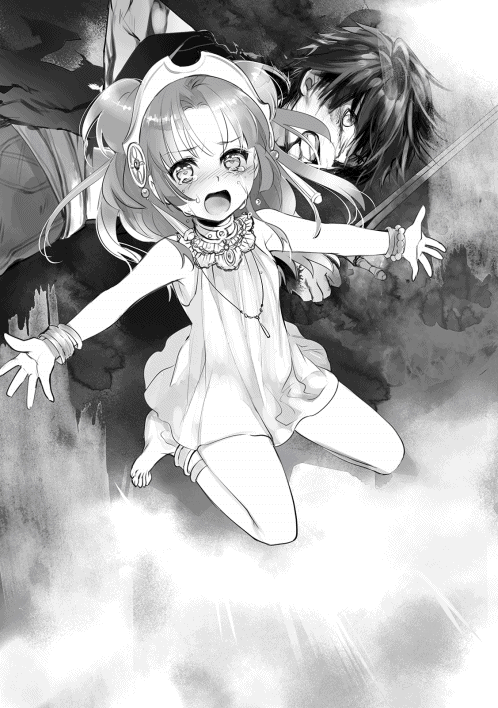
「そんなこと、できません......!!」
「いいから、下がっているんだ!! ヘベさん、アテナを頼む!!」
「そうだ、それでいい。これで終わりになるからな......金色の矢よ!!」
ヘラクレスが僕を見下ろした。ヘベさんが泣き叫ぶアテナを連れて行く。稲妻がヘラクレスの生み出した魔法陣に収束する。そして、それが僕の頭へと向けられた。
「これ以上続けるのならお前は死ぬ。死にたくないならどけ。もう邪魔をしないと誓え」
「できるわけないだろうが！」
「なぁ、ラティ。あのお嬢ちゃん、ノイだったか？ あの子を自分の手で殺すことになったらどう思う？ どうやって謝ればいいと思う？ どうやって、復讐すればいいんだよ!!」
「それは......」
僕はその状況に落ちていないから、何も言い返せなかった。ヘラクレスの苦しみは分かる。分かるけど、真の意味では分かってあげられていない。
「ヘラクレス様！ もしお兄様にそれを放ったら、わたくしが絶対に許しません！ 何年かけても、絶対に貴方に復讐をします！」
アテナの声を、ヘラクレスはまったく気にしていなかった。先ほどよりも濁った目、全身からひしひしと感じる殺意は理性が殆ど失われている証だろうか。
「ねえ、ヘラクレス。君は人のことを言えるのかい」
「ぁ？」
「僕を殺し、ラドンを殺し、《黄金の林檎》を手に入れて誰が幸せになれるんだ？ 君の家族が、それで幸せになれると本気で思うのか？ たかが林檎を手に入れるために、多くの人を不幸にして、それで神託を果たしたって言えるのか？」
吐き捨てるように言った。ヘラクレスは笑った。
「林檎を手に入れるのに条件はない......。それさえ達成すれば、家族は救われる」
「いいや、救われないね。君も家族も新たな罪に苦しむことになる」
ヘラクレスの蹴りで体が吹き飛んだ。跳ね飛ばされながらも、僕は叫んだ。
「僕は人間として生きるって決めている！ 大切な人を守るためなら、多くの人に笑われてでも努力してやるよ！ 傷ついたっていい！ 命が削れたって構わない！ 困っている仲間がいるのなら、手を差し向けてやる！ ヘラクレスだって分かるだろう！ 大事な人を守るためなら、人はなんだってできることを！」
ヘラクレスが一瞬、迷った。そこで言葉を切って、僕は治癒をかけながら立ち上がった。
「......自分を犠牲にしてでも助ける、か。人間らしい愛情表現だな」
「いいや、人族も、神様も、幸せを求めて生きている。幸せを奪われたら奪い返し、やがて不幸を生み出す。僕の幸せは、お爺ちゃんたち家族や仲間たちと明日を迎えることなんだ。淡々とした日常が何よりも幸せなんだよ」
最後の気力を振り絞り、《アダマスの銀剣》を構えた。
「ヘラクレス。君は強い。強いけど、僕には絶対に届かない。一人で強くなった気になってしまったお前には、強くなる資格がない！」
「......その怪我で、よく減らず口が叩けるな」
僕はこの二年間で、三体の悪魔を葬った。その間、多くの鍛錬を積んできたんだ。できることなら肉体的消耗が激しすぎるので使いたくはなかったが......。
「人間は善にも悪にもなれる。誰しも心の中に闇が潜んでいて、それを道徳で抑えているんだ。誰もが天道、人間の道を歩むことを望み、餓鬼、修羅、畜生、地獄には染まりたくないと考えている。でも、それでは君に届かなかった。僕には君の気持ちが完全に理解できないのだから、当然だ」
《アダマスの銀剣》を鞘に収めた。変わりに両手で印を結ぶ。
「君が修羅の道を行くのだとしたら、僕もまた修羅になって戦うしかないみたいだね」
「......何を、するつもりだ？」
「僕の師匠が教えてくれた力さ」
アスラさんは言っていた。修羅は修羅を、地獄は地獄の気持ちを知っているから、救うことができるんだって。どんな存在でも、必ず他人の気持ちに共感して、傷を癒すことができるんだって。それこそが、天道への導き。
精神を解放し、自身の眠る六道の精神の一つだけを限界まで解き放つ。
『──【修羅開門】!!』
僕の体を、煉獄の炎が包み込んだ。
そして......ヘラクレスが、吹き飛んだ。
場所が変わり、ここはラティの自宅。
天空神ゼウスとアスラは、茶を飲みながら話をしていた。
一年程前、アスラはラティを鍛えるために、黒き妖精たちが暮らす天界──アルフヘイムへと旅に出た。その旅から戻ってきてから、ラティは力の加減が以前よりも格段に上達したことが気になっていたのだ。
「帝釈天たちに気に入られた、というわけじゃのう」
ゼウスは、アスラをじっと見ながら頷いていた。
「そうだ。小僧は優しさが勝りすぎている。非情になる心を捨てられず、中途半端に戦えば死が待ち受けているだろう。しかし、小僧は強い。強すぎる。そこで帝釈天がラティを見て、伝説の神人『ミッシャ』だと気づいたのだ」
「ふむ、で、アスラもそう思うか？」
「間違いないな。小僧は『ミッシャ』だ。これは大変なことになってきたぞ、我が友ゼウスよ」
ゼウスは、白髪を手で梳かしながら唸っていた。
「なるほどのう......。確かに、尋常じゃない魔力を感じておった。『ミッシャ』ということは、ラティにはこの星の命運を守る使命が与えられたのじゃろう」
「どうする。北欧の神々にも連絡するか？」
「それはまだ早い。特に主神オーディンは信用できる男じゃないからのう」
「同感だな」
悩む神々の部屋に、コンコン、と音が響いた。
「どなたかのう？」
玄関の方から、甲高い声が聞こえてきた。
「ラファエルよ〜！ ゼウス、開〜け〜て〜〜〜!!」
扉を開けると、美しい六枚の翼を生やした大天使が入ってきた。
彼女がラーファの母、ラファエルである。
「なんじゃ。お主まで訪ねるようになったのか」
「それどころじゃないわよ〜!! 今ね、妖精たちに聞いたんだけど、ヘラクレス君が戻ってきてるみたいよ」
「なんじゃと？」
ゼウスとアスラは顔を見合わせた。へーラーがヘラクレスに凶暴化の魔法を唱えたことは、神々も天使もほぼ全員が知っている事実。だからこそ、なぜ訪れたのかが分からなかった。
「しかもね、ラティ君とノイちゃんも一緒みたいなのよ〜！ 神託を受けたエウリュステウス君が、《黄金の林檎》を取ってこいって命令を出したんだって！」
「あの最弱の泣き虫王の命令か。祖父も父親も立派だが、エウリュステウスは、生まれつき性格が歪んでいるからな。権威に取り付かれて、ヘラクレスに玉座を奪われることを恐れているのだろう」
ラファエルとアスラが顔を見合わせて喋っていた時だった。ゼウスがテーブルを叩いた。
「......待たんか。神託とは何のことじゃ」
「ゼウス、お前が出したんじゃないか」
「そうだよ〜。罪で苦しむヘラクレス君を見て、少しでも罪を軽くするために十の試練を与える〜って言ってたじゃない」
ゼウスの目が、鷹のように鋭く光った。
「確かに言ったが、ワシだって元最高神じゃ。自分の息子が苦しんでいるからといって、独断で神託を出すほどボケてはおらん」
「......ど、どういうこと？」
「ワシが聞いたのは、ヘラクレスが自らの罪を戒めるためにエウリュステウス王に仕え、試練を与えて頂いたと聞いたのじゃが」
ゼウスが唾を飲み込む音が聞こえた。出してないはずの神託が、ヘラクレスに届いている。それが意味することは──何者かが暗躍しているという事実。ラファエルは慌てて部屋を出ようとした。
「私が止めにいってくる!!」
「待て、大丈夫だ」
「大丈夫じゃないよ!! 相手はヘーラー女王様だよ！ 一夫一妻を重んじる婚約の女神様だよ！ ヘラクレス君の存在を認めるはずがないし、《黄金の林檎》を渡すはずがないもん！ ヘラクレス君は真面目だから、追い込まれているから......！ きっと、《黄金の林檎》を奪うためなら何だってするよ！」
駆けようとするラファエルの翼を、アスラが引っ張った。そのまま床に倒れる。
「い、いったーい......何するのよぅ〜！」
「大丈夫だと言っている」
「どういうことじゃ、アスラ？ ヘラクレスが暴れたらヘーラーたちでは止められない。ヘスペリデスは半壊どころか全壊するかもしれんのじゃぞ？」
アスラは、力強く言い切った。
「小僧が一緒なのだろう？ 小僧の方が何倍も強い。心配することは何もない」
アスラはリビングに戻り、大きな縦鏡の前に立った。そこに魔力を念じると、ラティたちの様子が映し出された。
煉獄が僕を包み込んだ瞬間、金色の王剣を放った。半神だけあり一瞬で反応を見せたヘラクレスは大剣で受け止めたが、威力を完全に抑えることができず、吹き飛ばされていく。その目は見開かれ、何が起きたのか分からない様子だった。
「......その力はなんだ」
その叫びに応える。
「──君が地獄を望むのなら、僕が地獄を与えようと思ってね」
僕は《アダマスの銀剣》を引き抜き、身体の怪我を一瞬で癒してみせた。
【修羅開門】。
人族が司る六道の精神、修羅を極限まで解放したことによる爆発的な身体強化の極意。長時間の使用は身体に大きな負荷がかかるが、一時的に神の頂に近づくことができる。
「まずは反省してもらう。ここまで黄昏の女神たちを傷つけたことに、ラドンを殺めようとしたことへの罪を知れ」
僕は本気で怒っているんだ。理性に支配されかけたヘラクレスに、ではない。僕自身にである。今も仲間だと信じているヘラクレスを止められないことが、彼の理性を取り戻す術を知らない不甲斐なさが、僕を激情させていた。
「──雷駆ッ!!」
雷駆は魔力を利用した高速移動魔法のひとつ。地面を蹴り上げ、魔力で出来た足場を蹴って瞬時に肉薄した。ヘラクレスは倒れたままだったが、咄嗟に切り返す。だが、甘い。銀剣と接触した瞬間、大剣が粉々に砕け散った。
「......馬鹿な」
「そんなことを考えている余裕はないよ」
「っ!?」
先ほどまで僕に一方的な暴力を振るっていたヘラクレスの身体に、浅い傷が刻まれていく。見える。ヘラクレスの動きがゆっくりと見えて、徐々に恐怖を抱いているのが見える。だが、すぐに険しい顔へと戻った。
「負けられるものかああっ！」
両手で生み出した特大の金色の矢を放ってくる。金色の矢はお爺ちゃんの力を受け継いだヘラクレスが独自に編み出した魔法なのだろう。しかも威力は金色の王剣よりも上。最上級の魔法に匹敵する。でも、こっちだって負けられない。
「はあああああああああっ!!」
《アダマスの銀剣》に魔力を込め、迫る金色の矢を打ち払う。
「なぁっ!?」
ヘラクレスが呻きを上げた。ほぼ同時に、僕は突風のようにヘラクレス飛び込み、その顔を殴りつけた。ヘラクレスは地面に転がりながら、再び金色の矢を放つ。数は六、多すぎる。これこそがヘラクレスの魔法ってことか。今まで一つしか金色の矢を撃たなかったのは、人族の僕に使う必要がないと判断していたから......、いや、僕を殺したくなかったのかもしれない。
「ラティ、これで終わりだっ!!」
全ての矢が一斉に僕へと襲いかかる。掠れば僕の体は木っ端微塵に吹き飛んでしまうだろう。でも、不思議と怖くはなかった。
「──雷楯ッ!!」
右手を伸ばし、神雷の楯を構築させる。この楯は風と雷の魔法にのみ作用し、どんな威力の魔法でも打ち消す効果を持っている。限定条件下で活躍する魔法だ。金色の矢の全てを楯が打ち消したのを確認し、僕は駆け出した。ヘラクレスは僕を視界に捉えられていない。そりゃそうだ。雷駆発動の状態だと速すぎるのだ。
「無実の人を巻き込んでどうするんだよっ!!」
ヘラクレスに再び殴りかかると、小石が水面を跳ねるように、何度も地面を跳ねていく。やっと収まったところで、先回りをした僕はヘラクレスを覗き込んだ。
「覚悟を決めるんだ──」
心臓の鼓動が早まり、【修羅開門】の限界時間に達しようとしているのが分かった。僕をしっかりと見据えるヘラクレスを見下ろし、銀剣を振り放つ。先ほど、ラドンにしようとしたことを真似するかのように。
「ヘラクレスッ!!」
《アダマスの銀剣》をヘラクレスの顔の真横に突き立てた。激しい土柱が上がり、激しい揺れが起きる。魔力を込めた一撃は、楽園を覆うほどの土を巻き上げた。遅れて、何者かが近づいてくる足音が複数聞こえてくる。どうやら楽園に住むあらゆる存在が集まっているようだ。
「──ラ・エアライド」
竜巻を引き起こす魔法によって土煙を取り払うと、そこには目を見開いたまま硬直するヘラクレスの姿があった。
「分かったか。人を傷つけても得られるものは、苦痛だけなんだよ」
彼からは狂気が感じられない。これは予想だが、ヘラクレスの失いかけていた理性は、本能の奥底に眠る恐怖を引き出すことで蘇ったのかもしれない。すでに、戦意を喪失しているようだった。
「......オレの、負けだ」
ヘラクレスが呟くと、バチン！ という音が僕の奥で弾け、僕が開放していた修羅が解除された。限界だったようだ。何度も経験してきた感覚変化に、僕は反射した。力が外へ溢れることに逆らわず、その場で剣を杖代わりにして脱力する。
うん、わかっている。今の急激な解除は、おそらく魔力と肉体の限界を警告するものに違いない。動物が本能で持つ生存本能が働いたのだろう。長時間使えるようにするには、僕自身が更なる高みへ登るしかないだろう。お陰で、僕はぼんやりとヘラクレスを見ることになった。肉体を酷使した反動がドッと押し寄せているのだ。
「ラティ......お前は凄いな......オレが、出会った中でも一番凄い。だけど、優しすぎる」
「ヘラクレス......？」
「オレは、あいつらに罪を償いたい......だから、《黄金の林檎》を手に入れないといけないんだ......なぁ、どうすればいい......どうすれば、オレはあいつらに......謝れるんだ......うっ......あぁ......」
次の瞬間、ヘラクレスは立ち上がった。ボロボロに傷ついた筈の体は、不死の力によって徐々に癒えていく。僕を見て一瞬だけ申し訳なさそうにすると、膝から崩れ落ちた。声を大にして泣く背中は異様に小さく見える。彼の理性を取り戻すことはできたが、彼の罪を取り払ってあげることはできない。僕にできることは、仲間として声をかけてあげることだけだった。
「ねえ、運命って何だと思う？」
「......そんなの、生まれた時から決まってるクソみたいな未来だろう」
「半分正解だよ。僕もそう思ってた。でもさ、運命は選ぶものだと思うんだ。『これでいい』って妥協するのも手だし、『このままじゃ駄目だ！』って戦う道もある。後者のが良さそうに見えるけど、それで失敗する人だって沢山いる。正解なんてないんだよ」
アテナたちが駆け寄ってくるのが見えた。
「なぜ、そんなことを聞いた？」
「罪が逃げないように、幸せも逃げないってことを言いたかったんだ。ヘラクレスが犯した罪は一生消えないよ。こればかりはどうしようもない。だって、ヘラクレスが背負うべきことだ。その結果、さっきみたいに修羅となってもいい。それも運命だから。でもさ、もっと幸せになれる方法を選びたくないかな？ 僕、ヘラクレスなら選べると思うんだ」
僕も、膝が抜けてしまった。ようやく話ができるようになったっていうのに、まだ倒れるわけにはいかない。意を決して、真相を話すことにした。
「悪魔がヘーラーさんを洗脳したんだ。心を操り、君との間に亀裂を作ろうとした」
「......なんだと？ それに根拠はあるのか？」
「あるにはある。だけど、最終的には僕を信じてもらうしかないかな......」
始まりの天使サタナエルがヘーラーさんを訪ねたこと。すでに、悪魔ベリアルに堕ちたこと。その裏で操っているのが預言者ダンタリオンだということを全て話した。
「......それでエウリュステウスの様子がおかしかったのか」
「心当たりでも？」
「ああ。少し前までエウリュステウスは、生け捕りにした猪を持っていっただけで壷の中に隠れる程の小心者だった。だが、預言者がきて暫くしてから、あまり動じなくなったんだよ。少しは成長したのかとも思ったが......」
預言者ダンタリオンの仕業に違いなかった。
「でもな、だからって女王を許せってのはできない......。ラティの頼みでも、オレに家族を殺させたアイツだけは許せないんだ......」
たとえ直接の原因が無かったとしても、罪を犯した相手を恨まずにはいられない。それが感情ってもんだ。全てが最善の選択肢で選べるのなら、戦争なんて絶対に起きるはずがないのだから。
「お兄様、大丈夫ですか!?」
丁度、アテナが辿り着いた。怪我がないことを伝えるとほっと表情を和らげてくれて、キッとヘラクレスを睨んだ。ヘラクレスは素直に謝罪したが、アテナは納得いかない様子だった。
「ヘラクレス様......よか、った......戻ってくださったのですね......」
いつの間にか、ヘベさんがヘラクレスに抱きついていた。彼の満更でもなさそうな顔を浮かべているのを見る限り、ヘラクレスもヘベさんには好意を持っているようだ。
「ヘラクレス、君には護るべき存在がまだいる。手を汚すにはまだまだ早いよ」
「......そうだな。まずは悪魔を倒すところからやり直すべきか」
恐らく神託も、仕組まれたものに違いないのだから。
「──ふん、無様に負けたようね。いい気味だわ」
「ご主人様〜!!」
そこに、ヘーラーさんとノイが姿を見せた。
「はん、オレを笑いに来たのか？」
「ええ、もちろんそうよ」
睨み合う二人の仲は、簡単には修復できない。
今にも口論を始めそうな空気にハラハラしていると、ノイが僕を支えようとして転んでしまった。
「あぅ、落としちゃいました......」
「だ、大丈夫？ って、それは......」
ノイに手を差し伸べると、ノイの手から黄金に輝く林檎が転がっていく。
「......これ、まさか《黄金の林檎》？」
どうして林檎がここに？ その謎を拭うように、ヘーラーさんが言った。
「ヘラクレス、貴方は本当に馬鹿よ。このアタシが何度もヒントを与えたのに気づかないなんて、本当に神の血を受け継いでいるのかしら？」
「......どういうことだ」
「半神の貴方には与えられないけど、神様に協力してもらって《黄金の林檎》を受け取ればよかったのよ。例えば......、そこのメーティスに似た女の子ととかね」
「わたくしですか？」
なるほどね。本当はヘーラーさんもヘラクレスに協力したかったのだ。でも、神々の女王としての立場もあり、過去に散々嫌がらせをしてきたこともあり、素直になれなかったのだろう。
ヘーラーさんは他人と接することが苦手なのだ。だから、僕が言った。
「ねえ、ヘラクレス。君の名前の由来って何だと思う？」
「............知ってるよ。ヘーラーの栄光。それがオレの名前だ」
ヘラクレスは《黄金の林檎》を拾い上げ、ヘーラーさんへと返した。
「オレにはもう必要ねえ。オレは自分の力で悪魔を殴ってくる。......まぁ、ついでだからな。あんたの分も殴ってきてやるよ」
「......あらそう。じゃあお願いするわね」
二人は憎み、憎まれる仲かもしれない。でも、確かに家族としての絆が存在しているんだと思う。
ヘーラーの栄光なんて、誰よりも愛していなかったらつけるはずがない名前なのだから。
「......これで解決、だね」
「あ、お母様！」
っと、今度はメーティスさんが現れた。どこにいたんだろう？
「メーティス......、八つ裂きにするわよ？ さっさとゼウスを屋敷まで帰しなさいっ!!」
「......それはゼウスが決めること」
二人の女神は睨みあい、絶対に譲らないという目を交わせ、火花を散らしていた。
とりあえず、何事も無事で終わってよかったかな......と、考えた瞬間だった。
『──このような形で計画が台無しになるとはな』
とてつもない殺気が周囲に広がった。頭上から聞こえる低い声。視線を上げれば、そこには黒い翼を生やした天使が僕達を見下ろしていた。ヘーラーさんが叫ぶ。
「サタナエル......貴方、よくもやってくれたわね!!」
ソロモン悪魔、序列六十八位の堕天使、【地獄の王ベリアル】が姿を見せた。
‡
『──偽の神託を授けてまで誘導したというのに。何故、計画が破綻したのか』
降り注ぐ黄昏の明かりに、薄く曇った空が揺れる。空に吸い込まれそうな錯覚の中、殺意を帯びた気配が広がっていく。ベリアルは、僕を見ていた。
「嘘の神託......？ お前がヘラクレスに十の試練を吹き込んだのかっ！」
『──さてな』
ノイは僕の腕を引っ張った。
「ご主人様......、始まりの天使サタナエルは、人々に嘘の神託を与えることで秘密を聞き出し、地獄を見せることを娯楽として楽しんでいました。それを利用して多くの悪行を重ねてきたんです！」
やはり、こいつがヘラクレスに偽の神託を下したようだ。
『──始めるぞ』
楽園が影に覆われていく。闇が地平線を埋め尽くし、重なり合った足音が響いた。姿を見せるのは、軽く千を超える異形の軍団だった。
「悪魔が襲撃したわっ!! 戦えない者は屋敷まで逃げなさい!!」
ヘーラーさんが叫びを上げる。一瞬、動けなかった精霊達だが、『悪魔』という言葉に反応し、慌てながら駆けていく。メーティスさんが言った。
「......まずいね。ラドンは戦えないし、黄昏の女神たちも傷ついているんだよね......。今、戦えるのは私達と、少数の天使と精霊だけみたい」
全員合わせても、五十にも満たない。圧倒的な戦力差であった。
「ふん、関係ないわよ。迎え撃つまでだもの」
「......そうだね。やるしかないもんね」
天使たちが準備を始める。残された魔力は少ないが、僕も治癒魔法に魔力を注いで傷を癒した。
『──神々の女王よ。貴様は恐れるに足らない。なぜなら力を持っていないからだ』
ベリアルの声に、ヘーラーさんは動じない。代わりに魔法書を取り出してページを捲っていく。
「ソロモンの悪魔の目的は知っているわ。ソロモン王を復活させ、世界を地獄に作り上げようとしているのでしょう？ くだらないわね。アタシがそんなことをさせないから」
後方から、次々に楽園の守護者たちが集まってくる。《九首ハイドラ》、《双頭黒犬オルトロス》、《単眼巨人サイクロプス》......、どれもヘーラーさんが手懐けている神獣だ。
「女王は下がっておけ......足手まといだ」
ヘラクレスが立ち上がった。
「そうね、確かにアタシには力がないわ。だってゼウスと比べても、全然努力が足りないからよ。それでもね、アタシは神々の女王なの。だから、悪魔を前にして引くわけにはいかないの。アタシを慕ってくれるみんなのためにも、この楽園を守るためにもね......」
津波のように押し寄せてくる異形の軍団。焦燥感に駆られる。でも、楽園の守護者であるヘーラーさんは、怯む素振りを見せず、天使と精霊たちを従え、凛然と指示を飛ばした。
「みんな、頑張りなさい!!」
『はいっ!!』
誰一人として諦めず、誰一人として泣き言を言わない。
「おい、無理だって言ってるだろうが！ さっさと撤退してろっ！」
絶望の色を濃くしていく戦況を前に、ヘラクレスが悲鳴を上げる。
「うるさいわね。撤退はしないわよ」
ヘーラーさんの声音は冷たく、決心は硬い。
「ここで撤退したらヴァナヘイムに悪魔たちの拠点が作られるわ。そうなれば次々に他の悪魔も攻めてくるでしょうね。きっと多くの天使と神々の命が失われるわよ......ヘラクレス、貴方は一時期でもアタシの息子だった筈よ。神は悪魔と戦う存在、その程度のことがわからないでどうするつもりかしら？」
「ぐっ......」
ヘーラーさんの言うとおりだ。ここで逃げたとしても、他の悪魔たちが責め込んでくる可能性が高い。そうなれば、神々と悪魔の戦争が本格的に始まってしまう。どちらにせよ、僕たちは戦うしかないのだ。
「ラティ、踏ん張りなさい！ サタナエルが現れたってことは、地上でもエウリュステウスが動き出した危険があるのよ。立ち止まっていられないわ!!」
「ええ。そうですね......」
【修羅開門】の影響なのか、身体中が痛い。意識が遠のく。でも、戦わないと。ここで戦わなくちゃ、僕は何のために剣を握っているのか分からないから......！
「アテナだったわね？ この《黄金の林檎》を受け取りなさい」
「わ、分かりました！」
ヘーラーさんの投げた《黄金の林檎》をアテナが掴み、ぎゅっと胸に包み込んだ。
「みんな、聞きなさい！ このままだと地上も天界も無事では済まないわ。残念だけど、力を失った神様は悪魔よりも弱いのよ。だから、天界はアタシたちでどうにかするしかないわ。意味が分かるわね？ ──全員、死ぬ気で楽園を守りなさい！」
ヘーラーさんの号令で、僕たちは一斉に武器を振り上げる。
この場を切り抜ける方法なら一つだけある。天空神が誇る最強の魔法、雷霆を唱えることだ。でも、あの魔法は世界を消滅させかねない力を持っている。だから、お爺ちゃんから固く使用を禁止されてしまった。それに僕の魔力が減りすぎている。このままでは制御することもままならない。現状、打つ手がなかった。
「......ねえ、ヘラクレス。アタシは最低の母だったわ。でもね、今からでもやり直せるかしら。ここで天界を救ったら、少しは罪滅ぼしができるかしら？」
「......許すことはない。が、少しは見直すかもしれねえな」
「そう、ありがと」
二人は顔を見合わせ、短い言葉を交わし、笑っていた。今だけは親子に戻っていた気がした。
そして、誰かが僕の頭に手を置いた。
「......ラティ君、神様の問題に巻き込んじゃってごめんね」
メーティスさんだった。白くほっそりとした指が、優しく髪をかきまわす。メーティスさんは慈しむように僕の頭を撫で続け、柔らかな笑みを浮かべた。どうして、悲しそうな瞳を......。
「......危なくなったら逃げてね。私が絶対に助けてあげるから」
「メ、メーティスさん、どうして、そこまで......」
「......私がラティ君の育ての親だからだよ。義理、だけど」
ふふ、と笑った。その口許に描いた緩やかな曲線は、寸毫たりとも歪まなかった。僕は泣きそうになってしまった。
「お母様ぁ......やだっ......わたくしも一緒に戦います!! やだ、離してくださいっ!!」
ヘベさんに連れられて、アテナが暴れて、叫んで、泣き叫んでいた。
『──総員、かかれ!!』
「みんな、迎え撃ちなさい!!」
楽園の未来を賭けた戦いが始まった。
‡
光、音、香りの全てが絶望に染まっていく。
ベリアル率いる異形の群れの前に、僕たちは敢えて姿を晒して歩み出た。
僕の命綱であるどんな魔法も打ち消す《ギガントマキナのローブ》は、【修羅開門】を行ったことで魔力が激減した僕の技量を、ある程度は補ってくれるはずだ。
前世の僕なら、腰を抜かして逃げていたと思う。でも、今はむしろ立つことで戦い続けるのが目的だ。ここで戦い、一秒でも長く注意を引く。そのためには派手に立ち回ることが肝腎だ。
『ウォオオオオオオオッ!!』
ゾンビと動物を融合させたような腐った異形が僕たちを発見し、咆哮を放つ。その圧倒的な数を前にしたら、僕たちの敗北は明らかであった。
『──女王、潔く死を選べ。せめてもの情けだ。一瞬で終わらせてやる』
圧倒的な存在感を放つべリアルを前に歩を進めながら、僕たちは緩く深呼吸をした。万物を切り裂く愛剣《アダマスの銀剣》。この剣だけが頼みの綱だった。修羅の開門は、もうできない。
「──金色の王剣っ!!」
魔法を発動。上空に空色の幾何学模様が浮かび上がり、閃光が走る。金色の名に相応しい輝きが一瞬だけ戦場に迸り、真っ直ぐに異形の軍へと駆け巡った。
僕が悪魔と戦うのは五度目だ。ある程度の対処法は知っている。でも、ベリアルの連れてきた異形たちは多種多様で、【魔将】と呼ばれる軍を抜いた悪魔たちの姿も見える。だから、ここからは一手も仕損じることはできない。少しでも判断を誤れば、僕たちの全滅へと直結する。
もっとも、すでに全滅へのカウントダウンは始まっているにも等しいが。
「ベリアル！ 貴方だけは絶対に許さないわっ!!」
楽園に群がる悪魔たちを前にして、ヘーラーさんは母親として名乗りを上げた。悪魔に話が通じないことなど知悉しているだろうが、本当の目的はベリアルの注意を惹きつけるためのようだった。
「十戒より第六章、第七章より《守護天使》たちよ！ 《神滅炎》を放ち、蔓延る悪を滅しなさい！ 第八章は治癒を、第九章は魔法を、第十章は強化のまじないをかけなさい！ 偉大なる魔法書の名は──」
『──その程度の力で我を倒そうとするか？』
詠唱の途中で、総勢三〇を超える異形が一斉に動き出し、氷の矢を放った。直系が僕の身長の数倍はなんなんとする太さの氷柱が、怒涛のごとくヘーラーさんに集中する。でも。
「──《モーセの書》。全てを打ち消しなさい」
強く低めた声で呟き、蒼き魔法陣が軽やかに舞った。ヘーラーさんの命を奪うはずだった氷柱はねじ曲がり、空中で粉砕していく。
《モーセの書》は僕も知っている。旧約聖書に登場する奇跡の魔法使いで、杖を蛇に変えて見せたり、炎の壁を作り上げたり、海を二つに割ったりと、神の意思を聞き取る不思議な力を使い、様々な国家や宗教に影響を及ぼした魔法使いである。そのモーセが残した書物には、十戒に対応するように十冊の禁書が用意されている。それこそが《モーセの書》だ。その内容は奇跡と魔術についての区別から始まり、天使や精霊の加護、更に神々が与えてくれる奇跡の借り方が記されたという。
その禁書を独自に改良したものを用い、ヘーラーさんは戦いを挑んでいた。
「アタシは女王の器として相応しくないかもしれないわ！ 自分の息子に殺意を持つくらいだもの......貴方が暗躍しなくても、いつかは同じことをしていたかもしれない。これで女王を名乗れるのだから酷いわよね......」
ヘーラーさんが唱えた炎の壁が竜へと姿を変え、敵陣へと襲いかかる。異形たちでは理解できない奇跡の魔法を前に、戦場に混乱の悲鳴が迸らせる。
「でもね、どんなに最低でもアタシは母親なのよ！ お腹を痛めてなくても、血が繋がってなくても、素直に認められないけど、あの子を一度でもこの手で育てちゃったの！ 嫌いになりきれるわけないじゃない！」
ヘーラーさんは《モーセの書》に魔力をこめた。
「アタシは始祖の神々の女王、結婚を司る女神ヘーラーなり！ アタシの楽園に足を踏み入れた愚か者を、打ち砕き、葬り去る──神々に反旗した貴方を許しはしない。故に守護者として立ち塞がるわ！」
黄昏の空に星座が見える。二〇時の南、巨蟹宮のものだ。
あの星座は確か、子供のヘラクレスを襲うのに使ったとされた毒蛇──！
「この身に降りかかるいかなる罪も背負い、悪魔に滅びを与えてみせる！ 貴方に言っても詮無きことかもしれないけど、なればこそアタシは人類を導く星の女王なのよ！」
魔法書に魔力を注ぎ、あたかも翼を広げて飛翔する。高らかに告げた。
「毒蛇たちよ、全方位から責めなさいっ!!」
楽園中に魔法陣が展開し、僕たちを守るように毒蛇が現れる。戦場は昂ぶり、異形たちと交戦を開始した。僕たちも、飛び出すなら今のうちだ。
「いくよッ！」
地を蹴り、駆け出す。
『ウオオオオオオッ！』
敵意を剥き出しにした異形を対象に、僕たちもまた己の力をあらわにした。ヘラクレスの金色の矢と僕の金色の王剣によって道を切り開き、天使や精霊たちの魔法で一気に殲滅を図るが、獣の異形が、鳥の異形が戦場を縫うように現れ、それぞれ別の魔法を放つ。ノイが結界を張ってくれるが、それでも全ては防ぎきれない。あるものは翼を射抜かれ、あるものは地面を舐めた。少しずつ数を減らした僕たちに、破壊が振り撒かれる。
『──《黄金の林檎》を手に入れるために苦労してシナリオを書いたのだが、まぁいい。全ては順調に進んでいる』
「どういうことよ！」
高速で迫る毒蛇の全てを、ベリアルは氷の剣で迎え撃つ。涼しい顔をしていた。ヘーラーさんにべリアルが肉薄する。
『──我らは生贄を求めていた』
ベリアルの声を聞きながら、僕たちは戦い続けた。
《アダマスの銀剣》が風を切り、前から来た土槌の魔法を跳ね返した。強引にベクトルを曲げられた土槌は弧を描き、飛来していた鳥の異形へとぶつかる。赤黒い飛沫を上げながら落下していく。
『──まずは半身の血だ。人族で数えるなら、数十万人分の価値はあるからな。そこで最初に目を付けたのはヘラクレスだった』
僕の守るという意思と戦うという意思が完全に同化する。雷駆を使い、異形たちを例外なく疾風迅雷の速度で斬り抜ける。僕が感じた意思のままに《アダマスの銀剣》を振り続け、次々に異形を葬っていく。
『──そこで、ヘラクレスに神託を与えることにした。そこで我らが王を蘇らせるために《黄金の林檎》が必要だったことを思い出し、隙を見て奪ってきてもらう算段だったのだが......あの小僧のせいで失敗した』
僕を強く睨み、愉快そうに笑ってくれていた。言い返してやりたいが、そんな暇も余裕もない。延々と降り注ぐ異形たちを捌くため、僕たちは嵐の如く剣を振るい続けた。
『──ま、今ごろは我の部下が《黄金の林檎》を奪いに向かっている。虫の息のヘスペリスなど、怖くはないからな』
えっ......ヘスペリスって......アエリカさんたちが戦っているってこと？ な、なんで!? 彼女はヘラクレスに受けた傷が原因でまともに戦うことなんてできない身体のはずだ。アテナが治癒魔法をかけてくれたとはいえ、安静にしなければ傷が開いてしまう......それなのに《黄金の林檎》を守るために今も戦っているってどうして......まさか使命を果たそうと？ す、すぐに助けないとっ！
「アエリカさんっ!!」
一瞬から次の一瞬への綱渡り。しかし、異形が多すぎる。林檎の木までの道は当然塞がっており、とてもじゃないけど近づけない。
『──完全に狂気に目覚めたヘラクレスを生贄にするつもりだったが、予定は変更だ。もう一人の半神を利用する』
「もう一人の半神だと？」
ヘラクレスが叫んだ。
『──ああ、そうだ』
ベリアルはニヤリと笑い、高らかに告げる。
『エウリュステウスを生贄に捧げ、ソロモン王を復活させる』
ソロモン王......フェニックスが言ってた存在だ。ソロモンの悪魔たちを率いる王にして、悪魔たちの千年王国を復活させる鍵となる者。かつて世界を混沌に陥れた大いなる存在。
「そんなこと、許されるわけないじゃない！ 貴方は何が望みなのよ、サタナエル......！」
『──新世界で神の一柱にして欲しい。それだけだ』
「貴方......まだ、諦めていなかったのね」
『──当然だ。始祖の神々が生まれると同時に命を授かったのに、我だけは神の手下として働けと言われてきた。多くの人々を救い、活躍もみせた。それなのに、なぜ我は神の一員に招かれない？ 神々よりも功績を立ててきた我こそが、神に相応しいというのに！！』
至近の氷剣がヘーラーの間合いへ潜り込む。小柄な体躯を捻り避けようとするが、距離を詰められてしまえば的にしかならない。猛然とヘーラーさんの腹部に氷剣が突き刺さった。
「ヘーラーさん！！」
異形の魔法を弾き飛ばし、まずはヘーラーさんの回復をしようとした。が、異形たちが僕に張り付いて離れてはくれなかった。
「あ......ぐぅ......ま、まだ、よ......まだ、負けられない......!!」
『──むっ!?』
「アタシ、はね......あの子に、ヘラクレス、に......謝ってないんだからぁ！ まだ死ねないのよ!!」
ベリアルを掴みあげたヘーラーさんが、両手に込めた魔力を解き放つ。毒蛇に回していた魔力供給を止め、ベリアル目がけて一気に炸裂させた。
「全てを燃やし尽くしなさい──焼殺っ！」
赤き閃光と天まで昇る炎の柱が戦場に襲いかかった。爆発規模の突風は灼熱の温度を宿しており、僕たちは慌てて結界を張り巡らせる。異形たちすらも巻き込むヘーラーさんの必殺魔法は火の粉を撒き散らせながら、周囲の全てを火の海へと変えてしまった。長閑だった果樹園の一部が燃え、ぱちぱちと音を鳴らす。
ようやく全てが収まったころに顔を上げると、そこに残っていたのは僕たちと、遠くで蠢く異形の影。そしてヘーラーさんは......。
「はぁ、はぁ......あ、ぐぅ......」
戦場の真ん中で膝をつき、出血した腹部を抑えて苦しそうに息を切らせていた。悪魔ベリアルの姿はどこにもなく、一気に異形たちを殲滅したようだった。
......これが、神々の女王の力なんだ。悪魔を倒してしまうなんて凄い、凄すぎる！
「ヘーラーさん、すぐに治療しますっ！」
今は感涙している場合じゃない。急いでヘーラーさんの治療をしないと、本格的にマズイいことになりかねない。そう考えてヘーラーさんの方まで駆け寄ると、
「貴方たち、近づいちゃ駄目よ！」
ヘーラーさんの静止を求める声が聞こえ......。
『──今のは、本気で死ぬかと思ったぞ......この、女王風情がっ!!』
「なっ......」
身体中に火傷を負ったベリアルが、空間より転移してみせた。
そうだ、そうだった。今までの悪魔たちは、誰も彼もが空間を転移する魔法を使うことができる。当然、ベリアルだってその力を行使することができるはずだ。後悔は遅く、ヘーラーさんを蹴り倒したベリアルは凍結した竜を生み出した。爆発的な勢いで増殖する純白の竜が膨張していく。
「アンタっ！」
ヘラクレスが助けに向かおうとするが、四方八方からアイスブレスが殺到する。更に氷竜は周囲の氷破を浮かび上がらせ、百を超えるそれを投げつけるように投げ飛ばした。僕は近くの天使たちを抱えて走り出したが、もはやヘーラーさんに近づくことができなかった。
「だ、大丈夫だから......、誰か、ベリアルを止めて......」
声すら出すのがキツイはずなのに、死ぬ物狂いで僕たちに問いかける。数々の奇跡を起こす《モーセの書》は、ヘーラーさんの手にはない。やがて異形の軍団が迫ってくる。僕たちではなく、ヘーラーさんへと真っ直ぐに向かって。
『──女王よ、潔く死ね』
ベリアルがヘーラーさんの顔面を蹴り飛ばした。顔面を強打され、呻きが上がる。その鼻は折れてしまったらしく、血が噴出していた。それでも諦めず、よろよろと立ち上がり、魔法を唱えようとする。
「ふ、ふ......、私に、相応しい最後かもね......アタシ、ヘラクレスに酷いことしてきたもんね......でも、私が犯した罪を償うことが許されないなら......せめてね、最後くらいは神様らしく死にたいのよ......！」
ヘーラーさんの強い意志が、ベリアルの頬を殴りつける。しかし、ベリアルは顔色一つ変えなかった。
僕たちは常識を超えた反応速度を見せる氷竜を相手に、苦戦していた。魔力で作られた偽の竜に過ぎないのだが、だからこそいくら攻撃しても苦痛を与えることはできず、延々と氷結の吐息が降り注ぎ続ける。
このままじゃ守れない。ヘーラーさんも、アエリカさんも、楽園も、守ることができない。
「ヘラクレス、ごめんなさいね......、あの世にいったら、必ず謝るから......」
「おい、勝手に諦めんなっ！」
ヘラクレスが氷竜を二体同時に葬った。半神の能力は人に比べて桁違いに高いらしく、魔力を消耗しても、僕が身体強化を施した以上の力を持っている。しかも不老不死だ。彼の存在は僕たちにとっても心強いが、当然、体力の消耗は激しくなっていた。
僕もヘラクレスも、一戦交えた後だ。早くも息を切らせた僕たちは、それでも足を止めることなく走り続け、あらゆる咆哮から襲ってくるブレスを打ち払い、ヘーラーさんへ近づく。でも......。
「ごめん、ね......ごめん、なさい......貴方たちだけでも、逃げなさい......」
もう、最後の時が近づいていた。何度も謝罪を繰り返し、涙が零れていく。あれだけ気丈だったヘーラーさんが謝っているなんて......本気で死を覚悟しているのだ......。
『──終わりだ』
悪魔と戦っているという重圧感。一瞬の迷いが死に繋がる緊張感。僅かでも気を緩めたら捌ききれなくなる異形たちの猛攻──精神的な負担も重かった。
「ゼウス、ゼウスゥ......ごめん、なさい......、もう少し......妻らしいことしたかったわ............」
ヘーラーさんの背中は泣いていた。痛みよりも、悔しさよりも、自分の罪が許せなかった、と。
ベリアルから氷の刃が振り下ろされる。
「母さん!!」
ヘラクレスが叫んだ。
永遠にも感じる時の流れ。一瞬で思考が流れていく。どうすればいいんだ。どうしたら、助けることができるんだ。ここにもし僕たちを超えるような仲間がいれば──ラーファさんやリーシャがいてくれれば、助けることができたかもしれない。彼女たちが一緒にいてくれれば氷竜を相手にする負担も軽くなり、もっと効率的に戦うこともできたはずだ。
悔しかった。諦めたくなかった。今の僕では助けることができそうにないのに、希望を求めているのだ。だから、叫んでしまった。
「助けて、お爺ちゃん......」
その時だった。上空から蒼い稲妻が雨のように降り注いだのは。
『──な、なんだ？』
ベリアルが驚いている間にも、稲妻は怒涛の如く数を増やしていく。僕たちを一切狙わず、確実に異形たちに狙いを絞るその魔法は、異形たちが減るほど狙いを絞っていく。獣の異形も、鳥の異形も消滅し、残ったベリアルに全ての稲妻が集中した。慌てて転移を行おうと魔法陣を展開させたが、その魔法陣ごと稲妻が貫いた。
『グアァアアアッ!?』
ベリアルが初めて苦痛を漏らし、その場に倒れこむ。
そして、僕は目を疑った。戦場の上を、天馬が駆け抜けたのだ。恐ろしい速度で駆け抜ける馬車──いや、戦車だろうか。四頭の天馬に走らせた二輪の馬車が目の前を通った。戦車には良く知っている白髭の老人が立っており、続いて六翼の天使と三面六臂の神様が乗っていた。ま、まさか──、
「間一髪、間に合ったようじゃのう」
老人は戦車からベリアルの前へと飛び降りた。そこに立っていた僕のお爺ちゃん、いや......。
「助けにきたぞい、ラティ、ヘーラー!!」
ギリシャ神話最強の神様、天空神ゼウスが立っていた。
「お爺ちゃん、ヘーラーさんが、ヘーラーさんがぁ......」
「あな、た......」
「分かっておる。ヘーラー、そこから動くではない。すぐに終わるからのう？ もう少しだけ待っておくれ」
いつもヘーラーさんを怖がっていたお爺ちゃんが、他の女神と浮気ばかりしているお爺ちゃんが、怒りを滲ませて拳に雷を宿した。それだけで周囲の土が浮き上がり、強力な磁場を作り出す。
「ワシの嫁と子供たちに、よくも好き勝手してくれたのぅ......!!」
『──あ、ぁ、なぜ』
一歩踏みしめるたびに地面が、ジュウ、と音を立て溶けていた。お爺ちゃんの身体が金色に包まれている......。強力な雷撃を宿しているようだった。
「ベリアルよ、ワシが直々に相手をしてやる。......面倒だからのう、全員一度に始末してやるわっ!!」
目をカッと見開き、拳を突き出した。瞬間、目の届く範囲全てに青白い落雷が走った。空も、雲も、景色も、地形すらも変えていく神のいかづち。異形の軍団が、一瞬で半壊した。
「凄いです......」
ノイに同感した。これがお爺ちゃんの力なんだ......。
『──ゼウスは、力を失っていた筈じゃなかったのか......!!」
ベリアルが驚愕している。お爺ちゃんから聞いた話だと、始祖の神々の多くは以前の戦争で力を使い果たし、今は療養中の身だと聞いている。神様の寿命は長いから、その分、回復までも時間がかかるらしい。それを知っているからこそ、ソロモンの悪魔は動き出しているそうだ。
『──まさか、力を取り戻したというのか!?』
「何を言っておる？ ワシは力を失ったままじゃ」
「嘘だ！ 力を失っていれば今の魔法、出せるはずがない......！」
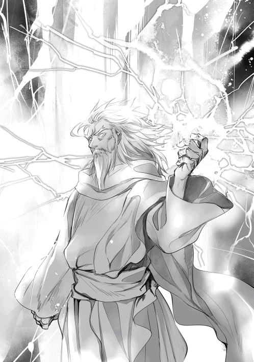
「まだ分からんのかのぅ......《天駆》ッ!!」
お爺ちゃんは、僕たちが目で追えないほどの速度で走った。あの魔法は僕の雷駆よりも、数倍は上の魔法に違いなかった。ベリアルは一瞬で吹き飛ばされ、上空に飛んだかと思えばお爺ちゃんに首を掴まれていた。
「これで力を失った状態じゃよ。本当ならお前如き悪魔、一瞬で消し炭となっておる」
ベリアルの顔が青くなる。
「そうそう、ワシの連れが黄金の林檎を守りにいったぞい。今頃は終わってる頃じゃろうのぅ」
連れ......あぁ、そうか。大天使ラファエルには『神の戦車メルカバー』を管理する特別権限が与えられているんだっけ。彼女は下級二位の【大天使】でありながら、上級第三位【座天使】の称号を授かっている。神々が戦争で利用する神の戦車メルカバーは、『天の車』とも呼ばれ、時間を遡る勢いで戦場を飛び交う機動力を持つ。それに乗って、楽園まで駆けつけたわけか。
ベリアルの顔が青くなる。お爺ちゃんの両手に怒りが込められ、ベリアルの首を絞めたまま言葉を囁いた。
「ワシら神々を──」
瞳が真っ赤に輝き、空を埋め尽くすほどの魔法陣が展開されて、赤く染まっていく。なんとか逃れようとベリアルが暴れるが、お爺ちゃんはまったく動じない。むしろ、片手で首を持ち上げた。
「あまり舐めるでないっ!!」
天空より落とされる蒼き裁きのいかずち。ベリアルは身を焼かれ、絶叫すら上げることができず、塵も残さずに消滅してしまった。その余りにも一方的な力を前にして、僕たちは固まっていた。
天空神ゼウス。元最高神は、神々の常識を超えた存在なんだって、改めて知ることになった。
‡
あれから楽園に残る異形たちを片付け、一日が過ぎた。
騒ぎを聞きつけ、他の神様も駆けつける中、僕たちはラファエルさんに運ばれて、治療を受けることになった。肉体的に一番重症だったのはヘーラーさんで、僕は魔力の枯渇と判断された。
僕の怪我は治癒魔法でどうにかなる範囲だったけど、ヘーラーさんの怪我は本格的な治療が必要な状態だったため、ラファエルさんが他の天使たちを呼び出して、今も治療を行っている。
ただし、一緒に戦ってくれた精霊や天使たちの中にも重症の怪我を負った者がいた。犠牲者もいる。僕はやるせない気持ちでいっぱいだった。ちなみにアエリカさんはアスラさんたちのお陰で助かったけど、疲労と怪我で今も眠っている。でも、あんなことがあったというのに、黄昏に照らされた楽園は活気に溢れていた。大勢の人々が所狭しに走り回り、楽園の復興作業にあたっている。
そして、僕はお爺ちゃんと一緒に《黄金の林檎》を実らせる大樹の前に立っていた。ノイとヘラクレス、アテナも一緒だ。
「今回はお主たちの活躍があったからこそ楽園を守ることができた。例を言うぞ」
さきほど少し仮眠を取ったのだが、体の具合はすっかり良くなっていて、魔力も大部分が回復していた。
「僕たちは出来ることをしただけですから」
「フォフォ、謙虚にならんでええ」
お爺ちゃんはそう言ってくれるけど、一方で楽園のあちこちに残る様々な血痕は生々しい。犠牲になった人たちの遺体はお爺ちゃんたちが手厚く葬ってくれるらしいけど、僕たちも後で御墓参りに来ようと思っている。
失われた命、奪われてしまった命。それを考えるだけで憂鬱になった。
「お兄様......泣いていらっしゃるのですか？」
「えっ？」
予想もしなかった言葉に驚愕してしまう。慌てて頬に触れてみたけど、涙は流れていなかった。僕が泣いているだなんて、アテナは何を言っているんだろう。
「......ラティ君のせいじゃない」
「はいです。だから元気を出してください」
みんなの反応に戸惑っていると、お爺ちゃんは膝を落とし、僕を抱きしめてくれた。大きな両手が伸びて、そっと僕を包み込む。赤い瞳と目があった。
「ラティや、辛いことは素直に吐き出していいんじゃぞ？ ワシらはラティの家族であり、仲間じゃ。ここなら強気になる必要もない。我慢はしなくていいんじゃよ......？」
「あ......」
自分でも、何を言われているのか分からなかった。でも、お爺ちゃんの言葉は僕の深い所に大きく響いた。男だから泣かないって密かに決めていたのに、体の奥底から耐え切れない震えが込み上げる。目の涙腺が壊れたみたいに涙が溢れ出して、視界が滲んだ。頬を伝う涙がお爺ちゃんの手を濡らしてしまっている。みんなの顔がよく見えない。
「沢山の人が......犠牲に、なったんだ......みんな、生きてたのに......」
僕は泣きながら、嗚咽を漏らしていた。脳裏に犠牲者の遺体が蘇る。
「......あ、ぁ」
精霊も、天使も、動物も、神獣だって生きていただけだった。それなのに、いっぱい、命が消えてしまった。死んでしまったのだ。知っている人ではなかった。でも、どうしてこんなに胸が痛いんだろう。
「助け、られなかったんだ......」
ぽつり、と呟いた。僕はまた無力だった。何もしてあげられなかった。救うことができなかった。
「守りたい命があったんだ......助けたい命があったんだ......でも、僕は弱かった......」
何度も悪魔と戦っていたから、油断していたのだろうか。いや、そんなことはない。それ以上に悪魔が上手だっただけのこと。声がどうしようもなく震えて、歯がカチカチと鳴るのを止めることができなかった。
「ご主人様......」
ノイの沈痛な声。僕を見つめている。
分かっているよ。僕だって分かっているよ。悪魔たちも、異形の軍団も僕一人で対処できるような相手じゃない。それこそお爺ちゃんが助けてくれなかったら、僕も死んでいた可能性があった。こんなんじゃ、みんなを救うことなんて夢物語だ。
どうにかしてみせるって思うことが可笑しいのだ。僕が子供である何よりの証に違いないのだ。それでも、それでもさ......。
「......強く、なりたい......！」
もう歯止めがきかなかった。後悔を吐き出していく。何を言っているのか分からない声で吐き出していく。怖かった。戦っている最中も心の底では怯えていた。どんな命でも守るって誓ったのに、僕は何もできなかった。情けないったらありゃしない。
だから、悲しみの代わりに怒りが込みあがった。弱い自分に対するどうしようもない怒りだった。ズボンの裾を強く掴んで、力一杯に握り締める。
「──お主は本当に優しい子じゃのう、ラティ」
頭の上から、お爺ちゃんの声が降りてくる。優しい口調で語りかけてくる。
「他人のために泣いてやれるのは、本当に優しい子にしかできない行為じゃよ」
僕の頭の上に乗った手が、優しく髪を撫でる。
「のう、ラティ......お主は無力だと思っているようじゃが、ワシはそうは思わん。なにせ、お前はベリアルの野望──ヘラクレスの狂化を解いたではないか。あのまま暴走していたら、世界はもっと酷いことになっておったはずじゃ」
「もっと、酷いことに......？」
「そうじゃ。ベリアルは言っておったのじゃろう。エウリュステウスを生贄に捧げる、と」
その言葉で意識が一気に覚醒した。まだ、僕にはできることがある。やらなくちゃいけないことがある。犠牲となった人たちの命を、無念を、想いを受け継いがないといけない。
「ワシも一緒にいってやりたい。ラティを戦わせたくない。じゃが、ベリアルとの一戦だけでこの通りの体じゃわい」
お爺ちゃんは詠唱を口にしてみせたけど、もう魔法は発動しなかった。聞くと、お爺ちゃんは命を削ってまで魔法を発動させていたそうだ。力を取り戻すまで数百年は安静にしていないといけないらしい。
「自信を持ちなさい。お主は精一杯に動いたではないか。何も出来なかったなどと己を責め、卑下する必要はないのじゃよ。それはワシが誰よりも知っている」
お爺ちゃんは慰めてくれた。でも、いつまでも甘えているわけにはいかない。僕は涙目で拭いながら、強い意志を乗せて言った。
「ダンタリオンを、倒してきます」
みんなが弱音を受け止めてくれる度に、胸の奥にあったどうしようもない気持ちがほぐれていく。
強くなってみせる。今よりももっと強くなって、守りたい全ての命を守り抜いてみせる。そこまで辿り着くのには沢山の犠牲があるだろうけど、せめて僕の手が届く範囲だけでも、自分で守れるだけの力を手に入れたい。
「──お主は本当に凄い子じゃ。立派じゃぞ......ワシはお主の親になれたことを心から誇りに思う」
僕は息を呑み、翻した。これ以上の泣き顔を見られたくなかったから、空を仰いだ。
「王都ミキネスへ向かうならペガサスを使いなさい。それと冥府の王ハデスに力を借りるといい。アテナよ、黄金の林檎を手土産に渡すのじゃよ」
「分かりました、お父様」
静かに僕のすすり泣く声が響く。
こんな僕が落ち着くまで、仲間たちはいつまでも待っていてくれた。
ラティが冥界へと向かっている頃、ラーファとリーシャはミキネス宮殿に侵入していた。
資料室の壁の窪みには魔力に反応する仕掛けが施されており、隠し部屋へと繋がっていた。現在は狭い地下通路を進み、最深部へと近づいている。
「ねえねえ、魔力がだんだん濃くなってない？ それに変な臭いもするわよ......」
リーシャが言うように、通路には生臭くも酸っぱい臭いが鼻をツンと刺激していた。その悪臭は奥へ進むほどに強くなり、思わず片手で鼻を覆い隠すほどである。
「何言ってるんですか。ただの死臭ですよ」
「えっ？ こ、これがそうなのね......」
「ふふ、実戦経験は無いんですか？ 私も最初はそうでしたよ」
「うっ......だって、あんまり外に出なかったし......」
竜族は寿命が長いだけあり、人族と比べても幼児の期間が長い。ただし言動や行動も幼稚だが、リーシャは成人している。百歳を超えて実戦経験のない竜も珍しいのだ。ラーファは傷つかないように言動に注意しながら、リーシャの不安な気持ちを和らげていた。
さて、そうこうして最深部に辿り着く。開けた場所だった。そこには無数の骨が転がっていた。人、魔物、動物、虫......様々な骨が、甲殻が散乱としている。その中央に浮遊するのは、青白い燐光を放つ八面のクリスタルだった。
「これ、とんでもなく純度が高い魔石ですよ」
「......真下の魔法陣から、宮殿に魔力が伝わっているみたいね」
「ええ、魔力回路として利用されていますね」
──このクリスタルこそが、宮殿内の傭兵たちを操っている可能性が高い。
暫く考えたラーファだったが、ありえない存在が隅に繋がれていたことに気づき、肩が跳ね上がる。
『ウグ......ガルル......』
竜の尾と蛇の髭、黒い体毛で覆われた三つ首の猛犬。
「地獄の番犬ケルベロス......」
「な、なんでここにいるのよ!?」
【地獄の番犬ケルベロス】。
冥界から地上へ逃げようとする猛者を監視する番犬であり、普段は冥界の王ハデスの管理下に置かれているはずである。それがなぜ王都ミキネスにいるのか理解できなかった。
「様子がおかしいですね」
ケルベロスは何もしなければ、決して人を襲ったりはしない。しかし、目の前のケルベロスは口から猛毒の唾液をこぼし、息を荒げ、虚ろな目でラーファたちを見つめている。体は痙攣していた。
まずい、と思った。
「これ、洗脳されてたりしないかしら......？」
「間違いなくされてますね。状況から判断する限り、あらゆる毒草を食べさせて衰弱したところを見計らい、心を支配したってところですか。えげつないやり方ですね」
「ど、どうするの？」
「......助けましょうか。ハデスはケルベロスを気に入っています。もし私たちが手をかけたら、死後に地獄を見せられますよ」
「うぇっ!? アタシ、犬は苦手なのよぅ〜......」
「大丈夫です。あのクリスタルを破壊すれば、とりあえず宮殿内の洗脳は解けるでしょう。そしたらケルベロスも理性を取り戻しますから、事情を話して連れて帰ればいいんです」
「そ、そうなのね。それじゃさっさとやりますか！」
リーシャが大剣を引き抜いた瞬間のことだ。
背後から、複数の足音が聞こえてきた。
「おやおや。私の領域にドブ鼠が入り込んでいましたか」
不気味な声に、慌てて振り返った。
そこに立っていたのは青黒いローブで顔を隠すダンタリオンと、門の前で見張りをしていた幻獣傭兵隊の面々だった。グリフォンには乗っていないが、武器を握っている。
「これは、もしかして......」
「絶体絶命のピンチ、ってやつですね......」
リーシャとラーファはお互いをフォローできるように、前衛と後衛に移った。
背後にはケルベロスも待ち構えているので、これ以上下がると危険だろう。
「ほぅ。小娘たちの心が読み取れないな」
ダンタリオンは、威厳のある声で言った。
それを聞き届けてから、ラーファは目を細めて言う。
「貴方、人じゃありませんね。その魔力は悪魔のものです」
その言葉に関心を寄せないダンタリオンは、否定すらもせずに笑い始めた。
「なんだ、もうそこまで知っているのか。なら、もう少し急いだらどうだ？」
「......どういう意味ですか」
「これから王都ミキネスを生贄に捧げるのだよ。【ミキネスの燔祭】の開始だ」
「な......」
ダンタリオンは、静かに右腕を突き出した。
「傭兵たちよ、あいつらを殺せ」
「畏まりました、ダンタリオン様」
傭兵団の隊長が答える。
隊員たちが一斉に、剣や槍や鈍器やクロスボウを持って襲いかかってきた。リーシャは柄を握り締める。そして大剣に刻まれた紋章が輝き始めた。
「その程度でアタシたちを倒せると思うなぁ!!」
ラーファの詠唱を確認すると、リーシャは足を踏み込んだ。
姿が一瞬だけ消える。
刹那、傭兵隊の半分が鮮血に染まった。
僅か一秒にも満たない時間で、彼女は《竜剣技》を用いて、魔力を叩きつけたのだ。
「......なんだと？」
リーシャはダンタリオンの言葉に一切耳を傾けず、迫る槍使い二人の攻撃を胴体で受け止めた。
「刺さらないだと......！」
竜の鱗は鋼以上に硬いと言われている。たかが武器如きでリーシャの体を貫けるはずがないのだ。
「この服、お気に入りだったんだけど......」
愚痴をこぼし、宮殿の地下を風のように駆け抜けた。立ち塞がる傭兵には、小さく『ごめんね』と詫びながら、胴体を断つ。隊長がすぐに進路を塞いだが、リーシャは横にステップしてかわした。
「今よ、ラーファ!!」
『《栄光の槍》!!」
と、十を超える光の槍が虚空から出現し、一斉に放たれた。隊長以下生き残りの傭兵たちは一人残らず息絶える。が、預言者ダンタリオンだけは無傷だった。すぐにリーシャが追い討ちをかけようとしたが、ダンタリオンの背後には新たな悪魔の姿が浮き上がる。
「また新手なの!?」
リーシャが叫ぶ。
「......え？」
ラーファは、大きく目を見開いた。その悪魔を知っていたからである。
「......大いなる王。いらっしゃいましたか」
何しろ、その悪魔は元天使。
上級第二位【智天使】の地位に立ち、天使を率いて神々のために貢献していた。
「ダンタリオン、天界ではベリアルが女王ヘーラーの命を狙いに向かっている。いつまで時間をかけるつもりだ？」
「も、申し訳ございません──」
ラーファは、昔に天使が起こした不祥事を思い出した。
サラという娘を愛した智天使が、サラの愛を独占したいがために呪いをかけた事件である。その呪いは愛する者と初夜を迎えようとすると、サラが愛する者の首を絞め殺してしまうという不可解なものだった。そのサラを救ったのがラーファの母ラファエルである。
預言者ダンタリオンが紡ぐ。
「アスモデウス様」
【大いなる王アスモデウス】
ソロモン悪魔序列三十二位にして、大天使ラファエルの天敵。
二本の角に山羊の頭。黒い肌を持つ正真正銘の悪魔。序列は低いながら、その力は悪魔たちの中でも五本の指に入るとされている。悪魔たちの中には枢要罪の名を持つ者たちがいて、アスモデウスもその中の一人である。その名は──【七つの大罪】、色欲のアスモデウス。
「その顔、忘れもしないぞ。お前はラファエルの娘だな？ 匂いも、目つきもそっくりだ」
そして、ラーファが追っていた悪魔である。
「......こんな所で会えるとは思いませんでした。お会いして早々に申し訳ないですが、貴方たちはここで始末させて頂きます!!」
ラーファは即座に《偉大なる石棺》を詠唱し、魔力で作り出した石壁で悪魔たちを囲みにかかる。
「ふん、ラファエルの娘には会いたくなかったがな......、おいダンタリオン。王エウリュステウスが兵士たちをかき集めた。望み通り、あいつを悪魔にしてやれ」
「畏まりました。アスモデウス様、どうかお気をつけて」
「こ、こら逃げるなー!!」
立ち去るダンタリオンを追いかけようとして躍り出たリーシャは、青くなった。目の前にアスモデウスが割り込み、魔力の塊を顔面にぶつけようとしてきたからである......。幸い、ラーファの魔法が盾となって命を拾ったが。
「さて、俺が直々に相手をしてやろう、光栄に思え......天使と竜人如きが悪魔に勝てると思うんじゃねえ!!」
アスモデウスが魔法陣を構成する。ミノタウロス、スケルトン、マトンウルフ、ドードー、バイソン......次々に魔物を呼び出し、更に魔将までが姿を見せる。
「バフォメット、出番だ。魔物を率いて竜娘を殺せ」
「......畏まりました」
黒い翼に山羊の頭を持つ悪魔が、リーシャの前に立ち塞がった。
【悪魔バフォメット】。
魔女たちから崇拝される悪魔である。一時期、テンプル騎士団も崇拝していたとされ、異端審問で話題を集めた。その実態は錬金術師に近い。ソロモン七十二柱には組み込まれていないが、溶解と凝固を自在に操る上級悪魔である。
「タローマティ、お前は俺と一緒に天使を狙え」
「......ハッ」
【邪神タローマティ】。
背教の元女神である。人の心を糧に成長し、その剣技は世界有数の力を持つ。
「......これはまずいですね」
この狭い場所で戦えば不利。それを悟ったラーファは、クリスタルに魔法を叩き込んでから破壊し、ケルベロスの傍まで近づいた。
「番犬ケルベロス！ 貴方も誇り高き神獣なら、悪魔たちにいいように利用されていいのですか！ しっかりしなさい。ハデスが心配しますよ！」
「ウ、グル......」
どうにかしてこのケルベロスを仲間に引き込めれば、この窮地を脱出できるかもしれない。
「悪いがそうはさせな──」
アスモデウスとタローマティが、ラーファへと魔法を放った瞬間だった。
「むっ？」
ラーファを守るように、竜尾が薙いだ。
「アンタたちの相手は、このアタシよ！」
リーシャからは尾が生えている。
それだけではない。牙、爪、翼──皮膚に至るまでの組織が人から離れている。
瞬刻の間に竜へと姿を変えたリーシャは、タローマティへと飛び込み、一瞬で噛み砕いて見せた。
アスモデウスは驚いた。タローマティは仮にも女神。たかが竜人に負けるような力を持っていないはずなのだ。そんなことができる存在は限られてくる。
「......竜族の中には、神すらも超える力を持つ【八大竜王】がいるというが、お前がそうか」
「残念だけど違うわね」
「ほう？」
「アタシはね、生まれちゃいけない存在だったのよ」
リーシャは八翼を羽ばたかせ、灼熱を吐き出し魔物共を焼き払いにかかる。即座に、バフォメットが結界を張ったが、それすらも凌駕する【吐息】に飲まれ、殆どの魔物たちは焼き尽くされる。
「特別に教えてあげるわ。アタシは千と一匹目の竜なの」
ナーガ族は千の竜で構成される決まりがある。しかし、およそ百年前、運命の女神による【神託】がナーガ族に伝えられ、ナーガたちが新たに迎え入れたのがリーシャという存在だった。
「──それがどうした？ 力は【八大竜王】と然程変わらなく見えるがな」
アスモデウスが両腕を掲げ、新たな多重魔法陣を作り出す。青から黒へと燐光を散らす魔法陣からは、闇の閃が生み出され、周囲の壁すらも破壊する勢いで放たれた。このまま衝突すれば、リーシャもラーファも危ない。だが、リーシャはただ咆哮を上げた。それだけで、魔法は砕かれた。
「アタシはね」
リーシャがアスモデウスへと肉薄する。咄嗟にバフォメットが割って入った。
「【八大竜王】を含む全竜の力を受け継いだ、聖竜そのものなのよ」
バフォメットが、切り刻まれた。
‡
リーシャが応戦している中、ラーファは荷物から小包を取り出していた。取り出した菓子──ノイが作ったもの──を、ケルベロスの口へと放り込んだ。ラティたちと別れる直前にノイから手渡されたものだが、食べようにも食べられた代物ではないので、処分に困っていた物だ。意外に甘いものが好きなケルベロスは、意識が朦朧としても食べつくす。吐いた。胃の中の物を全てぶちまけた。
「もう少しで理性が取り戻せそうですね......」
ラーファは立ち上がった。
「リーシャさん、あと三十秒だけ時間を稼いでください！」
アスモデウスと交戦するリーシャだが、苦戦している。いかに力を持った聖竜でさえ、悪魔にはそう簡単に勝てるはずがない。なぜなら、上位悪魔はゼウスに匹敵する力を持っているからである。
「面白い、面白いぞ聖竜！ だがな、それではまだ俺には届かない！」
「──うぅ!?」
リーシャの鱗に、燃える槍が突き刺された。
「あ、ああ......うぅ......」
そのまま結界の中へと押し込められるが、痛みにもがきながらもリーシャは翼を羽ばたかせて飛翔した。
「まだまだああああっ!!」
何度か石畳を跳ねるが、その度に立ち上がり、ラーファを守るために身を投げ出す。
（ありがとうございます、リーシャさん......）
すぐに、ラーファは賛美歌を紡いだ。
【地獄の番犬ケルベロス】には弱点が多数存在し、菓子や歌に弱いという特徴を持つ。菓子に目が眩めば猛者すらも取り逃がし、歌に聞き入れば寝てしまったり......。それをゼウスから聞いていたラーファは、賭けてみたのだ。好きな物を与えることで、意識を取り戻してはくれないものかと。
『......む、ここはどこだ。なぜ胃がムカムカする』
そして、ケルベロスが意識を取り戻した。すぐにラーファが駆け寄る。
「お願いです！ 私たちを連れて地上まで逃がしてください!!」
『お、おお？ なんだ天使のお嬢さん......どういうことなんだ？」
「時間がないんです！ 目の前で悪魔が戦っているんです！ このままだとリーシャさんが、この王都が危険に晒されてしまいます!!」
ラーファの泣くような叫びに、ケルベロスは視線を闇の奥へと向けた。
そこには竜化がすっかり解けて、一方的に甚振られる少女の姿があった。
──リーシャは聖竜としての力を持っているが、その強すぎる力の反動で一度に三分ほどしか変化できないという欠点を抱えている。殴られているリーシャを見て、ケルベロスは思い出した。冥界に繋がれていた自分を浚ったのは、こいつら悪魔だったことを。
『分かった、乗れ。地上まで駆け抜ける』
「ありがとうございます!!」
ケルベロスの背にラーファが乗り込んだ途端、ケルベロスは駆け出した。
「照明!!」
ラーファは杖から魔力を放出し、照明用の魔法をアスモデウスへとぶつけた。
「ぐっ」
目を焼かれたアスモデウスに一瞬の隙が生まれる。その間に転がったまま呻くリーシャを回収し、ケルベロスに乗って地下を駆け抜けていく。
「リーシャさん、しっかりしてください！」
「う、ぁ......」
治癒魔法をかけながら何度も呼びかけると、すぐにリーシャは意識を取り戻した。
幸い、命に別状はなかったようである。ほっと胸を撫で下ろすラーファ。しかし、リーシャは乗っているものが犬だと分かるとラーファにしがみ付いた。
「うぅ......い、犬はやだ......昔、手をかじられてから苦手なのよぅ......お......降りるぅ......」
「そんなこと言ってる場合じゃないですよ！ ほら、掴まってください!!」
「どうして、ケルベロスなのよぅ......」
「これしかなかったんだから諦めてください！ とにかく、このままじゃ私たちは不利なんです！ どうにか堪えてください！」
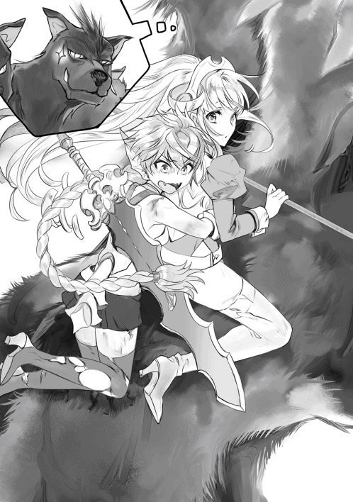
『おい、これとか言うなって』
ラーファたちが喚く中、すぐ真横を黒の魔力が通り抜けた。
「逃がすと思うか？」
アスモデウスだ。黒い双翼を羽ばたかせたアスモデウスが、恐ろしい速度で迫ってくる。ケルベロスが更に速度を上げていくが、このままでは追いつかれる。
「ア、アタシがもう一度、変身を──」
「いえ、それには及びません」
リーシャの手を解き、ラーファは立ち上がった。
杖をアスモデウスへと向け、防御用の魔法を展開した。
「以前ですね、ラティさんが言っていたんです。天使の使命に重圧を抱いていた私を、守ってくれるって。私が命を落としても諦めず、蘇生させてくれたんですよ？ 信じられませんよね」
ラーファは嬉しかった。いつも自分を助けてくれた小さな存在が、最後まで諦めないことの大切さを教えてくれた。それから、ラーファは変わった。周囲の天使から何を言われても動じなくなり、大切な人たちを守るために貪欲に力を求めるようになった。弱音を吐く時間があるのなら新しい魔法を覚え、黙々と知識を蓄え続けた。ラティが傍で支えてくれる。
「私もラティさんを守りたいんです。もちろんリーシャさんも、ノイさんもです。私を助けてくれた皆さんを、私も助けたいんです。今みたいに絶望的だったとしても、ラティさんに笑われない女性として生きたい。胸を張れるような姉になりたいんです。だから──」
ラーファは、杖の先端に魔力を集めた。
「アスモデウス、私たちは諦めません！ 必ず王都ミキネスを救い、悪魔を滅ぼして見せます!!」
「できると思っているのか？」
「成功率でいうなら〇％でしょう。ですが、全て計算で出せるわけじゃないんです......これが、その証明です！」
そして、詠唱する。
『輝く白刃よ、我ここに命ずる。全てを滅する魂の牙を紡ぎたまえ』
杖に生まれるのは白銀の輝き。周囲の魔力が杖に吸い寄せられるかのように凝縮していく。
数多に展開された魔法陣は、杖の動作に合わせて白き獣を放った。
『《聖獅宮》!!』
白き獅子は波紋のように魔力を放ち、アスモデウスの翼を食いちぎった。
ミキネス王国東の大平原に、異形の軍団が次々に姿を見せていた。悪魔が率いる地獄の軍団である。先日から悪魔の出没が相次いでいる件もあり、王都騎士団の面々は一部の傭兵たちを従えて、前線の砦へと集まっていた。見回りの兵が異形の軍団を目撃したとの情報が入ると、団長から慌しく防戦の命令が下される。
「......ついに現れたか。全員、持ち場につけ!! 一匹たりとも進行を許すなっ!!」
王都ミキネスに滞在していなかった騎士団は、ダンタリオンの洗脳から逃れていた。
戦力は王都騎士団アイン隊に傭兵を足して五百ほど。
異形の軍団は二万を上回る。
勝てるはずがなかった。団長は異形の軍団の出現直後、王都へ求援を求めた。軍さえ集めれば対等に戦えるはずだ、と砦で防戦を決め込み、異形の軍団と真正面から戦うことを決めた。
だが......、いつまで経っても王都からの救援は訪れなかった。
団長はようやく王都の異変に気づいた。王エウリュステウスは騎士団の多くを砦へと送っていたのだが、それらは全て悪魔の襲撃に備えてのものだと思っていた。これ以上、異形の軍団の進軍を許せば、王都ミキネスは半刻も経たないうちに占領される。兵糧も残り少なく、強力な魔法使いも存在せず、大砲などの物資も足りない。ここ一週間、物資がまったく届かないのだ。
圧倒的な物量差で戦うなど、愚か者のすることであった。しかしここで撤退すれば、愛する家族や罪のない領民までもが命を落とすのは確定である。
王都には信頼の置ける部下を使いに出したが戻ってこない。現在、騎士団は砦に立てこもり、異形の軍団が動き出さないことを祈っている。
異形の軍団が動き出さないのは、彼らを指揮する悪魔からの号令がないためだ。それぞれ槍を持ち、弓を構え、杖を取り出し、戦に躍起になっている。異形の軍団は食料を必要としないため、待機する時間が無駄にはならず、とても有利なのだ。
どちらにせよ、一週間分の蓄えしか残されていない騎士団には決断の時が迫っていた。物資と応援を呼びに王都へ戻る時間すらも残されていない。国民を守るためには戦う必要がある。だが犬死は確定事項。
‡
緊張がピークに達しようとする頃、王都ミキネスでは、王エウリュステウスが預言者ダンタリオンと重臣たちを呼び集め、会議の席を設けていた。というのも、地下に設置した大掛かりな洗脳術式の心臓となる魔石を、ラーファが破壊したからである。
それによって洗脳されていた傭兵、兵士たちが次々に倒れ、宮殿内は大混乱に陥っていた。重臣が無事なのは、野心のある者たちには洗脳をかけていなかったからである。
「一体どうしたというのだ！ 東の平原には悪魔たちが現れ、王都はこの始末だ！ 王よ、一体何をなされたのだ！ ヘラクレスもまだ戻っていないというのに、悪魔とどうやって戦うのだ！」
「落ち着け、全ては予定通りだ」
「どういうことですかな？」
円形のテーブル、上座に腰掛ける預言者ダンタリオンが立ち上がった。
そして、全てを暴露した。この王都を捧げ、悪魔の王国を作るための生贄に捧げると。
身勝手な主張を聞き、重臣たちは震えた。
「なんという野蛮な考えだ！ 閣下、いやエウリュステウス。貴方にも神の血が流れているのなら、なぜ悪魔に従ったのだ！ 貴方はそこの預言者に騙されておりますぞ！」
「......ダンタリオンは孤独な我を救ってくれたのだ」
そう言って、エウリュステウスは重臣たちを睨んだ。
「実はもう一つ、話しておかねばならないことがある」
神妙な面持ちでダンタリオンを見て、頷いた。
「我にお前たちの命を捧げることで、悪魔として生まれ変わる」
恍惚の笑みを吊り上げた。部屋中に偽装された魔法陣が展開し、重臣たちを押し潰していく。
「あがあああっ......閣、下......なに、を......!!」
「お前たちはよく尽くしてくれた。後は我に全てを任せておけ」
飛び散った赤い液体と、部屋を染めるその色が、誰の血なのかを気にする必要もなかった。
エウリュステウスは限界まで押し潰された重臣の体から、次々に魔石を抜き取った。それを預言者ダンタリオンへと手渡すと、瘴気を当てられて黒く変色した。エウリュステウスは、躊躇無く魔石を飲み込んで見せた。
「閣下、お望みください。貴方が崇拝するソロモン王へと仕える姿を」
エウリュステウスの肉体に変化が起きる。人としての身を捨てることを望んだ結果、皮膚を裂いて新たな体が作り出された。会議の間で魔力が渦巻く。窓を割り、円形テーブルを吹き飛ばし、扉を破壊していく。
──力こそ全てなり。神々の血などくだらぬ。我は、我を見下した神々へ復讐するのだ!!
人としての心を捨て。神としての血を捨て、雄叫びと共に現れたのは、悪しき心に身を委ねた元半神の姿だった。
「クク、こんなに簡単にいくとはなぁ！ 愚かで哀れなエウリュステウスよ、私を信じるべきではなかったなぁ!!」
「──グゥ、ア」
天井にも届く巨人の背。体中に生えた原人のような体毛と、鋭く血のように濁った目。理性を失った彼は、すでにエウリュステウスではなくなっていた。
「お前は破壊を望んだ。今日から【暴力を司る者】エウリュステウスとして、私の魔将になれ。では行くぞ。【ミキネスの燔祭】を開始する」
預言者ダンタリオンはローブを脱ぎ捨て、東平原で待機させている地獄の軍団の下まで転移を行った。ここまでは順調だった。計画通りにいけば、王都ミキネスを数日のうちに落とし、ソロモン王への生贄と捧げることができる。しかし、歯車は少しずつ狂いだしていたのである。
冥府に辿り着いた僕たちは、死者の国ニブルヘイムを訪れていた。
天界、地上、そして冥界。全三層で構成されるこの世界。地上の真下にあるこの地下世界には、太陽が一切降り注がない。代わりに魔力が気温を調整し、不思議な青い輝きで世界を満たしてくれている。
「あわわ、お体が半透明な方が浮遊してます......、ご主人様ぁ、手を離さないでくださいね......」
目をぎゅうっと瞑ったまま、腕にしがみ付いてくる。震えていた。そういえば、ノイは血とかは平気なのに幽霊とかが駄目なんだっけ。悪魔や交霊術に関する魔道書から生まれた存在なのに、不思議なものである。
「ほら、大丈夫だよ。ここにいるから」
「ノイお姉様......」
二歳のアテナが哀れむ中、僕たちはハデスの神殿へと足を運んだ。
死神の従者によって謁見の間へと案内を受ける。
「......ゼウスの子たちか」
重苦しい声が響く。玉座に腰かけていたのは、髪に赤くメッシュの混じった老人──ハデスだった。
全ての魂を司る冥界の王。彼に関して知っていることは、多くの映画でも悪役だったということくらいしかない。なぜなら、彼に関わるエピソードが殆ど存在しないからだ。
「ハデスさん......、いや、ハデス様とお呼びするべきでしょうか」
「......他人行儀になる必要はない」
身も削られるような瘴気が漂う中で、それは無理って話だ。
「ヘラクレス、それにラティと仲間たちよ。お前は私に伝えるべきことがあるのだろう？」
僕の存在も知っていたらしい。
今まで一度も訪れなかった僕たちが姿を見せたのだから、訝しんでいるようだった。
ハデスさんは渋い顔の顎を撫で、首を横に振った。
「お前たちの様子は冥府から監視していた。ヘラクレスが十の試練を受けてから今に至るまで。ラティが大天使ラーファの魂を冥界から取り上げ、無理やり地上に残したことまで。そう、全てだ」
ハデスさんの眼光が鋭くなる。僕を見ていた。
フェニックスと戦った後、僕はラーファさんを蘇生させてしまった。様々な幸運に恵まれたとはいえ、死者を蘇らせたのだ。僕はハデスさんの領地から、人を攫ってしまったのだ。
「すみませんでした......」
「許すと思うか？ と、普段なら言うのだがな......、私にも神託が届いた」
「えっ？」
「運命の女神ラケシスの神託だ。『ラーファの魂を地上へ引き戻したことは不問にせよ。全ては星の意思です』とな」
星の意思......ラケシス様が手を回してくれたのか？
「以降、その件については私から関与するつもりはない。安心せよ」
内心、納得しているという様子ではないが、ハデスさんも神託には逆らえないようだ。もし神託が降りていなかったら、僕の魂を奪われていたんだろうか。
「へっ、監視とは趣味が悪いな」
ヘラクレスが言った。
「お前は神々に復讐する恐れが強かった。そうなった時、早めに手を打つのも私の仕事だからな」
「そうかい、まぁいいさ」
「......今となってはヘラクレスではなく、エウリュステウスを監視しておくべきだったがな」
ここで王エウリュステウスの名前が挙がるとは思わず、ヘラクレスに動揺が走った。
エウリュステウスについては僕たちも名前しか聞いたことがないが、まともな性格をしているとは思えない。
「王エウリュステウスは預言者ダンタリオンに唆され、【暴力を司る者】へと堕ちた。現在、ミキネス王国の郊外で戦争の準備を始めている」
やはり、ヘーラーさんの予想通り、エウリュステウスも問題を起こしたか。
「あれから監視を続けているが、どうやら王都ミキネスに生きる全ての命を【ソロモン王】を復活させるための生贄としているようだな」
「な......」
王都ミキネスの全ての命って......何だよそれ......仮にも王ならエウリュステウスが守るべき存在なのに、何を考えているんだよ......。
「待ってください！」
ノイが叫んだ。
「王都ミキネスにはラーファさんがいるんです！ ご、ご無事ですか!?」
「まだ無事だ。が、どうなるか分からんな」
「ど、どういうことでしょうか？」
「話すより見た方が理解できる。──誰か、鏡を持ってきて欲しい」
ハデスさんがそう言うと、玉座の後ろから溶け込むようにして女性が現れた。
「こちらの鏡をご覧ください......」
彼女が持つ手鏡を覗き込んだ。
そこにはラーファさんと、傷つき倒れたリーシャが、三つ首の犬に跨がって王都を出た場面が映っている。背後からは片翼の悪魔が憤怒を叫び、追っていた。
「ラーファさんが苦戦しています！」
今まで顔色を窺っていたノイが叫んだ。
僕の背後に隠れていたアテナも、不安そうに見上げてくる。
「現在、悪魔たちの中でも上位の存在【七つの大罪】に数えられる悪魔から追われている。奴らの力はゼウスに匹敵するか、それ以上の者ばかりだ。このままでは二人とも殺されるだろう。そして、逃げる先には元エウリュステウスと預言者ダンタリオンが指揮する、地獄の軍団が待っている」
このままではラーファさんが危ない。
「ご主人様!!」
すぐに助けに行かなければ、と振り返った時だった。ハデスさんに呼び止められた。
「ラティ、お前は強い。強いがお前一人が行っても、今回ばかりはどうにもならない」
分かってる。分かってたさ。分かっていてもそう簡単に割り切れるほど、僕は大人じゃないんだ。
「ハデスさんの言う通り、僕が行っても何も状況は変わらないかもしれない。でもさ」
振り返った。思い出すのは、ラーファさんが一人泣いていた月夜のこと。
「──ラーファさんを守るって約束した。約束を破るのは僕の信念が許さないんだ」
それに、リーシャも仲間だ。僕たちを助けるために同行してくれた仲間を、放っておけるはずがなかった。
「......その目、ミッシャにそっくりだな」
ハデスさんはそう言うと、立ち上がった。
「まもなく戦争が始まる。しかし神々の殆どは地上へ降りるわけにはいかない......、力を失った今、悪魔たちに、他の邪神たちに命を狙われてしまうからだ。だが......、私の冥界の軍団なら動かすことができる」
ハデスさんが率いる冥界の軍団は、神々の戦いに参加したことが一度としてない。
天使たちとは違い、まだ彼の軍団は戦える。
「ただし、地上に送るためには相応の対価が必要となる......、魔力と肉体を再構成しなければいけないからな......」
「そ、それでしたらあります、ハデス様っ！」
と、アテナが《黄金の林檎》を差し出した。
「女王ヘーラー様に託されたのです！ これをハデス様に渡せば力を貸してくださるって！」
ハデスさんの目が変わった。
「......なるほど、《黄金の林檎》は不死を司る神々の果実。これを代償に捧げれば、軍団の一部なら地上へ送ることができるだろう」
ヘーラーさんはこうなることを悟り、アテナを同行させてくれたのかもしれない。
ありがとうございます......。
「死霊騎士か。だがすぐに送ることはできないんだろう」
「ああ。時間がかかる。それまで持ちこたえることができればいいが......」
「ならオレたちがいくしかねえな」
ヘラクレスが僕の頭に手を置いた。
「......オレにとって王都は思い入れのない国だけどよ、住民は悪い奴らじゃなかった。助けてやらないといけないよな」
それに、と続く。
「ラティには借りがあるしな。悪魔に屈したら、男が廃る」
「ヘラクレス......」
英雄ヘラクレスは数々の戦争を終結に導いてきた。彼の力が借りられるのなら、これ以上に頼もしいことはないだろう。
「ご主人様、もちろんノイはご一緒します！ 悪魔を倒して、王都を救って、また皆で帰りましょうっ！ このくらいの困難、乗り越えてみせますよ！」
ノイが手を取ってくれた。僕が悪魔と戦う道を選んだことで、ノイにまで迷惑をかけてきた。
それでも、一緒にいてくれる。いつだって僕を支えてくれた。
「......ノイ、ありがと。この戦いが終わったら、たまには二人でどこか行こうか」
「本当ですか!? わぁ、楽しみです！ 絶対に、負けられませんね！」
ノイは、ウサギのようにぴょんぴょんと跳ねる。感情表現の豊かな子だなぁ、と息をひゅっと吐くと、その横からアテナが近づいてきた。
「お兄様......、わたくしもご一緒したら駄目ですか？」
「えっ......」
申し訳なさそうに、上目遣いで僕を見上げてくる。アテナはまだ二歳であり、神々の中では生まれて間もない存在である。いや、確かに見た目だけならかなりの成長で、小学生低学年に見えなくもない。そういえば神話のアテナって二十歳の姿で生まれてきたんだっけ......、その力はかなりの物で、最終戦争まで生き残った神様の一人だった。でも......。
「駄目だよ。ここからは本当に危険なんだ。アテナは僕たちが帰るのをここで待っ──」
「嫌です！ 絶対に嫌です！」
言い終わる前に、否定されてしまった。
目を震わせて、息を荒げながらシャツを掴んでくる。
「お兄様だってまだ十二歳じゃないですか！ わたくしとたった十歳しか変わらないはずです！」
「いや、その十歳は人間からしたらかなり違うんだけど......」
「神様からしたら一日と大差ありません！」
確かにそうかもしれない、と納得しかけて首を振った。
「わたくしだって神です。お母様やお父様とは違い、力を失っていない数少ない神様です......。魔法はまだまだ見習い中ですが、剣でならお母様に何度も勝ったことがあります......！」
神々の血筋は優秀すぎるよ、まったく......。
「お兄様たちがいつも傷ついて帰ってくるのを見て、とても辛いんです......。わたくしだってお兄様を守りたい......人族を、世界を救いたいという気持ちを抱いているんです......」
アテナは僕の目を覗き込んだまま、目を離さない。
あの時、フェニックスを討伐にいく時。お爺ちゃんたちはどんな気持ちで僕を見送ってくれたんだろう。顔には出さなかったけど、今の僕みたいに胸が張り裂けそうだったのかな。本当は戦場には出したくないって、願っていたのかな。
きっと、思っていたんだろう。それでも、人類を導くという神々の役割は何よりも優先される使命なのだ。認めよう。アテナは強い。
「......分かったよ。ただし、僕たちから絶対に離れないこと。それでもいいかい？」
「お兄様......、はいっ!!」
ぱぁっと向日葵のように笑顔を咲かせる。二歳の女の子を戦場に連れて行くなんて、僕も神様に毒されてきたのだろうか。
「......話は決まったようだな」
「はい。僕たちは王都ミキネスへ向かい、戦争を止めてきます」
そう言うと、ハデスさんは「ククッ」と小さく笑った。
「ついでに頼みだ。ラーファたちが跨っている三つ首犬は私の大事な下僕だ。アイツも助けてやってくれないか？ 果たしてくれるなら、私にできることで望む願いを叶えてやろう」
「......分かりました。任せてください！」
僕たちに止められるだろうか、なんて後ろ向きなことは考えない。
戦うんだ。悔いのないように生きて。思うがままに生きて。自分に嘘をつくのは止めるんだ。僕にできないことがあるのなら、仲間たちと協力すればいい。仲間にできないことは、僕が助けてやればいい。絶対に止めるんだ。
「ラティ、お前は神々の『希望』だ。この先にどれだけの血が降り注ごうと、必ず悪魔と戦い続ける運命が待ち受けているだろう。その蛮勇にも似た確かな勇気を私は賞賛する」
そして、僕の前まで歩いてきた。
「お前はお前の望むままに、世界を救ってやれ」
ハデスさんは冥界の住民を欲していると思っていた。でも、違うんだ。彼にもお爺ちゃんと同じ血が流れているのだから、世界を守りたいと思う気持ちは一緒だった。ハデスさんもまた、人族を導く神様なのだ。噂とは違い、優しく善なる性格をしていた。
「その《アダマスの銀剣》では、【七つの大罪】に立ち向かえないだろう。私の魔力を込めた《冥府の剣》を持っていけ。必ず役に立つはずだ」
受け取ったのは、白銀の輝きを放つ長剣だった。手に触れただけで分かる。恐ろしいほどの魔力が込められていることに。
「お前は、かつてのミッシャに似ているのだ」
ミッシャ。世界樹を守り続けた偉大なる神を超えた人。その人に僕が似ているというのは、いまいち分からないけど......、ハデスさんが言うのならそうなのだろう。
「......ありがたく使わせて頂きます。僕の善をもって、悪魔たちの善を滅ぼすために」
「そうだ、それでいい。善の反対は悪じゃない。また別の善なのだ。それが分かっているお前なら、新たな奇跡を呼び起こせるかもしれん......」
奇跡、か。王都ミキネスには、それだけの難関が待ち受けているのだろう。それでも、僕を信じてくれる仲間たちがいる。悪魔たちの好きにはやらせない。
「それでは、行って参ります」
神託によって始まった今回の旅。その終わりは恐らく近い。きっとこの戦争を止めるために、僕は運命の女神様に導かれたのだろう。
「みんな、準備はいいかっ!!」
「はいです！ 覚悟はできてます！」
「今ここで戦争を止めなかったら、僕たちは世界を救う資格なんてないんだっ！ 僕は本気で仲間を助けたい！ 皆に命を預けた!!」
「これくらいのことで諦めたとあっちゃ、神々も舐められるときたもんだな」
「そうだ！ たとえ立ち上がれなくなったとしても、僕たちが死ぬことは許されないっ!!」
「もちろんです、お兄様」
同じ想いを抱いてくれているようだった。大丈夫だ。何も心配はない。後は、戦うだけだ。
「守るよ、王都ミキネスを!!」
『はいっ!!』
ペガサスに乗り込んだ僕たちは、ニブルヘイム大陸を飛び立った。
目指すは王都ミキネス。王エウリュステウスと預言者ダンタリオンとの決着。そして、【七つの大罪】との死闘。絶対に生き延びてみせる。そのためなら僕は、何だってしてみせる。
‡
王都ミキネスより東の平原......、広大な草原がどこまでも続いている。
朝日が昇り、視界が開けていく。眼下には緩い地響きを伴って砦に進軍する、軍団の姿があった。
一晩駆けて、地下からここまで戻ってきた。妙な興奮が胸の奥から込み上がる。これから始まる戦いを前にして闘志が膨らんでいる感じがした。
クジャクに運んでもらい、僕たちは砦へと降り立った。中からは複数の騎士と団長とおぼしき男性が姿を見せ、駆けつけてくる。
「おい、君たちは何者だ！ ここは戦闘地域となる、危険だ。すぐに王都へ戻れ！」
「それはできません。僕たちは共に戦うためにここまで訪れたんです」
「......どういうことだ？」
時間が惜しいので、手短に用件だけを伝える。王都が悪魔に占拠されていたこと、王が悪魔に堕ちたこと、そしてエウリュステウスが王都を壊滅させようとしていること。最初は信じられない様子だったが、思い当たる節があったようで納得してくれた。情報を交換し合う。
「他の兵がどうなったのかオレには分かりかねる。だが、王都からの応援は期待しない方がいい。当分はこの僅かな戦力で、二万の絶望に立ち向かうしかないだろうな」
冷静に呟いた。
「ヘラクレス......、お前が一緒に戦ってくれることが唯一の希望だな......」
「オレだけじゃねえ。こいつらだって戦ってくれる」
「そう、だな......」
団長はアテナを見て心配そうにしていたが、何も言わなかった。戦力が相手の一割にも満たない状況で、半ば諦めているのかもしれない。
「大丈夫だ。オレたちが死なせねえ」
「ヘラクレス様。そうはおっしゃっても、悪魔とも戦わなければいけないですよね」
「誰もが一騎当千すりゃどうにかなるだろ。二万程度の軍団、なんとかなるさ」
「あの！ 普通は一体を倒すだけでも難しいと思います」
「......お嬢ちゃん、こういう時は嘘でも励ますものだぜ。まあなんだ、ハデスの軍団が来るまで待とうじゃないか」
見張り塔から草原を見た。進軍してくる異形の軍団が見えた。大軍が横列で進軍しているため、恐ろしいほどの威圧感を放っている。槍を持った異形の兵士たち。強力な魔法を使う魔女の部隊。大砲を扱う巨人たちに、魔物たちなんかの群れも見える。立派な鎧に身を包んだのは魔将だろうか。
そんな奴らが、目の前に迫っていた。怖いけど、すでに恐怖は通り過ぎている。
「戦わなくちゃ」
「そうですね！ そのためにもゴーレムを呼べるだけ呼ばせて頂きますね！」
「うん、頼んだよ」
ノイなら、数十のゴーレムを呼ぶのは造作もないはずだ。
「ふふ、もう撤退もできないな」
団長が目を細めて言った。
「ああ。戦うしかねえ。とにかく足止めをして、戦うしかねーよ」
「妻と娘に、別れくらい告げるべきだったか」
「最悪のことばかり考えるな。愛する者がいるのなら、そいつらを守るために戦ってやれ。二万の大軍だ、どう策を巡らせても無駄な抵抗になるだろうよ。無駄な考えは捨てろ。自分を見失うな。そうすりゃ奇跡を掴み取れるかもしれねえ」
団長は頷き、槍を握った。騎士と傭兵たちに号令をかける。
「ねえ、ヘラクレス」
「どうした」
「昔の話、していいかな」
「ああ、聞いてやるよ」
「僕さ、弱くて学校で苛められていたんだ。物事をハッキリと言わないし、殴られても何も言い返せずに、辛い時間が過ぎ去るのを待っていた。もし僕に力があれば、こいつらを殴り返してやるのにって思ってたよ。でも、力がなくて良かったって思っていたんだ。力があったら、僕があいつらみたいになっていた可能性があるから。弱い者を苛めて、優越感に浸っていたかもしれない」
「人なら誰しもそういうことがある」
「うん。それである事故をきっかけに、僕は力を手に入れたんだ。もう引けないんだ。あの頃みたいに僕は弱いから仕方ないや、って諦めることも許されない。だって僕は強いんだ。お爺ちゃんと多くの神々に力を授かって、戦場に立っているんだから」
ヘラクレスは相槌を打つと、肩に手を置いてきた。
「そう思えるのは、お前さんの内面が強いってことだ。普通は分かっていても、戦うことなんてできやしねえよ」
「ありがと。でもさ......、僕の強さは外面だけなんだ。性格は気弱だし、頼りがいのない男なんだよ。本当なら戦いたくもないし、好きな魔法だけを研究してみたいなって思ってる。しょうがないよね。ラーファさんの使命とか、悪魔の脅威とか、突然だったから。覚悟なんてその場の勢いでしているだけなんだよ。今だってヴァナヘイムに戻って、お爺ちゃんたちとまったりと暮らしたいなぁって思ってるんだから」
「損な性格だな。だが、それが勇気ってやつだ」
「勇気か......。ねえ、ヘラクレス」
「今度は何だ？」
「僕、皆を救えると思う？」
「お前ならできる。もっと自分を信じろ。何しろラティは、半神半人のオレに勝ったんだ。団長たちにとってオレが希望なら、オレたちにとってはラティが希望だ」
即答されるとは思わなくて、僕は何も言えなかった。ここまで信用されているなんて思っていなかったから、心底驚いた。
「ま、どうせいつか死ぬなら、大事なもんを守ってから死のうぜ」
「そうだね」
「あぁ、その意気だ」
異形の軍団の前衛が迫っていた。
団長の号令がかかる。
自然と砦から飛び降りた僕たちは、傭兵や騎士たちと共に二万めがけて走り出した。
傭兵たちはついてこれてないが、背後には三人の足音が聞こえる。
「アテナを中心に円陣を組めっ!!」
悪魔たちの姿はまだ見えない。
少しでも有利にするためには、敵の数を減らす必要がある。
『強き意志を持ちし汝の力──』
《アダマスの銀剣》と《冥府の剣》を引き抜き、金色の王剣を放った。
‡
異形の軍団に放った金色の王剣は、一度に百の敵を沈黙させた。前衛に僅かに空いた隙間には、すぐに他の異形が攻め込み、魔女隊による魔法が飛び交う。僕だけなら《ギガントマキナのローブ》で魔法を弾くこともできるが、今回は仲間たちがいる。どうやって魔法を弾こうかと一瞬考えていると、ノイが飛び出した。
『氷結牢!!』
ノイの両手から紡がれた魔法陣が、蒼氷の分厚い壁を作り出す。後続の騎士たちをも守るほどの横幅がある氷壁は、迫る《炎の玉》や《風の刃》を遮断し、砕けると同時にゴーレムたちが先陣を切った。そのまま乱戦へと突入する。ノイは攻撃系の魔法が得意ではない。しかし幅広い知識と支援魔法の数々は、決して侮れるものじゃない。そして奥からは、魔将たちの姿が近づいていた。
「ご主人様！ 魔将はノイが引き受けます！」
「うん、任せたよ！」
ノイはゴーレムたちを操り、魔将への道を繋ぐ。一早く気づいた異形たちが道を塞ごうとするが、短剣を振るうノイの魔法を前に、次々と燃え上がってしまった。短剣からはキィンとした耳鳴りのような音が反響する。炎の魔力を這わせ、切り口から燃やしていったのである。
続けて、ノイは飛び掛った。魔将は、独特の四つ腕に握った槍で振り払おうとしたが、すでにノイの姿はなく、胴体を浅く切られる。傷口が炎上を始める。魔将はノイの動きに追随して、すぐさま《灼熱の槍》を放ったが......、当たらない。魔将は呆気に取られた。その瞬間、背後からノイが灼熱の一閃を放ち、首を断つ。魔将は崩れた。
「これでもノイは【ソロモンの小さな鍵】です。悪魔が神と対等に戦えるというのなら、ノイも神と対等に戦える筈なんですよ」
彼女は頑張っていた。この二年間で悪魔と戦えるほど、努力してきた。
「ノイ」
「はいです？」
「ありがと」
ノイは嬉しそうにしながら、次の詠唱を始めた。
‡
開戦からしばらくたち、ヘラクレスはアテナと連携して異形共を葬っていた。飛び込んだヘラクレスを援護するように、アテナの《不可視の力》が敵を打ち抜く。
でも......、異形たちの数が多すぎる。ヘラクレスも次第に攻撃を受け始めていた。
「ヘラクレス様！ すぐに治療します！」
「ああ......、すまねえ」
ヘラクレスはアテナを庇いながら戦っており、砦から拝借した大剣を振りかざしていた。そのまま叩きつけるだけで小爆発が起きる。凄まじい力だ。
「皆さん！ 治療は、任せてくださいませ！」
頼もしいアテナの叫び声だが、僕たちは徐々に分断され、二手に分かれてしまう。ノイの呼び出してくれたゴーレムの数も随分と減り、騎士や傭兵たちの姿も徐々に消えていた。
「くそっ......」
「ご主人様......」
無傷で戦えるほど甘くはないと分かっていたのに、悔しくて堪らない。
僕たちの残存戦力は半分ほど。敵は把握できないほどの物量で押し寄せてくる。圧倒的に不利な状況へ追い込まれていた。前衛は混戦を極め、激しくなる一方だった。大砲などを使い応戦するものの、敵軍の方が兵器に関しては優秀らしく、砦の見張り塔が破壊されてしまう。
「......ラティさんよ......、傭兵たちは、頼んだぜ......」
「隊長さんっ！」
そして、これまで僕たちと一緒に戦っていた傭兵たちを率いていた隊長も戦死した。王都を守るために懸命に戦った命が散ってしまった......泣いているわけにもいかず、僕は傭兵たちに指示を出して後退を始めた。同じく後退していたアテナによって次の号令が叫ばれるが、これが敗戦であることは誰の目にも明らかだった。傭兵たちを逃がすために前線に残った僕とノイは、軽く十を超える魔将たちに囲まれてしまう。
「絶対絶命、ですね......」
「でも、諦めるわけにはいかないよ」
「......はい、もちろんです！」
ここで諦めたら、みんなの死が無駄になってしまう。救援が到達するまで時間を稼ぐしかないんだ。僅かな可能性を信じるためにも、戦い続けるしかないんだ。
「王都を守らないといけないからね」
「そうですね、仕方ないです」
ノイは頷いてくれた。顔を見合わせ、意を決したように紡ぐ。覚悟を決め、同時に飛び出した瞬間──背後から、神々しい光を放つ獅子が飛び出してきた。
「......この、魔法は......、ま、まさか......」
どう見ても、《聖獅宮》だった。次々に魔将を喰らいつくし、僕たちに道を切り開く。僕が知っている人物で、この魔法を使えるのは一人だけだ。
「......ラティ、さん......？」
背後から、掠れた細い声が聞こえてきた。
棒立ちのまま振り返ると、そこには見開かれた赤の瞳。ラーファさんが、涙に濡れた双眸で僕を見つめ、胸に溜まった息を吐き出していた。胸がぐんと熱くなる。
「みなさん、無事だったんですね！」
ラーファさんは三つ首の黒犬──ケルベロス──に跨っており、涙目のリーシャが腰に抱きついたまま手を離そうとしてなかった。
ラーファさんはケルベロスから降りると、全力で僕の方へと走ってくる。
「......ラティさん......！」
僕の肩を両手で抱きしめ、胸に顔を押し付けられた。突然のことに対応が追いつかない僕は顔を真っ赤にして熱を感じていた。
そして、僕にしか聞こえないくらいの小さな声が、微かに呟かれた。
「......ご無事で、良かったです......！」
「......！」
心臓が燃えてしまいそうなほど、胸が熱くなった。
ラーファさんは僕にしがみついたまま声を殺し、啜り声を上げていた。ぐしゅ、と嗚咽がいくつも漏れる。何度も鼻を啜る音が聞こえる。
「指輪から、何度もラティさんの助けを呼ぶ声が聞こえてきたんです。間に合って、よかったです。」
──不安だった。怖かった。辛かった。
そんな感情の濁流が表情から伺うことができ、僕たちがいない間に大変なことがあったことを悟った。それでも僕たちを心配してくれて、ましてやこんな所に駆けつけてくれて──。
本気で泣いてしまうくらい、僕たちを心配してくれたのだ。
「心配かけたよね、ごめんね、ラーファさん......」
「いえ、大丈夫です。こうして会えたのですから......もう、大丈夫ですよ」
「お二人とも、話は後よ、奴が追ってくるわ！ ......ケルベロス、竜化を行うわよ！ 三分後に回収してよ！」
『ああ、任せておけ』
「ノイもご一緒します！」
リーシャが飛び降りると、すぐさま白い光に包まれて巨大な竜へと姿を変貌させる。ケルベロスが隣に続き、前線へと駆け抜けていく。
......奴？ 疑問が脳裏を過ぎった瞬間、焔の槍が目の前を横切った。
「感動の再会だな、だが、ここで死んでもらう」
「やはり現れましたね、アスモデウス!!」
ヒュン！ という音が耳を通り抜けた直後、悪魔に水の刃が襲いかかる。今、ラーファさんはアスモデウスって言わなかったか？ アスモデウスは聖書で、大天使ラファエルの天敵として描かれている悪魔だ。その力は神の如き境地に達する。
「甘いわっ!!」
アスモデウスを中心に魔力波が発生した。魔力の流れが反転し、僕たちが放った魔法が返ってくる。その場で身を屈めるように回避し、柄を握り締める。わかってはいたが、悪魔は強い。けれど、戦うことができる。
「《水蛇》よ!!」
いきなり前方でものすごい音が響いた。とんでもない重量の蛇が虚空から産み落とされたのだ。見ると、水蛇たちはアスモデウスへと襲いかかり、束縛をしようとした。
「ラファエルの娘よ......、貴様は、ここで惨たらしく殺すっ!!」
僅かに身体を揺らしたアスモデウスは水蛇を一刀両断にしてみせた。しかし、ラーファさんの次の詠唱が始まっている。
「今度は、私がラティさんを助ける番です──一緒に戦いましょう！」
「はい、もちろんです！」
微笑んだラーファさんも、叫ぶ。
「アスモデウス、覚悟しなさい!!」
杖に白銀の魔力が灯された。
‡
踏み出した一歩目で、戦闘が始まった。目に見えない不可視の魔力が襲ってくるが、駆け抜ける。爆発する魔力の衝撃波の軌道を読んで、全速力で走り続けた。主観的に間延びした時間の中、ラーファさんは次々に光の魔法を放つ。足を進めるたびに現れる異形たちを葬った。
僕は右手に《アダマスの銀剣》、左手に《冥府の剣》を構え、白銀の刀身を交差させながら飛び交う魔法を打ち払い、敵陣へと距離を詰めた。神々が作った神器には特別な鉱石が使われており、魔法を受け止めることができる。この双剣があれば、いくらダンタリオンが凄くとも──！
「なに浮かれてやがる。てめえはここで死ぬっていうのにな」
激突。唐突に姿を見せた山羊頭の悪魔は剣を握っており、いくつもの火花がゆっくりと咲いていく。腕と肩に重い手ごたえ。刀身がたわみ、繊細に振動する。くそ、負けられるものか。諦めるわけにはいかないのだ。みんなを救えなかったら、僕は死んでも死にきれない──！
「でぃ──りゃあああああああッ!!」
雄たけびを上げ、僕の全身全霊をかけ、力尽くで剣を押し返した。交差していた刀身が擦れ違い、それぞれの刃を振り切る。予め身体強化を行い、常軌を逸した力を得たおかげだろう。振り下ろしの一撃を猛然と弾き返された悪魔は半身が泳ぎ、大きくよろめいた。
「ほう、やるじゃねえか！」
「アスモデウス、なぜ天使を裏切ったのですか！」
再び《聖獅宮》が紡がれ、獅子の牙がアスモデウスに襲いかかる。だが、アスモデウスは虚空から魔力を集め、焔の槍を形成。正面から受け止めた。
「ハッ、人族がどれほど愚かな存在なのか知ったのに、どうして助けないといけねえんだ。お前たち天使は騙されてんだ。神なんかこの世に必要ねえよ!!」
《聖獅宮》を打ち消す。そのまま勢いを乗せてラーファさんに襲いかかろうとする。が、僕はそれぞれの刃を振り払い、両者の間に滑り込んだ。激しい剣戟が始まる。
「神々も人族もなぁ！ 平和という衰退の中で満足せずにいられない害虫だ!!」
「──ッ！」
歯を食いしばる。もはや退路はない。僕の汗が焔の槍の前に蒸発する。直撃は免れているが、灼熱に焼かれた皮膚が軽い火傷として腫れていく。真っ向勝負だった。
「自分たちが常に世界の中心だと思い込み！ 自分たち以外の存在はゴミだと思ってやがる！ それこそが、神と人が作り上げたこの世界の姿だ!!」
アスモデウスの言葉は間違っているわけではない。僕たち人族は懲りずに戦争を起こす。その結果に待っているのが混沌と絶望だとしても、様々な事情を立てて戦う歴史を繰り返してきた。だから、アスモデウスの言葉を完全に否定するつもりは僕にはなかった。
「人族の中には神へ感謝しない輩だって存在しやがるんだ！」
「そ、それはっ......！」
ラーファさんが動揺している。
僕は二年前、フェニックスを倒した後、身勝手な理由で騎士団に半殺しにされた覚えがある。感謝などせず、ただ自分たちの欲望の赴くままに僕たちを処刑しようとしていた。
......確かに、疑問を抱いたことはある。
「てめえが人族にどんな感情を抱こうが勝手だが、しょせんは人族にとって都合の良い存在にしか過ぎねえんだよっ!! なぁ、小僧!?」
神の使いだから人を守るのか。その疑問を感じたからこそ、天使の中には堕天する者もいる。
「人族なんか、永遠に救済する必要のない愚かな種族だ！ てめえら天使だって薄々は気づいているんだろうが！」
焔の槍が燃え上がる──その瞬間、ラーファさんの水蛇が焔の槍を絡めとった。
「黙りなさい!! 貴方に、人族の何が分かるって言うんですか!!」
隣に立ち、睨み返す。
「人族は何も悪くない！ 神が生み出し、ただ生きてきただけ......。だからこそ私たちが責任を持って、導く役割を担っているんです!! それに......」
僕を見た。
「私は誰よりも優しい人を知っています！ 他人のために命を賭け、天使である私をも守ろうとした勇敢な少年を知っています！ 私はその人を助けるために、この戦場で戦っているんです!!」
「ラーファさん......」
「行きますよ、ラティさん！ 共鳴を行います！」
「はい、分かりました！」
共鳴、詠唱者の魔力の波長をまったく同じに合わせることで、更に強力な魔法を作り出す、上位詠唱方法の一つ。金色の王剣で時間を稼ぎ、ラーファさんの手を握ると上空へと飛翔する。ある程度の高さで静止すると、ラーファさんの翼から水が滴り落ちた。水は竜となってアスモデウスに襲いかかる。
「人は好きで争っているわけじゃありません！ ゼウスは言ってました！ 誰もが平和を望むのに、王様は国民を守るために仕方なく戦う必要があるんだって！ それが古来から続いてきた伝統で、未来の歴史を作るための重要な分岐点になるんだって！」
戦争は無いほうが望ましい。でも、どうしても話し合いで解決できないときは、自衛のためにも戦わないといけないときがくる......。
「おのれぇっ！」
アスモデウスは水竜を跳ね避けようとするが、僕が唱えた雷縛に身体を束縛され、身動きが取れなかった。
「人族が愚かなわけじゃありませんよ！ 守護天使としての使命を忘れた貴方たちの、人族を見る目が変わったんです！ みなさんに責任を押し付けないでください!!」
「ふん、毒されたか......哀れな天使が」
「哀れなのは貴方の方です！ 人族は貴方のように殺戮を好んでいるのですか！ 貴方のように不幸を楽しんでいるのですか！ 貴方のように戦争を楽しんでいると言うのですか！ 同じ命を奪う行為だとしても、戦いを好むのと、仕方なく争うのでは天と地ほどの差があるんですよっ!!」
「......やれやれ、この娘もラファエル同様、仲間に引き込めそうにないな」
「当然です。私は人類の守護天使ラーファ！ 悪魔から人々を守る神の使徒ですから！ これ以上はみなさんを馬鹿にすることは許しません!!」
話はそこで終わった。アスモデウスは焔の槍に魔力を注ぎ、新たな魔法陣を生み出す。それを見切っていたのか、ラーファさんも詠唱を開始した。
僕は宙から風のように接敵。アスモデウスへと飛び込んで、詠唱の邪魔をするべく間合いに入り、《アダマスの銀剣》と《冥府の剣》を振り下ろした。が、止められない。皮膚が硬すぎるのだ。頭に攻撃をいれることでようやく僕の存在に気づいたアスモデウスが、こちらを視界に捉えて、剣を振り下ろした。
「ッ！」
僕は咄嗟に風を呼び起こし、回避行動を取った。真上から襲いかかってきた刃をギリギリで躱す。
斬撃が恐ろしい風切り音を纏わせて、さっきまでいた空間を通り過ぎていく。その迫力に肝を冷やした僕の横から、ラーファさんが新たに生み出した水竜が飛び、アスモデウスの自由を封じた。
こいつを倒すには強力な一撃を使うしかない。となれば......、
「ラーファさん、共鳴詠唱。を開始します！」
「っ！ 分かりました！」
共鳴詠唱は、それぞれの魔法使いが詠唱を行い、上位の魔法へと変換する詠唱技法の一つ。魔力の波長を合わせたりしなければいけないので、使いどころが難しいとされている。でも、僕はラーファさんとなら紡げる自信があった。
「いきますっ」
手を繋ぐと、力が篭った。
『強き意思を持ちし汝の力を持って、新たな骸を捧げん──』
『輝く白刃よ、我ここに存在する。全てを滅する魂の牙を紡ぎたまえ──』
金色の王剣と、《聖獅宮》の魔方陣が重なり、爆発的に肥大化していく。僕たちの共鳴魔法は一つとなり、青白い稲妻を纏う一匹の獅子を産み出した。
「アスモデウス！ 貴方の犯した罪を、多くの命を奪った罪を！ ここで粛清させて頂きます!!」
「できるならやってみろ、ラファエルの娘!!」
アスモデウスの反撃。灼熱の槍が、虚空から無数に放たれる。僕たちは同時に叫んだ。
『金色の獅子!!』
焔の牙と正面から衝突し、赤と青の閃光が同時に放たれた。
「はぁあああああああっ!!」
揺れる魔力。轟く大気。鋼鉄を殴ったかのように、腕が痺れる。駄目だ、押される......。視界が明瞭になったかと思った瞬間、鎖が焔の牙を絡め取った。
「今です、ご主人様、ラーファさん!!」
横からノイが参戦してくれていた。いつも大事な時に力を貸してくれて、とても嬉しいよ......！
「終わりだ、アスモデウス!!」
金色の獅子が焔の牙を打ち砕き、突進する。
「ば、馬鹿な......！」
金色の獅子が、アスモデウスへと向かい、胴体を食らい尽くす。
「あが、ぎゃっ......お、ぇっ......」
眩い閃光が炸裂し、奴の口から絶命がこぼれる。今度こそ僕たちの魔法はアスモデウスを破り、打ち砕いた。
「悪魔がどれだけ襲ってきても、僕たちは悪魔を殲滅してみせる」
「私は、貴方と違って堕ちはしません」
アスモデウスの影がよろめいた。黒霧を生み出している。
「......やって、みるがいい......お前たちの、信じる奈落をな............だが、その前に土産だ......！」
アスモデウスの身体から、光が迸る。風船のように膨らみ、紅蓮に染まっていく。まさか......！
「ラーファさん、伏せて!!」
叫んだ瞬間、視界を爆発が埋め尽くした。
‡
気がついたら、土の上に転がっていた。多分アスモデウスの最後の自爆に吹き飛ばされたのだと思う。頭が朦朧としていて、自分がどうなっているのか分からなかった。ただ、誰かが僕の体を揺さぶって、泣き叫んでいる姿が見える。
「──ラティさん──してくだ────す──治癒──だから──」
とても必死で、途切れにしか聞き取れない声。ラーファさんだ、って気づいた。
僕は何とか力を振り絞り、うっすらと瞼を開けた。すぐに綺麗な金髪が僕の頬をくすぐった。どうやらラーファさんが僕に抱きついて、身体を震わせながら泣いているようだ。そこでようやく、僕は意識を取り戻した。
「ラティさん！」
彼女の声に混じって、戦争の音が聞こえる。僕たちの戦いはまだ終わっていない。
「......大丈夫だよ。行こう」
「で、でも」
痛みはある。でも、手足は動く。ラーファさんが治癒魔法をかけてくれたお陰だろう。
「早く戦争を終わらせて、ゆっくり休みたいからね。行こうっ！」
「は、はいっ！」
僕たちは再び、戦場へ舞い戻った。
‡
悪魔アスモデウスの敗北。その知らせは瞬く間に戦場を駆け巡った。
前線で暴れていたリーシャは、ケルベロスに運ばれて僕たちの近くまで引き返していた。見れば、敵の群れがごっそりと消えていた。戦争に竜が一匹加担するだけで、戦力の均衡が大きく偏るというが......、凄まじい。
でも、リーシャが短時間しか変身できないことは相手も察していたらしい。今まで右翼と左翼に回していた戦力を中央に集中させ、一気に制圧を図ろうとしてくる。数が随分と減った魔将を通じ、部隊を寄せ集めていた。そして、砦も堕ちる寸前だという報告が届く。僕たちの敗北が迫っていた。
ラーファさんも、リーシャも、ヘラクレスも戦ってくれているんだ。僕たちは絶対に砦を守らなければいけない。もう少し、もう少しでいいから凌がないと......。
「おい、まだ冥界からの助けは来ないのかっ!!」
「うぅ、もう殆ど戦力は残っていませんよぅ......」
「リーシャ様も、ラーファお姉様も、だいぶ力を使い果たしてしまっているようです」
「でも、撤退はできないよ。ここに踏みとどまらなければ、大勢の人が死ぬ。そうなったら戦いには勝利しても、悪魔たちの思う壺なんだ。なんとかして止めないと」
「しかしな、もう傭兵も騎士も残っていない。このままだと全員やられてしまうぞ」
「ラティさんも傷だらけじゃないですか......！ 一旦、撤退をしたほうがいいですよ！」
「わたくしもそう思います！」
異形が迫ってくる姿が見える。
......これ以上は無理なのか。僕の力では、戯言にしかならないというのか。
顔をしかめる僕の横で、ノイが跳ねた。
「ノイはご主人様のお気持ちが分かりますっ！ えへへ、ノイが時間を稼ぎますから、今の内に傷を癒してください！」
「ノ、ノイ!?」
言うが早いか、ノイは新たなゴーレムを数体ほど作り、短剣を抜いて異形たちに飛び込んだ。一斉に迫ってくる軍団を、鎖と魔法でねじ伏せながら進んでいく。
ノイは主に魔法を得意とする。しかし、ラーファさんのように万能というわけでもなく、攻撃魔法も殆ど覚えていない。どうみても無謀な戦いだった。
「戻ってくるんだ！ 無茶をしないでくれ！」
僕も両手の剣を強く握り、すぐにノイを追いかけた。気持ちは嬉しいけど、そんなに無謀なことはしてほしくなかった。全身から力を搾り、異形に飛び込んだノイの隣に並び立つ。
「ノイ──！」
「伏せてください！ ご主人様ぁ!!」
白き氷の槍が、目の前に迫っていた。目を見開いた。何かにぶつかる鈍い音。鮮血が、空に飛び散る。死んだ、と思ったが、不思議なことに痛みはなかった。なら、この血は一体......？
その謎はすぐに解けた。
「......ご無事、でしたか......？ ご、主人様......」
ノイが、身を挺して魔法を受けたのだ。背中に突き刺さった氷柱が痛々しく、動けなくなったノイは僕の腕の中に崩れ落ちてきた。まさか、僕を庇って......？
「ノイ......ノイ!! しっかりしてよ！」
「......よかった、です......ご無事で......ぐずっ......えへへ......」
「ノイ！ 僕の傍にいるって約束しただろう!!」
「いいんです......ノイは、魔法書ですから......ご主人様を、お守りできて......満足、なんです......」
「待て、待ってくれ、ノイ！ 冗談だよね？ ねえ、返事をしてくれよっ！」
「......ご主人様は、悪魔を倒してください......皆が、認めなくても......ノイだけは、ご主人様を信じて、おり..................」
「──ノイ？」
僕がいくら声をかけても、ノイは動かなかった。涙を目に溜めて、目を閉じてしまった。その小さな体を抱き抱えながら、僕は呟いた。
「なんでだよ、どうして......」
皆でヴァナヘイムに帰れなくなってしまった。
「ここまで戦ってきたのに、ずっと僕を信じてくれたのに......、ノイを助けられなかった......」
いつも笑顔が絶えないノイを、僕が死なせてしまった。
「悪魔たちを殲滅する力を持っていながら......、神様の力を持っていながら......、僕には目の前の命も救えないっていうのか......!!」
悔し涙を流しながら、ぐったりとしたノイを守るべく、異形たちに双剣を振り続けた。僕には奇跡を起こせなかったのか。僕はノイと一緒の未来を歩くことができないのか。
王都を守るためにノイを犠牲にした──そりゃ、犠牲のない戦いなんて存在しない。それが戦争の定めだ。でも、諦めきれなかった。まだ、ノイのためにもやらなくちゃいけないことがある。
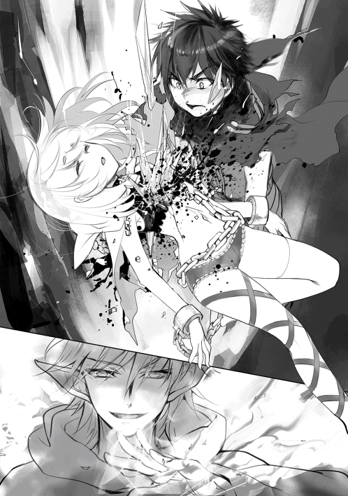
白き氷の槍を放った悪魔を僕は見た。そいつは離れた場所から僕を見て、笑っている。
「ダンタリオン......、お前だけは楽に殺さない......っ！ 僕が地獄を見せてやる！」
──ノイのために、この戦争は必ず勝利してみる。
その時だった。
「さあ、アタシの可愛い神獣たち......、これから戦うのは楽園を無茶苦茶にした堕天使ベリアルの仲間よ！ 一匹残らず始末しなさい!!」
『ウオオオオオオオオオオオオオオオオオオオオオオオッ!!』
大平原北部から突如、神獣が出現した。《聖獣キマイラ》や《双頭犬オルトロス》、《毒竜ヒュドラ》の群れが援軍として駆けつける。神獣を指揮するのは良く知っている人物だった。
「ラティ、助けに来たわよ!!」
ヒュドラの頭上に立つヘーラーさんは突撃を指示し、地形を変えるほどの、怒涛の進軍で異形の軍団を踏み潰す。傍にいたのはヘーラーさんだけじゃない。ヘベさんもだ。
「お母様、あまり無理されないでください......。お母様の命が奪われても、台無しなのですから」
「ええ、分かってるわ。それでもあの子たちのためにできることをしてあげたかったのよ......。巻き込んで悪かったわね」
神獣たちは花火のように放射状に散って、異形たちを襲撃する。燃えさかる炎と毒の霧が吐かれた。魔物たちに毛の生えたような異形の軍では、止めることができない。
そして、ノイに気づいたヘベさんが血相を変えて降りてきた。
「ノイ様！ しっかりしてください！」
ラーファさんも駆けつける。
「ノイさん、何で寝ているんですか......！ 私が許しません！ 早く目を覚ましなさい！」
ラーファさんが叫んだ。でも、ノイは何も答えない。
「......私、ラティさんにも、ノイさんにも命を助けてもらったご恩があるんです......！ ノイさんを助けたいです。ノイさんのことは、私に任せてくれませんか？ 私は、私の大切な人たちを守るために魔法を覚えました。たとえノイさんの魂が尽きようと──必ず連れ戻して見せます」
ラーファさんの瞳には、強い信念と想いが宿っていた。僕はラーファさんの凄さを知っている。有限実行、不可能なことは絶対に約束しない破天荒な性格。きっと、ラーファさんならノイを助けられると、信じることができた。
「お願いします......ノイを、助けてください......!!」
「ラーファお姉様、アテナもお手伝いします！」
「ヘベにもお手伝いさせてください！」
ノイを《オルトロス》の背中に乗せ、砦まで走っていく。みんなの背中を見届けていると、ヘラクレスとリーシャが僕を支えてくれた。
「しっかりしろ。オレ達にはやるべきことが残っている」
「そんな顔しないの。絶対に助かるわよ。あの子は強い子だからね」
励まされて、僕はようやく呼吸を整えることができた。
「そう、だね」
ヘーラーさんと神獣の救援により、戦場は勢いを変えていた。神獣たちの力は、異形の軍団では比べ物にならないほどの圧倒的な差がある。それを実感したのか、異形たちは混乱を始めた。
そして、援軍は神獣だけじゃなかった。
『我ら、アイアコス率いる冥府軍はこれより、ラティどのにお味方致す！』
悪魔たちの背後から、次々に現れるのは冥府の騎士団だった。その旗にはハデスさんの紋章が刻まれており、僕たちの仲間だと一目で理解できた。ようやくだ。ようやく援軍が駆けつけてくれた。
『全軍、地獄の軍団を滅せよ!!』
アイアコスの号令によって、たちまち戦局は混乱を極めた。
ハデスさんとヘーラーさんの救援により、壊滅しかかっていた戦力は均等にまで回復した。そして、質では僕たちが勝っているようだった。
「......戦わなくちゃ。もう、泣いていられないよね」
もう一度、戦場へ走った。
ダンタリオンは、怒りで顔を歪めた。
「なぜこうなった......。王都ミキネスを乗っ取り、王エウリュステウスを悪魔に堕としたというのに、なぜベリアルもアスモデウス様も、散ってしまわれたのだ......何故だ......」
今更、撤退をすることは許されない。そんなことをすれば、他の悪魔たちに今回の件の始末をつけさせられる。ダンタリオンが今後も生き抜くには、戦い続けるしかなかった。
「おのれ、おのれ、おのれえええええ!!」
ダンタリオンは、全てを台無しにした神々が、ラティが許せなかった。逃げ帰る異形たちを掴み、頭に拳を打ち付け、粉砕する。
「私の邪魔をよくもしてくれたなぁ！ ラティいいいいいいいいいいい!!」
ローブを脱ぎ捨て、人ならざる表情を浮かべて呻く。そして黒き翼を広げてラティを捜し始めた。
「くは、くくはははっはは!! 私が、この眼で、この力で滅亡させねばならぬようだなぁ！ ......アスモデウスも、ベリアルも役に立たんカスだ！」
口が裂けるかのような笑みを浮かべ、ダンタリオンは魔石を取り出した。何年もかけ、王都の騎士達を生贄に捧げ、作り出した純度の高い魔石だ。
「くく、ははは！ そうだ、私が一人で殲滅すればいい！ この世に価値があるのは己の力のみ！ くく、くははははは!! 私だけが神々を超える力を手にすればいいのだ！ 今こそ神を、悪魔を、ソロモン王を越えて見せる!!」
ダンタリオンは、手にした魔石を飲み込んだ。ぞわり、と体から闇が溢れ出す。
「愚図共に生きている価値はない！ 高貴なる私こそが世界を治めるに相応しいのだ!!」
ダンタリオンの身体が変化していく。
正気であれば決して行うことのなかった禁術を、あろうことか使ってしまった。
憎悪が。憤怒が。苦痛が。哀愁が。闇が、ダンタリオンの体を包んだ。
「くぎゃっ!? がぎゃくっくがぁああああっ!? ぎ、ぎぃりゃ、くはは、ハハハ、クハハハはハはあははハは!!」
血に塗られた戦場は、最高級の絨毯のように輝いていた。今のダンタリオンよりも上に存在する物はいない。悪魔ダンタリオンの持つ書物には、過去、現在、未来に渡るすべての 歴史が刻まれている。その力を利用して編み出したのが、魔石を用いた【覚醒】だった。肉体から鮮血が滴り落ちる。その血は猛毒となって、大地を溶かしていく。
ダンタリオンが求めるのは、自らへの生贄のみ。
「......今こそ、世界を一つに治める」
悪魔の狂気が、史上最悪の化け物を生み出した。
密集陣形で進軍する冥府軍と神獣たちの救援により、士気を喪失しつつあった僕たちは、体勢を立て直すことができた。
「この砦を最終防衛拠点として、【レギオンの陣形】を取れ！」
戦場では、団長の号令が流される。
【レギオンの陣形】は対散会戦術の切り札である。包囲殲滅を得意としており、参列に並んだ兵を入れ替えながら戦うことで持久力に優れている。もちろん突撃力は弱まるけど、魔法や大砲などの援護が真価を発揮するので、戦車などの圧倒的殺戮兵器が存在しないこの世界では、陣形の及ぼす効果は馬鹿にできるものじゃない。そして、これを提案したのは団長ではなかった。
「団長様......、ありがとうございます......！」
そう、アテナである。彼女は知恵だけではなく、戦略を司る女神という力を持ち合わせている。生まれてすぐの頃から多くの文献を読み漁り、アスラさんたちから実際の戦場の様子を聞いていたりしたので、その才能は流石と言ってもいい。そもそも人間なら、二歳でそんな冗談じみたことはできないはずだけど、神様っていうのは常に人の上を歩いているようだ。
そして、僕たちの下に情報が飛び込んできた。
「ダンタリオンが、敵も味方もなく暴れ狂っている！ 冥府軍や神獣ですら通じない様子だっ！」
傷ついた騎士の一人が叫んだ。異形たちを指揮する悪魔ダンタリオンが、前線へ飛び出したのだ。傭兵や騎士、神獣では悪魔を相手にするのは辛いはずだ。
「......アイツだけは許せない」
「その通りだ。が、その前にこいつを始末する必要がありそうだ」
ヘラクレスが言うと、僕たちの目の前に巨人の如き体躯で見下ろしてくる悪魔の姿があった。
「ふん、姿形は変わってもオレには分かる。お前さん、エウリュステウスだな？」
「えっ？」
「......よく分かったナ、ヘラクレス」
空気を重苦しくする声が響いた。
「当然だ。何年、お前と顔を合わせていると思ってんだ」
そう言って、ヘラクレスは一歩、踏み出した。
「悪いな......こいつはオレが片付ける！ お前も決着を付けに行って来い！」
「ヘラクレス......ありがとう」
「気にすんなって」
ヘラクレスと、エウリュステウス。二人は生まれる前から始まった骨肉の争いに巻き込まれてきた。その長き因縁に決着が付けられようとしている。幸運に恵まれたエウリュステウスは腐り、悪運に苛まれたヘラクレスは真っ直ぐに育った。本来なら逆の立場になってもおかしくなかった二人の半神半人は、生まれ持った心によって、まったく別の道を歩んでしまった。
「エウリュステウス......、お前さんはオレを嫌っていた。当然だ。オレのせいで他の神々からも疎まれていたようだからな。......今まで済まなかった」
「......下らぬコトヲ」
「ああ、下らない謝罪だ。守るべき国民を手にかけようとするお前さんには勿体無い言葉だよ。ようやく分かったんだ。お前さんが悪魔に堕ちたのはオレのせいじゃない。お前さんの問題だった」
ヘラクレスが蹴り抜いた。
「これ以上、王としての醜態を晒すな！ いい加減に目を覚ませっ！」
「......我は望んデ悪魔になッタ。そのよウナ言葉は不要」
「そうかい！ なら、オレが終わらせてやるよっ！」
「なあエウリュステウス、今どんな気分だよ」
ヘラクレスは、エウリュステウスの猛攻を耐え凌ぐ。元国王の手に持つ槍には、王都ミキネスの紋章が刻まれている。かつてエウリュステウスが守ってきたの国の紋章だ。
「......なぜ、貴様に届かナい！ 貪欲に力ヲ求め！ 無欲な体に別れヲ告げた！ それなのニ、なぜ、なぜ！ 勝てナい！」
異形の軍が勝てるはずの戦だった。手製も少なく、むしろ寄り合わせの部隊ばかりの奴らに負けるはずがなかった。今頃は王都を占領し、国民を生贄に捧げる算段だった。しかし、突如としてラティたちが砦を守備し、戦争の流れが変わってしまった。また、エウリュステウスには、エウリュステウスだった時の記憶が不完全に残っている。ヘラクレスへの憎しみ。神々への妬み。そして、悪魔に堕ちたことによる快楽。悪魔に利用されているだけだとしても、ヘラクレスには負けたくない。それゆえ、普段は怯えるだけのエウリュステウスは、手に入れた力に溺れていた。
「それが本音か、エウリュステウス。どけよ、お前じゃオレに勝てない」
思わず、声を荒げてしまう。しかしエウリュステウスは引く筈もなく、ヘラクレスの前に立ちはだかって先へ通そうとはしない。
「我は、認めてほしかっタ！」
「......そうか」
「我も半神ナのだ！ 人よりも優レ、英雄ペルセウスの血ヲ受け継いでいる！ なのに何故、誰もが我を哀れに見つめルのだ！」
エウリュステウスではなく、エウリュステウスとしての本音が、静かなる殺気を滲ませながら、血塗れの剣を振るっていた。莫大な魔力を解き放つ。
「我は我ナリに戦ってきタ！ 笑われよウと、王として見返してやろうとシた!! だが、誰もが我に才能がないと侮辱するのダ!!」
「......それなら、どうして国民を生贄に捧げようとしている？」
「我を受け入れなカった王都などニ未練はナい！」
「──この馬鹿野郎が！ 砦の奴らを見ろよ！ 全員とはいわねーが、あいつらの武器に刻まれた紋章はな、お前さんを守るために心臓を捧げた証なんだ！ お前を信じようとした騎士だっていたんだよ！ 都合の良い現実ばかりを見ているんじゃねえ!! 甘ったれんな!!」
エウリュステウスが振るった剣は、ヘラクレスの右腕一本で止められていた。槍を捨て、ただ腕をかざしただけ。それなのに、肉すらも切ることができない。ヘラクレスは凄みと殺気を奮い立たせ、周囲の者たちを近づけない威圧感を感じさせている。
「お前は、最後まで救えない奴だった」
あれこれと助けるための手は尽くした。卑劣な手段を使われようと、どこかでエウリュステウスを信じたかった。しかし、国民を裏切ったと知ったときから、エウリュステウスとは分かち合えないのだと悟った。ヘラクレスは気負いなく無数の魔法陣を生み出した。
「すまねえな。オレのせいで巻き込んじまって」
哀れむように金色の矢を構成していく。
「お前に謝る義理はねーが」
魔法陣は魔力の渦を引き寄せて、凄まじい衝撃が放たれた。
その衝撃は人知を超える。
「お前さんの人としての執着は、嫌いじゃなかった」
雲が掻き消え、空は割れる。訪れた轟音は戦場の全ての生物に畏怖を与えた。
まるで、世界の終焉だというように。まるで、世界を救済するかのように。
戦場に紡がれる金色の軌跡は、真っ直ぐにエウリュステウスへと突き進んでいた。立ち塞がる全ての存在を寄せ付けず、どんなに魔法を放とうと勢いを殺すことはできない。直撃する。その直前──エウリュステウスは結界を展開した。
「お前が重いもんを背負っているのはよく分かった。俺にとっては小さなことでも、お前にとってはとてつもなく重いもんなんだろう。全てを捨てられるくらいに、な」
金色の矢を見事に防いで見せたエウリュステウスだったが、それよりも早くヘラクレスが最大速度で迫っていた。たちまち肉薄する姿を見て、エウリュステウスは大地を蹴り、ヘラクレスに勝る速度で立ち向かう。エウリュステウスが血塗れの剣を振るうたびに、ヘラクレスが拳を振るう度に、大地が割れる音が何度も響き渡る。
「くくは！ ははハハハ!! 流石だ！ 流石だぞヘラクレスゥウウ!!」
エウリュステウスが剣を振るう度に、ヘラクレスの体から血が噴出す。
「──エウリュステウス......、お前は俺が戦ってきた中で二番目に強い」
ヘラクレスはエウリュステウスが、自分をも超える才能を持っていたことを感じ取っていた。
同じ天空神ゼウスの血を引く者として、悪魔に落ちても失わない狂喜を前にして、エウリュステウスには王として国民を守るだけの力があったことに気づいた。
「......だから、オレの全てを持ってお前と戦う」
ヘラクレスの体内に眠る狂気が一瞬で膨れ上がる。背後から十の魔法陣が構築され、金色の矢を発動した。
「オレは、お前さんみたいには堕ちないと決めた」
全てを貫く一撃がエウリュステウスへと襲いかかる。
エウリュステウスは狂ったように叫ぶが、左腕が綺麗な狐円を描いて飛んでいた。
「なぜ、狂気に堕ちない......。その力、我とは次元が違いすぎる......。我の全てを持ってしても、我の全ては敗北するというのか......！」
血を吐きながら、掠れた声を絞り出す。
「力を持てば、心が支配される......。ヘラクレス......、なぜお前は、心が堕ちない......。どれだけ女王に苦しめられ......、愛する家族を殺させられたというのに......なぜ、支配されない......ッ!!」
圧倒的な力を持つ者は、その力を存分に振るいたいという衝動に支配される。
エウリュステウスも例外ではなかった。だからこそ、ヘラクレスを認められなかった。
どんなに力を持っていても、ヘラクレスを超える力を持っていたとしても、背負う壁には絶対的な差がある。エウリュステウスは理解した。ヘラクレスこそが最強だと。自身を苦しめた狂気すらも利用するその姿勢は、悪魔をも超える鋼鉄の精神力を持つのだと。ヘラクレスは笑った。
「オレもお前と一緒だ。唯一違うのは......、オレを信じ、助け出してくれた男がいた。そいつのお陰でここに立っている」
全魔力が込められた金色の矢は、神々しい軌跡を描き、エウリュステウスへと突き進む。
「これで終わりだ。力なんか気にすることはねえ。もし次の人生があるのなら、今度は前を向いて歩こうぜ」
「我に、説教だと......ふざ、けるなあああああああ!!」
エウリュステウスは咆哮と共にヘラクレスへ血塗れの剣を振り放った。迫る。そしてヘラクレスの心臓を貫いた。
「くくは、ははははは！ 勝った、これで勝った！ ヘラクレス、お前の負けだあああああ!!」
「そう思うか？」
「なっ......」
心臓を貫かれた筈のヘラクレスは、エウリュステウスを見上げていた。
「......オレが不老不死ってこと、知らなかったようだな」
エウリュステウスは体内の魔力が急激に衰えていくのを感じた。ヘラクレスの金色の矢が、静かにエウリュステウスの心臓を貫いた。
「地獄で会おうぜ、エウリュステウス......、助けてやれなくて済まなかった」
「ヘラ、クレス......？」
エウリュステウスの肉体が崩れ落ち、大気に溶けていく。
その最後の瞬間が訪れる直前に、エウリュステウスとしての記憶を完全に取り戻した。
「我は......、どこで、間違えてしまったのだろうなぁ......」
「そりゃあ、国民のことを忘れたときからだろ」
「......そうか。我も、国民を大事にしていたときがあったな」
エウリュステウスは微笑むと、何も言わずに黙って消えていった。最後に何を思ったのかは誰にも分からない。しかし、ヘラクレスだけは理解していた。
「お前さんの国民はオレが守り抜いてやる。だから、安心して逝け」
かつて、エウリュステウスが守り抜こうとした命があったことを。
ヘラクレスを背に、途中でケルベロスと合流した僕とリーシャは、ダンタリオンの下へと急いでいた。途中、魔将が立ち塞がり、リーシャが相手を引き受けてくれた。お陰で先に進めた僕は、神獣たちが次々に倒れていく光景を見つけることができた。その中心にはダンタリオンの姿がある。どうも悦に浸っているようだ。
「──力が満ちる。万物の理を因果から改変できそうな力......、最高だ、最高に身体が軽い!!」
様子がおかしい......、尋常じゃない魔力が感じられる。
「──力を持つ者の気持ちが分かった。今まで従っていたアスモデウスなど、蟻ほどの存在価値もない。あんな悪魔よりも、我のこの力を試すのだ！ 皆殺しだ、スベテ、すべテ、スベテ......、くはは、我にならできる!!」
ダンタリオンが軽く足を踏み出すと、ガゴンッ、と地面は轟音を鳴らし、爆ぜていく。そして跳躍した。何が、起きているんだ......。
「......この世界が、我の物になる」
......ダンタリオンは恍惚としていた。僕が震えるほどに、恐ろしいほどの笑みで。
「お前の好きにさせるものか!!」
跳躍した先に回りこみ、双剣を引き抜いた。
「む、なぜ、我の先にいる。どこから現れた」
......僕が誰かを理解していないのか？
「邪魔な奴らは、消してしまえばいい」
憤慨したダンタリオンは両手で黒の波動を呼び出し、僕たちへと放つ。
「ケルベロスっ！」
『大丈夫だっ！』
地面に深々と刻まれていく爪痕は、まさしく万物を破壊する力そのものだった。ダンタリオンは更に周囲の異形たちへ触手を伸ばし、巻き込み、凄まじい勢いで取り込んでいく。黒の衝撃波が放たれる中、僕はただ《アダマスの銀剣》を差し向ける。
「【修羅開門】──」
僕の身体が煉獄に包まれていく。
「──雷駆!!」
修羅の門を開放し、爆発的に身体能力を飛躍させる。迫る波動を双剣で受け止めた。力の押し合いが始まり、足が地面へと食い込んでいく。僕がここで弾き飛ばしてしまえば、それは戦場で戦っている味方を巻き込む危険性があった。
剣が、腕が、身体が悲鳴を上げても歯を食いしばり、力の限りダンタリオンを見た。
──こんな所で負けられるか!!
心の奥底から込みあがる怒りが、波動に勝った。焼きついた大地から上がる黒煙は、僕の前で止まっていた。どうにか、波動を受け止められたようだ。
「ダンタリオン......、今の僕は加減ができないんだ......。ケルベロス、離れていてくれ」
天から落雷を振り落とす。周囲の異形たちを消し炭に変えた。
「お前は、僕が倒す」
ダンタリオンは呟いた。
「ああ......楽しくなりそうだ」
暁に染まる戦場に、閃光が迸った。
‡
「かかってこい、人の子よ......。私が永遠の地獄にいざなってやろう」
黄昏の空を埋め尽くす魔法陣が、僕たちの手から生み出された。
ダンタリオンは強い。強すぎる。修羅を解放し、神々の領域に達した僕が押されている。どうやってこれほどの力を得たのかは分からない。多くの命......、いやそれだけでは代償として足りない。世に出回っていない禁術という禁術を掛け合わせたのかもしれない。分かることは、ダンタリオンが自らの力以上の代償を支払い、この場の誰よりも強き存在になったということ。
「喜べ、この私の一部になれることを！ 称えよ、この悪魔の一部になれることを！ 全てが滅び消え去る、今日この日の瞬間に立ち会えることに感謝せよっ!!」
赤黒い腕から放たれた衝撃波に、肉体が加速しながら吹き飛ばされ、地面に衝突することで一気に減速した。魂を搔き消されるような一撃を受け、瞬間、耐え難い吐き気に襲われた。魔法で意識を揺さぶられたらしく、禍々しく重い、押しかかるような殺意が戦場に満ちていく。僕にとっては毒そのものだった。
「うっ......ぐぶ......が、はぁ......」
酸っぱいものが喉を満たし、嘔吐の前兆をもたらした。どうにか抑え込み、風の魔法を放ちながら必死に耐え凌ぐ。
「クカカ......、どうしたラティよ。その程度で終わりとは言うまいな？」
重い足音を響かせて近づくのは、赤黒い肌を晒すダンタリオン。血がこびりついた悪魔的造形の翼。伸びた爪、裂けた口、鋭い牙。畏怖なる存在が、僕へと近づいていた。リーシャは他の魔将をひきつけているため、僕だけがこの決戦の場に立っている。戦争の勝敗はまだ決まらず、助けが来てくれそうな気配はなかった。
「さて......、ラティには散々魔将たちを殺された。流石は同胞フェニックスたちを殺しただけある」
「......全て知っているのか」
「流石は、神々に育てられた少年だ。そのままでは我らが悪魔の脅威となり、『ソロモン王』に匹敵する存在になりかねん。その前に、芽を潰そうではないか」
「......そう簡単にくたばってたまるか」
込み上がる吐き気を落ち着かせ、怒りを注いだ口調で返す。双剣を握り、真っ直ぐにダンタリオンを見つめた。
「お前がヘーラーさんを操り、ヘラクレスに凶暴化の魔法をかけたんだな」
「私に問いかけるのか？ ......まぁ、正解だな。そうでなければ説明がつくまい」
手に持った魔法書を捲り、手応えの無い相槌を打つ。裏腹に真紅に染まった瞳は爛々と輝き、くっくっと愉快そうに聞き入る。
「......ダンタリオン、お前のことは聞いたよ。過去と未来を見渡せるその魔法書を持っていると。その力を使えば理想の未来を導くための方法が分かるわけだ」
「そうだ。そして、この魔法書を読めるのは私のみ。私にしか分からない言語で描いたこの魔法書は、人族のような劣等種には分かりかねまい」
「だが、その魔法書には『僕』の存在が載っていなかった。そうだろう？」
「......ふん、貴様さえいなければ、王都は私たち悪魔のものになっていたはずだ」
ヘーラーさんの心を操ったダンタリオンたちは、計画が順調に進んでいるはずだった。それを見ているこの『星』さえいなければ......結果として運命の女神様の神託を授かった僕は、ダンタリオンの魔法書にも載らない第三者として今回の戦争を引き止める役割を担った。それを認められないダンタリオンは、忌々しく舌打ちする。
「本来の歴史では、悪魔が勝利しソロモン王が呼び出されるはずだった......。力を失い、反旗を翻す北欧の神々を止められない《始祖の神々》は、朽ち果てるはずだった」
「北欧の神々？ どういうことだ」
その言葉の後、ニィっと笑い、次の瞬間──狂ったように笑い出した。顔を歪ませ、馬鹿馬鹿しいほどに煩う、悪魔の哄笑。僕の揺らがない視線から顔を背けず、ただ此方を見据えていた。
「これは失礼した。まさか神に属していながら、北欧の神々の問題を知らないとはな。貴様は愚かで無知なんだな」
ダンタリオンが促す。北欧の神々といえば、やはりオーディンのことだろうか。あまり良い神様では無かったらしいが......。
「......教えてやろう。北欧の神々は私たち悪魔に近い存在だ。贄に溺れ、快楽に浸かり、権勢を振りかざす。美しき世界よりも混沌を望み、欲が出れば平気で戦争を起こし、気に入らなければ人だって殺す。そして、オーディンに忠実なる奴隷を作り上げるのだ」
殺気を滲ませ、研ぎ澄ました気迫で言った。
「完璧なる秩序を求める奴らは決して正義ではない。奢侈と色欲で支配する『創生世界』を作り上げようとする。世界を救わず神として生まれた背徳から、『自分たちが秩序だ』と口にしながら性欲に溺れる」
僕は、何も言えずに聞いていた。北欧神話は一つのお話としてまとまっているわけではなく、短編がいくつも集まって分厚い本になったものだ。基本は英雄譚だが、神々の滅びを描いた神話として有名だと思う。ただ、僕が知っている記憶では他の神話よりも残酷だった。少なからず、遠からず、見事なまでに一致する。
そして、ダンタリオンの言葉が真実となり得る可能性も──否定できない。受け止めるしかなかった。神々は人族を導いてくれる存在だと思っていた。それは──とんだ間違いだったのかもしれない。
「ラティ、貴様はそれでいいのか？ 世界に恨みはないのか？ 私は分かってあげられるぞ」
僕は下手をすれば、この世界に転生した日に死んでいた。今になってみれば、酷い境遇で生まれてきたと思う。
「素直になれ。私は軽蔑しない......。人族とは、そういうものだからな」
事実として、天空神ゼウスに拾われて、育てられて、血生臭い日々を送っている。僕が望んだとはいえ、これが正しいという自信はなかった。下手をしたら僕だって、悪魔に堕ちた可能性が考えられる。
「好きに言ってればいいだろ」
「......神々は戦わず、貴様たちを手足の如く使い、正義の名の下に悪魔討伐を命じているだろう？」
「......」
「哀れな人生だ。だが、私は違うぞ。忠誠を誓うなら、貴様の大切な奴らを受け入れ、新たな世界の住民として生かしてやることができる」
言葉の調子が一転し、優しく語り掛けてくる。頭が、ぼんやりとする。目の前から差し出される手は高圧的ではなく、命じている調子でもなく、ただ甘い安堵感をもたらしてくれた。
「......私は、貴様の敵ではない」
どこまでも甘い、人の心を掻き乱すダンタリオンの言葉。その甘さは魅了の韻律を伴って吐かれる。そして、僕は魅力を感じていた。
「私は知っている。悪魔を倒した貴様は、いつの日か神々の一員として受け入れられることになるだろう。なにせ貴様は人を超えし化け物の力を宿しているからな」
そんな日が、訪れるのだろうか。
「そして、神々の戦争の道具として、絶え間なく身を投じることになる。......おぉ、何と哀れな運命だ。神に拾われたばかりに、運命すらも捻じ曲がってしまったか」
歌劇のように、大げさに演じるダンタリオンは言葉を続けた。何も言い返せなかった。ダンタリオンは、間違ったことを言っていないから。悔しいくらいに正論だったから。
「私なら、貴様に『戦え』と命じたりはしない。永遠の平和を約束しよう。......もう、十分に戦ったではないか。幼い体で悪魔と戦い、その褒美がいつもの日常だけでは割に合わなくないか？」
一歩、一歩と歩み寄ってくる。僕は動けなかった。
「......貴様に、新たな道標を立ててやろう」
剣がぎりぎり届かないくらいの距離に立ち、陶酔するかのように言葉を続けた。
「ダンタリオンの下僕となり、一緒に世界を作ろうではないか」
不思議なくらいに、心が闇に沈んでいく。
威圧するような口調は、賛美歌のように心を満たしてくれた。どこまでも優しく、井戸の中へとロープを垂らすかのように、救いの手を伸ばしてくれている。
「さぁ、戦争を終わらせるぞ、ラティよ。もう戦いは終わりだ」
母のような温もりの言葉が、降りかかった。僕を操っているのではないかと疑えるほどに、魅惑的な言葉だった。あれ、でも、僕は何をしていたんだっけ。思い出そうとしても、何も思い出せなかった。
「貴様は今より、幸福を歩むのだ」
ダンタリオンが握手を求めるように、手を伸ばしてきた。
その柔らかい笑みに惹かれ、呆然と立ち尽くし、その手を掴もうか迷ってしまう。
──刹那、治癒の指輪が輝いた。
『ご主人様......？ ダンタリオンに心を操られているんですね』
僕を包むように引き止める、大切な存在が目に映った。
記憶がぐるぐると遡る。この少女の名前を、僕は知っているはずだ。
『負けないでください。それがダンタリオンの手口です。心を操り、正しいと思わせる......。だからこそ、ヘーラーさんも操られてしまったんです。それがソロモン悪魔の恐ろしいところです』
そうだ、彼女の名前は──。
「ノ......イ......!!」
生きていて、くれたんだ。手が、双剣に力を込める。瞬きすら挟めぬほどの速さで放つ鈍色の刃は、ダンタリオンの腕を浅く切りつけた。
「......洗脳が通用しない、だと？」
首を傾げ、見据えてくる。僕は鷹のように狙いを定め、怒りに燃えた心を抑えることなく、魔力を解き放った。
「楽に死ねたものを......、愚かな奴だ」
ダンタリオンの、甘い声は消え失せていた。代わりに聞こえたのは、誰もが知っている恐れて止まない悪魔の声。
「............ノイを」
「ん？」
「お前は、僕からノイを奪おうとした。......それだけじゃない。多くの騎士を、傭兵を、罪の無い人々の命を殺め、その力を手に入れた」
「たかが少女がどうした？ 代わりなどいくらでもいるだろう？」
「......お前は、僕を分かってくれると言ってたな」
双剣が蒼白い魔力を這わせ、固定されたかのようにダンタリオンの心臓を捉え続ける。
「僕はこの世界をもっと知りたいんだ。......大事な人が生きてくれるなら、死んだって構わないと思っている」
「馬鹿なのか？」
「そうかもね......、さあ、始めようか」
ダンタリオンは虚空に手を伸ばし、闇と炎を混ぜ合わさった鎌を呼び出した。
一瞬早く、双剣が動く。
「『ソロモン悪魔』として生まれたダンタリオンと、《始祖の神々》に育てられた僕の──」
雷撃を宿した刀身が炎闇の鎌と衝突し、激しい地響きが鳴った。
「王都ミキネスを賭けた、最後の戦いを！」
‡
衝撃に弾かれて背後へ飛んだ。悠々と立つダンタリオンは、右手から三つの火炎球を形成して放ってくる。二つの火炎球が左右へ着弾して退路を断ち、残る一つが迫ってきた。《アダマスの銀剣》を後方へ引き、斬り上げる瞬間を待つ。
失敗は許されない。タイミングを見計らい、振り上げる。着弾。先に放たれた左右の爆炎と重なって、燃え盛る魔力の炎は陽炎を発し、ダンタリオンの姿を歪ませる。
この熱波の中にいれば、喉が焼けてしまいそうだった。銀剣を振り放ち、業火の中から駆け出す。
ダンタリオンが放った魔法と同威力の雷破斬を放つ。炸裂した紫紺の稲妻が、ダンタリオンへと突き進み、炸裂音が戦場に響き渡る。残念ながら、命中して爆ぜた音ではなかった。ダンタリオンは、左手の指先で雷撃を消し去った。いや、着弾の瞬間に雷撃を吸収したように見えた。魔力を吸い取る何かを纏っている。魔力障壁か？
「クク、今の攻撃に耐え抜いたのは見事だな」
小馬鹿にするような調子には反応せず、周囲を取り巻いていた炎へ剣を振る。
強風に煽られたかのように、刺すほど冷たい冷気が広がっていき、魔力の炎を消し去った。この剣閃はダンタリオンへも届き、魔力の冷たさに身じろぎしたようだ。
「ほぅ、なるほど......」
理解したのだろう。僕が放ったのはただの圧縮した魔力。障壁は魔力から構成されているはずなので、その魔力を乱してしまえば崩せるはず。僕の予想通り、ダンタリオンを守る魔力の壁は、ガラスのように破砕音を放ちながら砕けていく。
「......金色の王剣!!』
開いた左手を振り上げ、荒々しい魔力を集中させる。展開された魔法陣が轟音を立て、火花を散らした。低音の魔力によって乾燥した空気が擦れ、雷を増幅させていく。踏み抜いた。たちまち肉薄するダンタリオンの姿。そして──爆発。
戦場が......地形が崩れるほどの抑えきれない魔力が、上空に柱を作るかのように炸裂した。収束した雷が、ダンタリオンの肉体を貫いた。体内から焼き尽くす強力な雷撃の威力は、悪魔といえど耐えられるような威力じゃない。雷撃音が響き、僕の耳を痺れさせた。僕が使える上級魔法。最初に覚えた、対悪魔用の魔法。練磨を重ねるうちに雷撃は威力を変え、今では一撃振るうだけで波紋のように余波の魔力が浴びせられる。それに触れた存在はいかなる物でも、立ち上がることができない。僕たちを中心に、帯電した空気が充満する。雷破斬で砕けた地面が、砂埃を上げて視界を塞ぐ。違和感を覚えた。ダンタリオンの肉体を貫いたはずなのに、焦げた匂いが漂ってこない。
衝突寸前に何らかの方法で魔力を防御していたのだとしても、魔力の残響が感じられない。
確かに直撃したはず──しかし、戦場を埋め尽くすダンタリオンの殺気は、微塵にも弱まっていなかった。これはむしろ、強くなっている。
「やってくれたな、ラティ」
真後ろから殺気が迫る。本能に任せて体を捻れば、直前まで頭があった場所を黒い魔力を放つ炎の鎌が通り過ぎた。瘴気の炎は地面へとぶつかり、油などはないのに徐々に燃え広がっていく。すぐに背後へ向き直り、双剣を構えた。
「......無傷なのか。......本当にしつこいよ、ダンタリオン」
「くはは！ これが悪魔を超えし力だよ!!」
ダンタリオンの肉体は、金色の王剣で貫いたはずの傷がなかった。あの程度の魔力では、傷すらも与えられないらしい。そんなのありか......大きく息を吸い込み呼吸を整えた直後──ダンタリオンの背後から迫ってくる影があった。
「ラティ！ まだ無事に生きてるかしら！」
リーシャが、駆けつけてくれた。彼女は体中に無数の傷を負い、体力も消耗しているらしく息が上がっていた。どうやら僕の放った金色の王剣による轟音を聞いて、援護に来てくれたらしい。
「......これで二対一だね、ダンタリオン」
「有利とは限らんぞ？ 仲間が足枷にならぬといいがな」
ダンタリオンの肩越しに、リーシャが頷いた。言っているのだ、同時に仕掛けようと。リーシャが踏み抜くと同時に、僕は上段からダンタリオンの首を狙って、双剣を放った。リーシャは姿勢を低くし、胴体を狙って水平に大剣を放つ。互いの斬撃が接触しないように、ダンタリオンの肉体を裂く──はずだった。しかし、刃は虚しく空を斬る。
「さっきから何だっ......」
「ま、まずいわよ!!」
僕たちが交錯した、その直後。ダンタリオンは上空に飛んでいた。鎌を振り放ち、尋常ではない魔力が僕たちへと迫る。唱えられた闇の魔法が、僕たちを消滅させようとしていた。魔法で弾くにも、もう遅い。避けるには距離が近すぎる。受け止めるしかない。
「《冥府の剣》よ、厳つ霊を纏え!!」
ハデスさんから譲り受けた神剣に雷が集い、闇の魔法に接触した瞬間、魔力が弾けた。爆風が容赦なく襲いかかり、僕はリーシャを庇いながら地面を転がった。
「......ありがと、ラティ。ちょっと格好よかったわ」
「無事みたいだね」
「ええ......すっごく怖かったけど......」
短く言葉を交わし、胸の中で嗚咽を漏らしかけるリーシャを支え、立ち上がる。ダンタリオンの動向を窺うと、立ち上る炎闇の中で蠢く影を見つけた。爆風をものともせずに立っている悪魔の姿を。いや、様子がおかしい。煙が晴れるまで、僕たちは汗をかきっ放しだった。
「うぐっ......がはっ......」
しかし、心配は杞憂に終わった。ダンタリオンは先ほどの爆風の隙間から放たれた、《冥府の剣》による雷撃によりやけどを負っていたらしい。地面へと崩れ、膝をついていた。痛々しい金色の跡が、体内を蝕んでいるように見える。
「......よかった、通用したんだ」
「そうみたいね。流石に私たちに魔法を放ちながら、身を守る余裕はなかったようで」
僕が前に進み、リーシャが後方からの援護に移った。武器を構え、ダンタリオンを見下ろす。
「流石は悪魔を討った人族だ......まさか、この肉体をも貫くとはな......クク、面白くなってきた」
膝をついたまま、愉快そうに呟く。
「あまり使いたくはなかったが......、手加減したままで相手をするのはこの器では不足だな」
「手加減ですって？ 冗談は止めなさい」
「......冗談などではない」
揺らりと立ち上がるダンタリオンは、黒の波動を放ちながら姿を変えていく。肉が裂け、漏れ出た血を足元に広げながら、ぐちゃぐちゃと不愉快な音を立てて骨格が変形していく。黒い煙と瘴気が無差別に戦場の命を貪り、新たな肉体を構成していく。
「う、ぐっ......おえ......！」
この悪臭を嗅いだリーシャが、思わず口を手で覆った。今まで戦場に参加したことのない彼女にとって、目の前の光景は衝撃が強すぎたようだ。凝縮された悪なる魔力が、爆発的に膨れ上がっていく。その禍々しく、圧倒的な存在感は、僕なんかの魔力が赤子に見えるほどだった。不揃いで無数の牙を生やした顎、その口から吐かれた息吹が、天を遮る闇を生み出した。背中から生えた四つの翼に比例するように、その四本の鋭い腕は、爪で大地を踏み砕く。五つの、血のように塗られた眼球と目が合った。魔竜、という言葉が思い浮かんだ。その体長は、軽く見ても二十メートルはあるようだ。
「さあ、続きを始めるとしようか......。神々に運命を歪められた者たちよ!!」
あまりにも絶望的な光景だった。見た目の暴威だけではなく、闇に染まった空を埋め尽くすほどの魔法陣が展開された。今までに感じていた絶望とは、次元が違う。本当の地獄が姿を見せていた。
変身直後、ダンタリオンは大地を脈動させ、闇の空から雨を降らせたのだ。その雨は高熱の魔力となって襲いかかり、戦場にいる全ての存在を溶かしていく。被害を確かめる余裕はなかった。僕たちは魔力を展開し、瓦礫と化した大地の裂け目まで回避する。しかし、それぞれ分断されてしまった。正面にはリーシャが構え、横からは僕が詠唱を始めている。リーシャは竜の鱗を持っているお陰で、この雨の中でもそれなりに行動できる。《ギガントマキナのローブ》に守られている僕は、リーシャを援護しようと思った。でも、遅すぎた。鞭のようにしなるダンタリオンの尾が、リーシャを無造作に弾き飛ばした。まるで人形のように転がり、瓦礫へと強く体を打ちつけた。その威力は瓦礫が粉砕されるほどであり、リーシャは立ち上がらない。
走った。何もできなかった。白目を剥き、血の泡をこぽこぽと吹き、力なく崩れる彼女を見ているしかなかった。す、すぐに治癒魔法をかけないと......。
『無駄だ、止めておけ』
助け出そうとする僕を、駆けつけたケルベロスが引き止めた。
『リーシャは致命傷だ。戦線復帰は不可能に近い。だが、我らにはラーファ殿がいる。息があるのならリーシャは助けられる』
焔の雨を受け付けないケルベロスは、僕を一瞬見た後に頷き、リーシャを咥えて砦へと駆け抜けていった。まだ彼女は死んでいない。それでも、自分の不甲斐なさに怒りが込み上げてしまう。
「......ダンタリオン！」
「さあ、かかってこい！」
僕が振り返るよりも早く、ダンタリオンが走る。迫り来る魔法が、僕の右手から《アダマスの銀剣》を弾き飛ばした。仕方なく右肩を盾代わりに前面へと突き出し、莫大な魔力を秘めた魔法を左手の剣から放とうとする。
悪魔の真紅の瞳が、僕へと向いた。思わず、肩が一瞬だけ跳ね上がった。
──殺される。
そんな一念が、心を支配した。ダンタリオンへと駆け出してしまった現状では、身を隠す手段がない。恐怖を信念で塗り潰すかのように、金色の王剣を再び放つ。
「また、それか......。期待外れだな」
更に距離を詰め、加速していく。ダンタリオンは無詠唱で形成した不可視の魔法を放った。魔力の塊が連続で飛来する。人の身なぞ、悪魔の前では通じないとでも言うかのように。激しい魔法の連鎖的な衝撃で、僕の左肩が軋みを上げて変形していく。
「誓ったんだ！ 悪魔を前に、倒れるわけにはいかない!!」
腕がへし折れ、体がよれた。懸命に、くずれようとした脚に力を注いで踏み出し、駆け抜けていく。何があっても前を見据え、ダンタリオンを睨む。その頭上から、ダンタリオンの両手が振り下ろされるのが見えた。この距離では避けられない。叩き潰されるか、堪えて魔法でトドメを刺されるか。または、細胞すらも残さず肉体を消滅させてくるか。最悪の未来が見えた。瞬間、光が駆けつけた。
「──第七章の守護天使たちよ、ラティの力となってあげなさい！ 第九章は精霊の魔法を謡い、第十章は援護を行いなさい！」
神獣キマイラに跨ったヘーラーさんの魔法書から、魔力が解き放たれた。数多の守護天使を僕たちに憑依させる強化魔法。ヘーラーさんが支援をしてくれたのだ。半透明の守護天使たちが僕の体躯を撫で、いくつもの強化を紡いだ。速度が爆発的に増加する。左手から放たれた【雷縛】がダンタリオンを縛り付け、《冥府の剣》がダンタリオンの鱗へと食い込むが、僅かに血が流れる程度だった。
否、致命傷ではないが、ダメージを与えることができた。
「ぐうっ......！」
ほんの一瞬だけ、一秒にも満たない一瞬だけ、ダンタリオンは動きを止めた。
その一瞬を見逃すほど甘くはない。この隙なら唱えられる。
《冥府の剣》は、恐らく《アダマスの銀剣》以上の神器。そこへ金色の王剣を放つのではなく、アスラさんより教わった仏の極意を乗せていく。
「《迦具土神》！」
全身に圧縮された魔力が張り巡らされ、咆哮が熱く煮えたぎる。手にした柄を引き絞ると、神々しい焔火が放たれていく。気迫と共に放たれた剣は──油断しているダンタリオンの右前腕へと食い込んだ。悲鳴が上げる。
「な、なんだ......。腕が燃え、く、腐り落ちていくだと!? 何をした!!」
迦具土神とは、創造神の間に生まれた火の神様である。本来は神を裁くための魔法として用いられるらしいが、これならダンタリオンにも通じたようだ。僕の攻撃は終わっていない。
「......まだ、リーシャの忘れ形見が残っているんだよ!!」
裂帛の気迫に圧されたダンタリオンは、気づかなかったようだ。リーシャは瀕死に陥る直前に、上空へと大剣を投げていた。それを空中で掴み、濃縮された魔力で刃を覆って、力の限り振り下ろした。渾身の斬撃がダンタリオンの右腕を根元から切断し、呆気なく足元へ落とす。絶叫が響き渡る。主を失った腕は灰と化して蒸発した。大剣が砕け散る。僕は勢いを殺さず、満身創痍のままダンタリオンの前に滑り込む。しかし、不意をついた一撃とは違い、一瞬で薙ぎ払われた。
その間に放たれる魔法の群れ。へーラーさんが間に入り、攻撃を受け止める。風を起こして立ち上がり、隙間を縫い前に出た。
「ヘーラーさん、下がってください！ ......できれば、他の騎士たちも近づけないでください」
「どうするつもりなのよ。あの悪魔は只者じゃないわよ!!」
「分かってます。......これからは更に危険なことになるので、急いで退避してください。最悪の場合は雷霆を使わせて頂きます」
「......仕方ないわね。認めるわ......ただし、死んだら許さないわよ」
ヘーラーさんの慈悲を浴びながら、再び双剣に金色を宿してダンタリオンへと向かう。襲いかかる魔法を避ける足取りは徐々に加速していき、隙が大きく開いた右腕側から攻撃に入る。勝負は、心臓。限界まで魔力を這わせた二つの太刀が、黒色の竜鱗へと突き刺さる。
「でぃりゃああ!!」
ガキン、と魔力が弾かれる音がした。ヘーラーさんの守護天使、強化、天道と修羅の門まで開いても、ダンタリオンの肉体は硬すぎた。
「......落ち着け」
《アダマスの銀剣》を回収し、放たれた酸のブレスを避けながら、呼吸を整えた。次々に襲ってくる魔法を掻い潜り、円を描くように回っていく。今まで交戦した悪魔でも、僕は何度も苦戦を強いられてきた。その悪魔以上の能力を持ったのが、目の前の存在だ。
その悪魔を倒すためには雷霆を使う必要があるのだが、雷霆をそのまま使えば威力が高すぎて、死の大地を生み出してしまう。それを克服するために、僕はアスラさんに頼み込んで新たな魔法を編み出した。
魔力を暴走させ、魔力を一撃に注ぎ、全てを滅する剣の技。幾度も失敗し、幾度も大陸を消滅させかけ、どうにか習得した禁断の剣技。これならば、ダンタリオンに致命傷を与えられる可能性がある。どちらにせよ世界が滅ぶのなら、やってみるしかなかった。深く息を吐き、目を閉じて精神を統一させる。極限まで集中させなければ、この魔法を可視化できないためだ。どこまでも沈んでいく静寂が、僕を満たしてくれる。ダンタリオンの動きが、目を閉じているのに読めた。目を見開き、今しがたの感覚を克明に思い出して立ち上がる。
「そうはさせるものか」
「────っ!!」
正面に構えたダンタリオンが、視線を送ってくる。痛みに慣れたのか知らないが、僕を踏み潰そうとしていた。一気に加速し距離を詰め、瞬時に背後へと回り込む。この戦い方も、幼い頃からお爺ちゃんたちを相手にした鍛錬の賜物だ。 間に合ってくれ。
「神霆の王剣!!」
──魔力の大半を消耗する神霆の王剣は、悪魔の背中に深い傷を刻み込んだ。
ダンタリオンの嘶きが轟いた。この剣技なら戦える......ようやく勝機を見出し、今度は心臓を狙うべく大きく振りかぶった。これなら背中からでも、心臓を貫けるはずだ。浅はかな計算の下、僕は更に魔力を伝達して斬りつけた。
「......クハハ。あまり悪魔を怒らせるな」
「えっ......!?」
ダンタリオンは、首を百八十度に半回転させて僕を見た。無防備になっていた僕の正面で口が開き、絶対零度の波動が襲ってきた。頭を含めた全身を襲う悪魔の魔法は、意識と精神すらも削っていく。倒れていった仲間たちを思い、結界を張りつつ波動をやり過ごす。代償として、僕の魔力はほぼ空にまで削られてしまった。もはや、攻撃できるチャンスは少ない。身を守ることに集中していた僕は、ぞくり、と死神が背後に立つような悪寒を感じた。咄嗟に剣を十字にして頭を守る。ダンタリオンの牙が、迫っていた。不気味に笑いながら、噛み砕こうとしていた。双剣に接触した直後、腕の骨がみしみしと軋み、すぐにゴキリとへし折られる音が聞こえた。その勢いは殺すことができず、瓦礫へと叩きつけられる。
最悪な状況だ......今、僕は孤立した状態で、誰も助けてくれるはずがなかった。大気が鳴く。風が鳴いた。地響きと共に、悪魔と死が近寄ってくる。殆ど体力も魔力も消耗した体で、双剣を杖代わりに立ち上がり、《冥府の剣》を構えて立ち塞がった。皆を殺らせるわけにはいかない......しかし、目の前の史上最悪の存在が、僕に絶望感を植え付けている。
心臓が脈打った。怖い。殺されたくない。でも......僕しかみんなを守れない。本能的に、不可避な恐怖に心が蝕まれ、はらわたが引き裂かれる思いで涙がこぼれる。でも一瞬だけ。僕の魔力に反応した風が吹き抜け、ダンタリオンの顔に小石をぶつけた。愉快そうにダンタリオンが笑い出す。
「神々というものは......どこまでも救いがないな。せめて、私の手で死なせてやろう」
魔力はもう少ない。それなのに、勝手に足が動き出した。
《冥府の剣》と《アダマスの銀剣》を構え、立ち向かった。
──僕はまだ、ノイとの約束を果たしていない。
──僕はまだ、リーシャの仇を取っていない。
──僕はまだ、ラーファさんを守りきれていない。
これほどの力を手に入れたのに、ダンタリオンに苦戦している。ここで無益に死ぬなんて許せなかった。思い出されたのは、ラーファさんの死。最後まで僕たちを守り抜き、自身の命よりも他人を思いやり、最後まで天使であり姉として笑い続けようとした雄々しい姿。ラーファさんを救い、一緒に未来を紡いでいこうと思っていたのに。こんな中途半端な場所で諦めてどうするんだ。
「僕たちが掴もうとしている未来は、お前が見た未来とは違うものだ！ 僕たちが手を取り合い、笑って、苦しみながら選んだ未来を歩む！ お前の望む未来が全てだと思うな!!」
「クハハ、希望を持ったまま死にたいのか。それは最善と思えて、最悪の選択であるぞ？」
「最悪なんかじゃない！ 未来を切り開くために、限界を超えて未来を掴み取るんだよ！ それが僕の生き様だ!!」
「つまらんな!!」
そして、ダンタリオンの口に超濃度の魔力が収束する。真なる闇を表した地獄の炎が、視界を埋め尽くす。運命に抗うべく、双剣を手に立ち向かった。
──ご主人様、伏せてください！
──私たちが出ます！
治癒の指輪から聞こえた声の通りに、身を屈める。上空から金色に輝いた王剣と、無数の鎖がダンタリオンの肉体を束縛し始めた。ちりちりと感じる魔力は、僕の相棒たちによるものだった。
「ノイ、ラーファさん!!」
「ご心配おかけしました！ もうへっちゃらですよ！」
「話は後です。今は目の前に集中してください！」
放たれた吐息は僕には届かなかった。
「うぅ......ラティ......アタシ、こう見えても怪我人だから......あんまり、無理させないでよ......。ぼやっとして殺されたら......絶対、許さないからね......」
痛々しく頭から血を垂らしながら、両腕や頭を包帯で巻いたリーシャが、ケルベロスに乗ったまま現れた。苦しそうに顔を歪めているが、命に別状はないようだった。怨めしげに僕を睨んでいる。
「......オレも、あんまり余裕はないがな」
次いで、ヘラクレスも隣に立っていた。リーシャの大剣に負けないくらいの剣を持ち、力強く構えていた。顔を横断する刀身には、精悍な顔が映っている。誰もが、悲観には染まっていなかった。
「......しつこい虫ケラが」
魔法を、尾を、動きを封じ込められたダンタリオンが呟いた。ノイの鎖を力で破ると、僕たちへ飛び掛かってこようと翼を動かした。次に一撃でも食らえば、僕たちは誰一人として生き残ることはできないだろう。だから、全ての魔力を解き放った。
「行かせない、わよ......」
「ラティ、やっちまえ!!」
ダンタリオンの一撃を、必死に受け止める仲間の姿を横に駆け出していく。
これが最後だ。二人が作ってくれた機会を、無駄にはしない。
「──神霆の王剣よ、悪を滅せよ!!」
ダンタリオンは、強烈な神の威光に打たれて姿が浮かび上がる。ほぼ同時に周囲へと磁場結界が放たれ、瓦礫が浮遊を始めた。いくつもの聞き覚えのある轟音が響き渡る。耳をつんざく雷爆、体の芯から痺れさせるような、強烈な魔力。白と黒の点滅を繰り返し、目の前で何度もダンタリオンが後ずさる。よく見れば、ダンタリオンの皮膚が雷撃で灼かれていた。
「こしゃくなことを!!」
そして、口から灼熱が放たれる。
「好きにはさせません！」
氷の障壁を張り巡らせたのは、ノイだった。
「ノイは逃げません！ 明日を後悔しないために、ご主人様のお力となり続けます!!」
その背後から、ラーファさんも杖をかざす。雷撃が威力を増していく。
『世界は悪魔たちの手には渡しません。いつか生まれる私たちの子供にも、立派な世界を見せてあげたいですからね。もっとも、貴方には分からないでしょうけど」
ダンタリオンは全身に焼け焦げを作り、黒煙を上げながら、どうにか立ち上がっている有様だった。翼はもう使えない。
「......これが僕の本当の力だよ、『悪魔』」
おぼつかない足取りで、ダンタリオンへと駆け走る。治癒に回す魔力もないので、頭からは夥しい血が流れ続け、右目はずっと瞑ったままだった。この痛み、両足の骨と腕にヒビが入っているかもしれない。瘴気を吸いすぎたのか、肺が苦しい。咳き込む度に血反吐が出た。
「──未来の希望は己の願望!! 貴様の覚悟なんぞに屈するものか!! 永劫に続く輪廻の地獄に還り、いつか終わる最後の果てまで嘆き悲しむがいいいいいぃぃぃぃ!!」
咆哮して、ダンタリオンも迫ってくる。その巨体は俊敏で、踏み出す度に足場が砕かれ、亀裂が走った。こんな奴と正面から戦えば、間違いなく即死する。剣を下から振り上げ、身を屈めながら力を溜める。刀身が白銀の輝きを放ち、増幅していく。金色の光を混ぜるその刀身は、魔力が脈打つ度に光の刃を構成していた。直視できぬほどの光の燐光が集まり、周囲で踊り始める。やがて、僕の背丈を軽く超す、光の剣が完成した。
「倒れていった者たちの無念を、友の想いは僕たちが受け継ぐ。だから、負けられない。ダンタリオン──人を、舐めるなああぁぁぁ!!」
雄々しい咆哮と共に肉薄し、真下から光の剣を振り上げた。貫いたのは、ダンタリオンの心臓。僕に残っていた全魔力が消え失せるほどの一撃。
「こんな......こんなことが......ありえるはずが、ない......」
急速に落ちる意識とは裏腹に、闇の雨は消えていく。お月様が顔を覗かせていた。
「あぁ、私も甘い夢を見たものだ......」
そして、聞こえたのは。
「ソロモン王以外にも、化け物がいるとは、計算外だったな......あと少しで世界がこの手に............くく、くはははは!! ははははは......ぐぅ......ぁ......畜、生..................」
ダンタリオンが果てる、最後の悲鳴だった。
‡
闇が明け、轟音が止み、視界を取り戻した。眼に飛び込んできた光景は、夢見てやまなかった精神を昂揚させる光景だった。異形の軍が消えていく。月の光に導かれるように、異形たちの魂が空へと昇っていく。砦は無事だった。冥府軍も、砦の団長も、仲間たちも無事だった。気づいたら、眼から涙が溢れてきた。潤んだ瞳が、揺れながら目の前の光景を映し続ける。
ダンタリオンの巨躯は、胸を中心に燃やし尽くされ、尾と頭だけが緑の体液を流していた。僕はその中心に立っている。修羅化は解けていた。
──人が、悪魔を倒したのだ。
神話の英雄譚にも似た光景を、僕は体験していた。誰もが幼い頃に熱中した、世界を救う英雄の物語。誰もが幼い頃に夢を見た、幸せな未来を掴み取る物語。そして、 それは......、現実のものとなった。
「ご主人様〜!!」
「ラティさん〜!!」
──ノイたちに続いて、リーシャとヘラクレスも駆け寄ってくる。力を使い果たした僕は、立っているのもやっとだった。前のめりに倒れかけると、ヘラクレスが前から抱きとめてくれた。
「あまりに酷い怪我ですね......、意識があることに驚きです。すぐ治療をしますから」
僕の症状を心配して、ラーファさんが治癒を唱えてくれた。すぐにリーシャが前に進み出て、ノイが心配そうに見つめてきた。
「......無事、だったんだね。......よかった......本当に、よかった......」
「はい......一度は冥府に落ちた魂を、ハデスさんが助けてくれたんです。命を投げ出すご主人様に仕えて、これからも手助けをしてやって欲しいって」
そっか、ハデスさんが......やっぱり、冷酷な神様なんかじゃなかったんだ......。
「......ご主人様、今、治癒をしますからもう少しだけ辛抱していてください」
「うん、ありがとう......生きていられて、よかったなぁ......」
「本当よ......あんまり、心配かけないでよ......」
「リーシャ？」
「ばか......どれだけ無茶するのよ......、ラティは心配を、かけすぎるんだから......」
見た目相応に泣きじゃくるリーシャは、やっぱり子供に見えた。
──ぐらり。一瞬、世界が揺れた気がした。続けて足元が揺れ、誰もが転倒しかける。ノイは揺れた拍子に僕へとのしかかり、僕は激痛で叫びを上げた。
「ヘラクレス、まずいことになったわ!!」
「お兄様！ 皆様！ 早くこの大陸から離れてください!!」
只ならぬ様子で、ヘーラーさんとアテナが駆け寄ってきた。どうしてそんなに血相を変えているんだ......？
「ダンタリオンの奴、自らの命と引き換えに【星落とし】の魔法を仕掛けていたのよ！」
耳を疑った。
【星落とし】の魔法は、宇宙に存在する数多の星の一つを落下させる魔法であり、神々ですら使用することを禁止したと言われている。そして、地球にも星が落ちたことはあった。僕が生まれる以前、遥か昔の出来事だが、長い氷河期が訪れほぼ全ての命が絶滅したとされている。そんな魔法を発動されたら、この星が辿る未来は──確実なる荒廃した死の世界。
「まさか、王宮に刻まれていた無数の図形って......、【星落とし】が刻まれていたのですか......!?」
「どうするのよ！ あんなの、一度発動したら止められないわよ！」
「親父じゃ駄目なのか？ 親父なら、あんな星くらいを消滅させることは──」
「無理よ。ゼウスと殆どの神々は力を失っているわ......」
空を見上げれば、徐々に肥大化する黒の点が見えた。数分としない間に、この大陸には隕石が振ってくる。そうなれば、僕たちがいくら頑張ったところで、多くの死者が生まれてしまう。罪のない人々が、嘆き悲しんでしまう。僕は、この星と約束したんだ。何があっても星を守ってみせるって、約束したんだ。
......怖い、怖いよ。でも、僕にしかできないことなんだ。これしか手がない。ただ一人、この世界の住民ではない僕が犠牲になるのが、もっとも理に適っている。苦痛を飲み込み、命を代価に詠唱する。赤い魔力が僕を包み、飛行魔法を発動させてくれた。
「早く逃げますよ！ 私に捕まってください！」
「ちょっと！ 折角悪魔を倒したっていうのに死ぬなんて、冗談じゃないわよ!!」
「あー、それなんだけど......、えっと......」
「ラティ！ 今は話してる場合じゃねえ！」
逃げようとしない僕にリーシャが首を傾げ、ヘラクレスが声を荒げる。【星落とし】の魔法が発動したということは、どこに逃げても無駄なのだ。誰もが僕を責め立てる中、ノイだけは小刻みに震えていた。
「ご主人様......、何を、されるつもりですか......？」
誰よりも早く察したノイは、呟いた。大陸全体が揺れ始め、風が唸りを上げて混沌とした嘆きが至る場所から聞こえてくる。ダンタリオンが残した最後の魔法を前に、誰もが僕を見ていた。だから、僕は言わなければならない。
「......皆は先に逃げて欲しい。僕は、【星落とし】を止めにいく」
「なっ......何言ってるんですか!? そんなことはいくらラティさんでも無理です!!」
「そ、そうよ！ ふざけてないで早く逃げましょうよ!!」
「こいつらの言う通りだ！ はやく......」
「ご主人様、ノイも連れて行ってください」
揺れが激しさを増していく。それなのに、ノイの声ははっきりと聞こえた。
「............駄目だ」
ノイの望みには、応えてあげられない。
「どうして、ですか！ どうして、いつも犠牲になろうとするんですか!!」
僕の冷たい言葉には屈せず、ノイは涙を散らして拳を握っていた。
「いいかい、僕のことは忘れるんだ。これからは、お爺ちゃんたちと仲良く暮らすんだよ」
「嫌です！ ご主人様がいない日々なんて、考えるだけでも嫌です!!」
「......まったく、いつもは聞き分けいいのになぁ」
「ラティさん、説明してください！ ......私も、ラティさんが犠牲になるのは堪えられませんよ」
「......その、ごめん。今度こそ、約束が守れないかも」
ヘラクレスも、リーシャも、口々に僕を引き止めようとして、言葉を連ねていく。ノイの懸命な拒否に。ラーファさんの宿す本音に。ヘラクレスの怒りに。リーシャの年齢に似合わない号泣っぷりに。僕は、寂しく笑いかけた。引き止めようとする手を振り払い、飛ぶのも危うげな状態で月へと昇っていく。大陸は大きく揺れていた。世界崩壊の手前のように、激しく揺れては亀裂が広がっていく。すぐに、この揺れを凌駕する星が襲ってくる。ここで、話し合っている時間はなかった。そう思ったのに、ラーファさんが僕を掴んだ。
「......離してください」
「嫌です。絶対に行かせません！ お願いですから、一緒に......」
「世界が消滅するよりも、僕一人が犠牲になった方がいいんだよ」
──パチン。軽快な音が響き渡る。ラーファさんの右手が、僕の頬を叩いた。本当に怒っているらしく、僕を睨みながら息を荒げ、目尻から温かな液体を決壊させる。
「ラティさんの命も世界も、比べられるものじゃありません！ 効率的に考えないでください......」
「......最後にラーファさんに叩かれるなんて、予想外でしたね」
「最後なんて言わないでください!!」
声帯が裂けそうなほど、悲鳴にも似た悲痛すぎる声。感情を隠そうとしないラーファさんの、これほど取り乱す姿は初めて見た。数秒遅れて、すすり泣く声が聞こえてくる。
「......ラティ、さん......お願い、しますから......止めてくださぃ......」
「ラーファさんのお願いでも、それだけはできない」
譲るわけにはいかなかった。意固地になっているわけではなく、ただ目の前の事実を受け入れるしかなかったからだ。
「......ラーファさん。僕はこの世界で生まれた『命』じゃないんです」
僕は、僕の生きた証を話すことにした。ラーファさんは顔を上げて、ちょっとだけ口を開いたまま、聞き入っている。
「僕は異世界で生まれ育った転生者で、何の力も持たない弱い男だったんだ。......事故で命を失った時、自我を保ったままこの世界で再び命をもらったんです」
「......それで......でも、関係ないです。ラティさんは、ラティさんです。だから、一緒にこれからも過ごしましょうよ」
「うん、それを望んでた。......でも、駄目みたいなんだ。僕は、この星を守らないといけないんだよ」
「どういうこと、ですか？」
「僕は、この星ユグドラシルと会話したことがあるんだ。僕を呼んだのはこの星で、星を救うために力を貸して欲しいって頼まれた」
「......そんな、こと」
「約束だけは破りたくない。それが僕という人物で、この星を助けたいと思ってる。だから、窮地に陥った星を前に、僕だけが生き残ることはできないよ」
「どうして、そうなるんですかぁ......」
「僕は、ラーファさんとの約束も守りたいんです。しつこいようだけど、皆を守りたい。僕が最後まで皆を守れたなら、それは幸せなことだと思うんだ。みんなを守ったんだって、僕の両親にも胸を張って伝えることができるからね」
「ずるいです......そんなこと言われたら、どうやって引き止めればいいんですか......」
ラーファさんをゆっくりと降ろすと、ノイが駆け寄ってきた。でも、抱きついてはこない。僕を見て大きく目を見開くと、その場に膝から崩れ落ちて。まるで──僕とはもう一緒に歩めない、って言っているように見えた。アテナも、同様に崩れ落ちていた。
「僕だって帰りたいよ......。お爺ちゃんたちと暮らしたい。アテナの今後も見守りたかった。でも、ここで行動しないと後悔するんだ。それも、ずっと僕の胸を縛り付ける。今勇気を出さなかったら、ずっと悲しみを背負うことになるんだ」
たとえ僕のせいじゃなかったとしても、多くの命が見る間に消えていく。そして、その因果は避けられず......仲間たちも、同じ道を辿ってしまう。逃げることは許されない。ここで甘えたら、世界は破滅の道を辿っていく。
「お前が亡くなってどうするんだ！ 悪魔だって、まだ倒してないだろうが！」
「噂に聞いたけど、僕たち以外にも悪魔と戦っている人たちがいた。......縋るようで悪いけど、ヘラクレスも協力してくれないかな。皆で協力すれば、きっと倒せるはずだよ」
「ラティ......あなた......」
「......ヘラクレス、リーシャ、友人としてお願いだ。皆を連れて、この場を離れてくれ」
ラーファさんは天使として、世界を守る使命がある。ヘラクレスは二度と悲劇を起こさないために、善の使者として正しいことのために戦うことができる。リーシャもまた、世界の命運を分ける戦いを担う存在となるはずだ。
ゆっくりと、何も言わずに崩れた少女へと近づいた。飛来する空気を裂く音が、先ほどよりも強くなっている。もう、残された時間は少ない。
「......ノイはいつも僕のために力を貸してくれた。今度はその力を、僕の代わりに使って欲しいんだ」
「......はい......はい、です......でも、ご、主人様......」
「............僕は、ここでお別れだ。強く生きるんだ。何かあったら皆を頼るんだよ」
ノイの言葉が続く前に、ノイを掴んでヘラクレスへと投げた。
「みんな、今までありがとうっ!!」
最後の言葉を、投げかけた。
「......行くぞ。リーシャはラーファを連れて行け」
「......うん、わかったわ」
ヘラクレスは、強い仮面を被っていた。屈強な肉体で、暴れるノイを押さえながら反対側へと走っていく。その背中も、目の前の現実を押さえ込もうとしているのか震えていた。僕を置いて逃げ出す、という結果が受け入れられないようで。最後まで僕を、助けようとしてくれた。ラーファさんは涙ながらに叫び、リーシャに引きずられるように下がっていく。アテナはヘーラーさんが拾い上げ、僕を見て小さく言葉を呟いた。
────恩を返せなくてごめんなさい。
皆が、砦の方へと背を向けた。背を向けて、離れていく。それだけの光景なのに、胸が苦しくなった。前世で友達すらもいなかった、天涯孤独の僕が、こんなにも愛されてしまった。嬉しかったんだ。こんな子供っぽい童心を持った僕を、受け入れてくれた皆が好きだったんだ。だからさ、皆を助けられるなら、僕は戦える。すでに涙腺は緩んでいるけれど、孤独に戦い続けることでしか、僕は哀しみを隠せないんだ。
本格的に近づいてきた【星落とし】。ヘラクレスたちが立ち去るのを見届けたかのように──大陸の亀裂は大きな爪痕となり、徒歩では移動できなくなった。ほどなく、最後の時が近づいてくる。
「......これで、よかったんだ」
治癒をかけてもらったとはいえ、まだ半分も治療は終わっていなかった。深呼吸をすると、折れた骨が肺を突き刺し、吐血が増していく。命を代価にした魔力が、僕の寿命を見る間に吸っていく。
手足が、思ったように動かない。左半身が麻痺していく。こんな姿を、見られなくてよかった。
良く見れば《冥府の剣》は、半ばから完全に折れてしまっていた。神剣をここまで疲労させて、ようやくダンタリオンを倒すことができたのだ。僕がやったことは、偉大な功績に数えられてしまうのだろう。
「............嬉しくはないや」
《冥府の剣》を落とし、《アダマスの銀剣》を引き抜いた。剣を握っていないと、生きたいっていう自然な欲求に心が支配されてしまう。それだけは駄目なんだ。認めてはいけない。でも、心は素直だった。
──世界を恨んだ。どうしてこんな仕打ちを受けなければならないのか、と。
──悔しかった。仲間を残していくことが。
──負け犬だった。【星落とし】を別の方法で止められないことが。
──今度こそ、天寿だけはまっとうしたかった。
──死にたくない。あんまりな結末だ。
言葉にはできない慟哭を、胸の中で叫び続けた。僕はどんなに覚悟を決めていようと、普通の人間でしかなかったのだ。最高神に育てられ、数々の悪魔を倒し、神器を手にしても、人間としての本能が込み上がる。僕は、特別なんかじゃない。神々に育てられた、ただの人間だったんだ。
残された右手を上げて、星を見据える。絶望が侵食してきた。
──死にたくない。
──逃げ出したい。
でも、この星には僕を受け入れてくれた仲間たちがいる。もう二度と、誰かが命を失う場面は見たくないんだ。だから、僕が命と引き換えに救ってみせるしかなかった。
命を助けるために、命を捨てる。この最大の矛盾こそが、僕が人間である証に思えた。さあ、今こそ唱えてみせよう。
『──断罪よりも罪深し王よ』
全てを滅ぼす【星落とし】に、打ちひしがれはしない。
『──かは眠る』
最後の時が近づいてくる。
『雷轟の穢れを纏い、朽ちる怒りを授けよ』
心臓が心拍数を上げ、破裂しそうなほどの激痛を走らせる。僕の命を使った最後の魔法。全宇宙をも揺るがすこの魔法なら、星を消すことができるはず。
『──雷霆ッ!!』
天を劈く雷鳴が吹き荒れる。雷を雨の如く降らせ、強風が吹き荒れた。そして、命が消えていくのが分かった。力が消え失せていく。脳裏はぼんやりと【星落とし】を塵へと返す場面を映した。視力を失った両目には、映るはずのない皆の笑顔が思い浮かんだ。
ねえ、ユグドラシル。どこかで見ているのなら、僕の最後の願いを聞き届けて欲しいんだ。また、この世界に転生したい。だってさ、皆には笑っていて欲しいんだ。君の声は聞こえないけど、この世界で過ごした時間は楽しかったんだ。初めて、生きているって実感できた。できることなら、ずっと暮らしていたかったけど。
──あぁ、体が溶けていく。もう終わりなんだ。僕は、君を恨んでいるわけじゃないよ。僕よりも、もっと苦しい運命を背負っている人たちだっているんだから。だから、僕は幸せだった。沢山の出会いを得て、大勢の人たちに助けられて、未来を守ることができた。僕を救ってくれた恩人である君に恩返しができた。最高じゃないか。
「さよなら、みんな」
お爺ちゃん、ごめんね......この世界のこと、大好きだったよ。
【星落とし】がご主人様の唱えた雷霆のお陰で消滅して、世界は平和なままです。ノイは、今日も生命の樹を仰いでいます。絶望と希望が空一面に広がったあの日。いつまでも続くと信じていた日常が、ご主人様を失ったことで空虚になったあの日から、ノイの時間は止まったままです。
ご主人様と最後に会話した場所へ向かったんですけど、そこに残されていたのは《ギガントマキナのローブ》に包まれた《アダマスの銀剣》だけでした。ご主人様の姿はどこにも見当たりません。
捜して、捜して、捜し続けても、どこにもお姿が見当たりませんでした。最初は一緒に捜してくれた騎士の皆さんも、時間と共に諦めに入ったようで、今ではノイを除いてご主人様が生きていることを信じている人はいません。今日なんて、ミズガルド王国でご主人様を称える栄典があるそうですよ。ラーファさんは暁の賢者として、ヘラクレスさんは新ミキネス国王の相談役、兼、騎士団長として参加されております。ノイも誘われましたが、参加したくありません。参加しちゃったら、ご主人様がもう戻ってこないような予感がするんです。
「痛いです......心が、痛いんです............」
深い闇の底に沈んだ心は、恐怖としてノイを蝕みます。夜も悪夢を見て、いつも脳裏に浮かぶのは戦うことじゃなくて、神様への祈りでもないんです。いつも口からこぼれる言葉は......。
「ご主人様......」
泣き出しそうになって、いつも呟くんです。
──助けてください、ご主人様、って。
でも、声が聞こえなくて。いつもお傍にいたのに、ご主人様の声が聞こえなくて......抑えていた理性が、ご主人様の存在を否定しそうになるんです。心が叫ぶんです。諦めろ。もう、諦めてしまえ。ノイのご主人様は、もう帰ってこない。こんなに信じているのに、どうしてそんな酷い言葉が浮かんでくるんでしょうね。
「うええ......ご、主人......様ぁ............」
分かってます。そんなの分かっていました。
「どこですか......！ どこにいるんですかぁ......!!」
ご主人様は、ノイたちに未来を託しました。
「ご主人様はお亡くなりになるはずありません......、今も、道化のように踊っているノイを、笑っているんですよね............」
それが示す言葉の意味を、ノイが理解したくないだけなんです。たとえ叶わなくても、ノイだけは待っていたいんです。暗い部屋の中で閉じこもっていたノイを、外の世界へ連れ出してくれたご主人様を、ノイは自分の願望を信じてみたいんです。だから、ご主人様を待つことにしました。必ず自分の足で帰ってくる......ご主人様は、そういう方なんです。
「はぅ、そろそろ鍛錬始めますか!!」
ご主人様の《アダマスの銀剣》を抜き放ち、今日も素振りから始めます。ノイ、少しは強くなりましたよ。今のノイを見たら、褒めてくれますか？
「九十九......百......グズっ......もう一度............お声、聞かせてください............」
胸の底から、ご主人様との想いが渦巻いていきます。この想いはノイの欲求で、風船のように膨れ上がるんです。会いたいです。ご主人様と、もう一度だけ会いたい。抱きしめたい。ご主人様......ご主人様......ご主人様......。
「ご主人様ぁ......」
涙が溢れそうになりました。その時、湿った翼音が聞こえてきたんです。
『......同胞ダンタリオンを葬った少年の、仲間ですね』
振り返った先に飛んでいたのは、悪魔でした。ソロモン七十二柱、序列六十二位の大総裁ウァラク。天使の翼を持つ悪魔で、またヴァナヘイムに進入してきたみたいです。涙を拭き取って、銀剣を差し向けました。
「そうですよ、と言ったら、どうするつもりですか？」
『殺します』
「ですよね......、分かってました」
ノイはご主人様の思いを受け継ぎました。悪魔を殲滅するという目的を必ず達成してみせます。
「私、ノイ・アルスノトリアと戦うというのですね。大総裁ウァラク、貴方はここで始末してみせましょう」
ノイはこれからも戦い続けます。ご主人様が守った世界を、今度はノイがお守りするために。
そのためならノイは、どんなことだってしてみせます。
「禁術──」
《アダマスの銀剣》に這わすのは、ご主人様たちに決して見せなかった悪魔の力。ご主人様、もしまたお会いできましたら......また名前で呼んでくださいね？ ノイは、いつまでもお待ちしてますから。
「開──」
「おい、『悪魔』!! ノイに何をするつもりだ!!」
..................えっ？
空から光が訪れたかと思えば、擦り切れたローブで、長剣に金色を纏わせて戦う少年が現れました。フードで顔を隠していて顔はよく見えません。でも、その声には覚えがありました。
「──金色の王剣!!」
悪魔ウァラクを一瞬で倒すその雄姿に、胸がざわめきました。
「............あの、お顔を見せてもらっていいですか？」
「うん？ もしかして忘れちゃったかな？」
そう言って、フードを上げた奥にあるお顔は──。
「ご主人様!!」
我慢ができなくて、抱きついちゃいました。
「あはは、久しぶりだね」
この鈍感ぷり、間違いなくご主人様です。
「......本当に......ご主人様なんですね......ひぐっ......」
「うん、間違いなく僕だよ」
目から、涙が止まりません。最近、お化粧をするようになった顔もくしゃくしゃです。
「ぐすん......偽者じゃ、ないんですよね......」
ぎゅ、と手に力を込めて。ぽろぽろと涙が落ち続けます。
「本物だよ。【星落とし】の魔法で一度は死んだ【ラティ】で間違いないよ」
「......信じちゃいます......本当に、信じちゃいますよ」
「信じてもらって構わないよ。それよりさ、折角ノイと再会できたんだから、笑った顔が見たいな。......原因は僕だって分かってるけどね」
「えへへ......ご主人様も、泣いているんですね」
「......そうだね。もう会えないと、思ってたから......嬉しくて、涙がね」
そう言って、ご主人様のノイを掴む手に力が篭ります。温かくて、頼もしい手。諦めていた灯火が、また大きく燃え上がっていきます。
「でも、どうしてご無事に戻ってこれたんですか？」
尋ねてみると、ご主人様は不思議そうに生命の木を仰ぎます。
「──運命の女神様に助けてもらったんだ」
死の世界に落ちた僕に、女神様の声が聞こえたのはすぐのことだった。
「──私の声が聞こえますか」
魂の底から響くような、安らぎを宿した女性の声。真っ白な空間で僕は、弾かれたように意識を向けた。
「貴方は、誰ですか？」
体を失っていた僕は、自分の存在すらも確認することができなかった。
「──私は運命の女神ラケシス。この星『ユグドラシル』に生きる全ての生命を司る神です」
「貴方が、僕に神託をくださった女神様でしたか」
重く圧し掛かる死の事実を受け止めるしかなかった。
「──はい、その通りです。この度は星を救って頂き、心より感謝をいたします」
「気にしないでください。僕が好きでやったことですから、これも仕方ないことです」
「──もう一度、私たちの使徒として生きたいとは思いませんか？」
「どういうことですか？」
「ダンタリオンの脅威は滅び、世界は再び救われました。......でも、悪魔たちは滅びてはいません。そして、世界を救った貴方には何の恩恵も与えられていません」
世界を救った見返りが自己犠牲では、肩を落とさざるを得なかったのは事実。それに、悪魔の件も片付いていない。多少ヤケ気味かもしれないが、平静を保つように深呼吸をする。
「──そこで、私から恩恵を授けましょう。貴方は世界を救った『英雄』なのですから、それくらいは許されるはずです。ラティ、これが最後のチャンスとなります」
僕は息を呑んだ。女神様は言ったんだ。
「────貴方の肉体を、元に戻してあげましょう」
女神様が、何を言っているのか分からなかった。肉体を失った僕を、助けてくれるってこと──？
「────すぐには再生できませんが、三ヶ月ほどお待ち頂ければ生き返ることが可能です。冥府の王ハデスには許可を取ってありますので、ラティが望むなら、すぐに再生へと取り掛かりましょう」
僕は頷いた。三ヶ月後に、また皆と再会することができる。その事実が嬉しくて、他の選択が考えられなかった。
「一つ、尋ねてもいいですか？」
「──何でしょうか」
「どうして、僕がこの異世界に呼ばれたのですか？」
尋ねた拍子に、ラケシス様は僕を見た。我が子を愛しむかのように、かといって母親としてというよりはむしろ......。
「──貴方が『孤独』だったからです。孤独を理解できるのは孤独のみ......。この星は、同じ『孤独』という感情を持つラティを望んだのです。創造主としての孤独を理解できる者......それが、ラティに繋がった」
白の世界に様々な花が生まれた。次々に開花する光景は、新たな生命の誕生を祝っているようにも見える。
「──この世界に生きるほぼ全ての命は、異世界から来訪した貴方には関心がありません。今を生きるのに必死ですから」
語り掛けてくる言葉には、嫌味な感じはなかった。僕は異世界から訪れた外部の人間。最初から存在するはずのなかった、第三者という哀れな立場。
「──これが、私の運命の女神としての、『世界』を救う一矢となりましょう。私は戦えずとも、私もまた『世界』を救う選択をしたいのです」
「............ラケシス様」
「──さあ、生きるのです。思い出してください。貴方の戻りたい世界を、愛する世界の姿を」
僕の目前には異界へと繋がる扉が開かれた。重々しい鉄の音を奏でながら開かれる文字通りの『扉』が。
「──ラティ、一つ助言をさせて頂きます......神の血統など関係ありません......貴方の信念に従ってください。信念を信じてください。神として生きるのも、人として生きるのも、悪魔に堕ちるのも、全ては貴方が生きている証なのです」
「......ラケシス様」
ふわり、と立ち上がった。扉に吸い込まれるようにゆっくりと進み、扉を潜る直前に振り返る。
「......また、会えますか？」
「──ええ、会えることでしょう。彼女たちと、仲間たちと、神々と、人族と、悪魔たちが描く世界を、生き続けるのです──さすれば『良き運命』が待っています。......そうでした、少々お待ちください」
僕を引き止めると、諭すように語り掛けてくる。
「どうしたんですか......？」
全身に光が満ちて、半透明の繭のような形状となって燐光が舞い散る。ラケシス様が僕に『青い炎』を当てると、失っていた僕の体が僅かに線を見せながら形を作っていく。
「──私もゼウスの娘なのです。これからも、弟を見守らせてください」
そういえば、運命の三女神の出生には説が沢山あって、もっとも有力なのがゼウスとテミスの間に生まれた娘という話だったっけ。この世界に僕の姉兄は何人いるんだろう......まだ見たことのない神様も沢山いるような気がする。
「ラケシス様......」
肩へ、手を添えた。女神といっても、そこには不安げに僕を見つめる姉の姿があった。
「──これからも、諦めないでください......。ラティを導き、お守りすることが、私に与えられた使命なのです。......もう生き返ることはできませんから、命は大切にしてください」
「はい......必ず、悪魔を止めてみせます」
「──ラティに、運命と星の幸運を」
このやり取りだけで、僕たちは分かり合えたような気がした。女神と転生者。最も離れた存在で、最も近い存在。光と陰を表す僕たちは、鏡を見るかのように、自らの存在を確かめることができる。
転生者である僕は扉を進み──三ヶ月後に目覚めるための、光に包まれた。女神であるラケシス様はいつまでも僕を見守ってくれて──最後には手を伸ばそうとして、止める。足の末端から扉に溶けていく僕は、最後に声を残した。
「行ってきます、姉さん!!」
光が満ちた。
‡
「そして二週間前にミキネスの東平原で目を覚ました僕は、一文無しで外へ放り出されたわけさ」
我侭かもしれないけど、服くらいは用意して欲しかった。敵の魔女が着ていた擦り切れたローブを拾って、適当な剣を拾い、飛竜船まで旅を続けて、どうにかここまで戻ってきた。
「安心して、僕は本物だよ。君と契約した主人──って、ノイはもう僕の使い魔じゃないのかな？」
「い、いえっ！ あの後、ノイは『はぐれ使い魔』になったので、魔力を供給してもらうために、ラーファさんと仮契約をしてもらいました！」
「仮契約......？」
「ご主人様が到着されるまでの契約です。夜にはラーファさんも戻ってくることになっているので、是非ともノイのご主人様になってください！」
「もちろんだよ──って、そこだけ聞くと怪しいけど」
「えへへ、ノイは構いませんよっ！」
これが、僕たちの関係だ。主人と使い魔、そしてそれ以上に深い何かで繋がっていると思いたい。
「そういえば、ご主人様はどうしてここが分かったんですか？ ノイ、こっそり出てきたので誰も場所を知らないはずなんですけど」
「えっと、それはね......。飛竜船で働かされているあの子に見つかって、ノイの場所を教えてもらったんだ」
後ろを指すと、ノイが覗き込んだ。
「......ま、無事......ぐずっ......何より、よね」
そこにはひっくひっくとぐずり、メイド姿のリーシャの姿があった。
彼女は僕が亡くなってから飛竜船の弁償ができなくなり、アスラさんに叱られて、代金を弁償するまで無料奉仕させられているのだという。休日にノイの姿を見かけたことがあるそうで、ここまで案内をしてもらった。ちなみに、飛竜船に乗ってすぐにリーシャと再会したのだが、案の定泣き喚かれ、なぜか竜化して暴れまわったお陰で借金が倍になった。トータルで数千万ほど。無料奉仕もクビになったので、全額返済できるのか不安が残る。
「ご主人様......」
もう一度振り返り、ノイを見た。あぁ、もう我慢できないや......胸の奥から暖かくなる喜びを隠さずに、ノイを抱きしめた。
──僕は、生きている。この世界で彼女たちと過ごす時間を、また歩むことができる。
これからの明日は希望に満ちていて、そして悪魔たちとの深い闇が待ち受けている。神々と悪魔の戦いが終わるその日まで、僕は剣を握り、戦い続けなければいけない。
「あの、さ......」
「はい？」
だから、今この瞬間だけでも、平穏ってものを感じ取りたい。
「──ただいま」
「おかえりなさい、ご主人様！」
僕の望んだ日常は、目の前にあるのだから。
‡
暫く、雑談をしてから帰路へ就いたが......自宅に戻ればお爺ちゃんたちが凄く驚いていた。僕が本気で亡くなったと思っていたらしく、家の隣には墓石も立てられている。ラケシス様に助けられたことを説明して、涙ぐむお爺ちゃんとメーティスさんに抱きしめられながら、どれだけ心配をかけていたのか反省してしまう。アスラさんは「たまには家族で話をしたいだろう」と、部屋から退散してしまった。リーシャも傍にやってきて、耳元でそっと呟く。
「......みんな、凄く心配してたのよ。もちろん、師匠もね」
そして、アスラさんに続いて部屋を立ち去っていく。後に残ったのは、僕とノイ、お爺ちゃんとメーティスさん、アテナの五人だった。黙って顔を見合わせて、だんまりと見つめ合っていると......メーティスさんが涙を滲ませた。
「......ラティ君」
僕の肩を掴み、更にアテナが大粒の涙を溢れさせた。いくら拭っても拭いきれず、アテナは口を開いた。
「お兄様ぁ......」
「アテナ？」
「も、もうお会いできないと思ってました......うぇえ......」
僕を見つめたまま、そのまま泣きじゃくった。言葉にならない言葉の数々は、僕を罵倒したり心配したりしているらしく、ずっと叫んでいた。溢れる想いがうまく言葉にできないようだった。
「......ラーファちゃんたちが帰ってきたらね、ラティ君が命を犠牲にしてこの世界が救われたって聞いたの。皆泣いてたの。【星落とし】は今の私たちでも止められなかったから......ごめんなさい」
メーティスさんは支離滅裂なアテナを慰めながら、言葉を吐き出した。その姿からどれだけ僕を心配していたのかが伝わってくる。
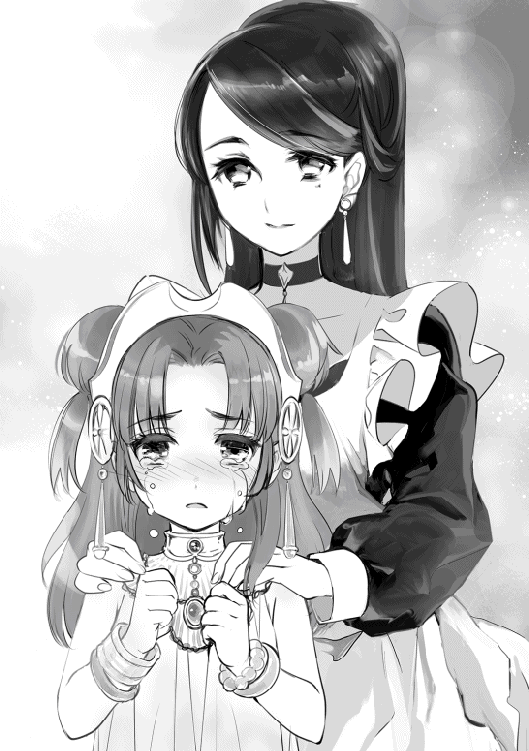
「ラティや、お前のやったことは立派なことじゃ......。誰にも文句は言えん。ラティのお陰でワシらは生きている。本当は褒めるべきなのじゃろう。じゃが......」
「お爺ちゃん......」
と、僕を抱きしめて、頭を抱えてきた。その声は僅かに震えている。
「お主はワシの子じゃ......どんなに立派なことをしても、素直に褒めてやるつもりになれん......すまんのう......」
「謝る必要はありません......もう、無茶はしませんから」
もしまた【星落とし】が発動しても、今度は別の方法で対処できるようにしてみせる。多くの人を悲しませることも、罪だってことが分かったから。
「僕は、もっと頑張ります。無茶ができないように、誰よりも高みへと昇ってみせます」
想いを口にすると......お爺ちゃんは「何も分かっておらんな」、と吐き捨てて、いつもの調子に戻っていた。僕が犯した三ヶ月の空白が、溶けていく気がした。
「ご主人様、もうノイを置いて行かないでください」
「もちろんだよ」
「これからも、ちゃんとノイのお傍にいてください」
「分かってる。ずっと一緒だよ」
それから、僕は何度も頷いた。目頭が熱くなる。不謹慎だけど、僕はこうやって家族に迎えられることを期待していたのかもしれない。僕は神々に育てられただけなのに......、自分が特別な存在なんだって誤解してた。神々に育てられたからこそ、僕には神託が降りて、特別な役割が与えられたんだって思ってた。でも、それは僕の誤解だったんだ。神様も人族も関係ない。いくら魔力が高くても、他の誰でもない僕自身が......、変わらなくちゃ意味がない。
僕には、帰る場所がある。いつかこの場所に帰るために、僕を必要としてくれる人がいる限り、守りたいと思う。もちろん、自分の命も守れるようにね。そう決心したら、気持ちが軽くなった。
「ほ、他の女の子と仲良くしてもいいです......。だから、もう離れないでください......ノイ、何でもしますから......どこにも、行かないでください......」
ノイはずっと泣き続けた。
‡
ノイが泣き止んだ頃には、夜も更けていた。
僕から離れようとしなかったので、一緒に寝室へ向かって横になる。時間を見計らって離れようと思ったのだが、腕を摘んでいるので離してはくれない。むしろ近づいてくる。仕方ないので、ローブだけ脱ぎ捨てて隣で寝ることにした。ぎゅう、と小さな肩を寄せてくる。甘い香りがした。鼻をすんすんと鳴らしたのがおかしかったのか、ノイはクスクスと笑っていた。
「ご主人様も、少しはノイを意識してくれるんですね」
うっ......なんでだろう、少しどきっとしてしまった。
「手、繋いでくれませんか？」
「う、うん」
「少しだけでいいです。だから、今夜は優しくしてください」
......もし誰かに聞かれていたら、あらぬ誤解を受けそうな雰囲気が漂っている。真っ赤に茹だった顔を見られたくなくて、ノイの頭を抱えてごまかした。
「......ん、温かいです」
ノイが吐息を漏らす。そんな可愛らしい仕草に、僕はどうにかなってしまいそうだった。いやいや、どうにもするわけにはいかない。この家には居候を含めて七人は暮らしている。仮に一人暮らしだったとしても、成人するまでは駄目だろう......と、頭の中で天使が説得していた。ん、天使？ 何かを忘れているような......。
「......あぅ、部屋の外が騒がしいですね」
言われてみると、数分前に誰かが訪ねてきたかと思えば、階段を上ってくる大きな足音が聞こえてくる。そのまま僕たちの部屋の前までくると、一呼吸を置いてから勢いよく開かれた。
「ラティさん！ ご無事だったって本当で......す、か..................？ はっ？」
荒げた呼吸を乱しながら飛び込んできたラーファさんは、すぐに般若のような顔を浮かべた。
王都ミズガルドからヴァナヘイムまで戻ってくるには、最短でも半日以上はかかる。ということは、僕が無事だという知らせを誰かに聞いて、ここまで真っ直ぐに帰ってきたのが妥当な線だろうか。
「......あの、何をされているんですか？」
「え？」
「ふふ、裸で抱き合ってますよね」
そういえばローブを脱ぎ捨てたままだっけ。ノイは裸ではないが、元から服装が薄いのであらぬ誤解を受けるのは仕方ない。抱き合っているのは事実だけど、僕からじゃなくてノイからですが......今のラーファさんに伝えても、何も始まらないだろう。
「ラティさんっ！」
やばい、叱られる！ むしろ、杖で撲殺される！ 慌ててベッドから飛び上がり、壁際まで下がってしどろもどろになっていると、ラーファさんは駆けつけて、僕は目をぎゅっと瞑った。しかし、いくら待っても言葉と杖は襲ってこなかった。変わりに僕へと当たったのは、ラーファさんの胸だった。
「ご無事で、よかったです......」
ラーファさんは潤んだ瞳で僕を見つめ、儚い声で「今日は一緒にいてください」と言ってきた。
......何だ......何なんだこの展開。結局僕は、二人に挟まれる形で寝ることになってしまった。
「ご主人様......」
「ラティさん......」
ノイとラーファさんは、交互に僕を抱き寄せて、頬に口を押し付けてくる。室内が、艶かしい空気に包まれていく。もう、何も考えられなかった。それ以上のことがあったわけでもなく、
「ん......」
と目を閉じる二人の色気は、若い体には毒だっただけである。
僕は何をしているんだ？ これは、夢なんじゃないのか？ いやそれよりも......この状況、嬉しいというよりむしろ......。
「......ノイさん、ずっと一緒にいたようですから、今日は私に譲ってください」
「......駄目です。ご主人様を待ち続けたのはノイですから、ラーファさんの頼みでも譲れません」
僕を挟んで火花が散っている。お爺ちゃんを見ていると良く分かるが、世の中にハーレムなんて願望は持ってはいけない。ハーレムを作ろうとすれば、待っているのは破滅のみ。でも、彼女たちが積極的だった場合は、僕が悪いんだろうか？ 半分は僕のせいかもしれないが、残り半分は暴走した彼女たちの責任だと思う。この騒ぎ、どうすれば止められるんだろうか。お爺ちゃん、扉から覗いていないで助けてください。
「こうなったら」
「決着をつけるしかありませんね」
甘い空気が弾け去った。立ち上がった二人の右手からは魔法陣が描かれて......。
「鎖よ、束縛せよ！」
「水よ、解き放て！」
──どかん。壁が吹き飛んだ。
「あ、あの、二人とも......」
「胸が大きいからって馬鹿にしないでください！」
「してませんよ！ ......あ、もしかして、コンプレックスがあるんですか？」
「う、うー!!」
──どかんどかん。鎖と圧縮した水が飛びまくった。天上、床、家具と破壊されていく。
「どうせノイは魅力がないです！ で、でも、ラーファさんよりずっと若いですよ？」
「ね、年齢を持ち出すのはずるいですね......」
言葉の応戦を続けながら、二人は何度も魔法を飛ばす。
「あ、あの、お爺ちゃん！ 助けて！」
「すまんのぅ。ああなったらワシにも止められんわい」
天空神は肝心な時に活躍してくれない......二人の飛ばす魔法はたまに僕へと命中し、その痛みで生きていることを実感できた。
僕は、生きている。確かにこの世界で生きている。嬉しいはずなのに、でも......。
「ご主人様との夜はノイが過ごします!!」
「栄典を放り出してまで駆けつけたんですよ！ ねっとりとした夜は私が頂きます!!」
ドカンバキンドカン。暴れまわる二人を見て、僕がどちらかを選んだ場合、どうなるかを想像するのが怖かった。もう暫く、鈍感のフリをしていよう......。
「ノイと寝てくれますよね！ 他の子は良くてもラーファさんだけには負けられません!!」
「ふふ、ラティさんは私と寝ますよね？ ね？」
とりあえず、この騒ぎを止めるためにも......今だけは、お爺ちゃんの口先を真似ることにした。その後、この騒ぎを止めてくれたのは......。
「二人とも反省してください」
「「はい」」
二歳児のアテナだった。
‡
翌日、ラーファさんは語ってくれた。
「私がラティさんの剣を見つけた時には......、影も形も見えなかったんです」
二人で村を歩きながら、大樹の元までやってきた。そこには花壇が置かれ、美しく咲き誇る花々が飾られている。その真ん中には......、ラティと刻まれた墓石が立っていた。
「あらゆる魔法を使っても、多くの神々を頼っても、ラティさんの存在は確認できませんでした......。一ヶ月、泣き続けたんです。いえ、昨夜まで同じでした。皆で一生懸命に捜したんですけど......、見つかりませんでした。もうラティさんはこの世にいないんだって、思ってたんです......」
鼻をすすりながら、ラーファさんは僕の手を取った。
「ずっと思ってたんですよ......、どうして死んじゃったんですか、って。私を守ってくれる約束を、破るんですかって......、私も、ラティさんを守れなかったのに身勝手ですね......」
苦しそうに言葉を続ける。
「何度も、夢の中で伝えたんです。後悔したままは......もう嫌だから。私も少しは貪欲になるって決めたんです」
優しい目で僕を見て、心を込めたかのように口を開いた。
「一緒にいてください。もう、離れたくありませんから」
そう言って、そっと唇を重ねた。
初めてのキスの味はよく分からなかったけど、恥ずかしくて、通じ合っている感覚というか......。
これからも繋がっていたいって思えた。
「このキスは内緒ですよ？ ノイさんに......まぁ、他にも多くの方に嫉妬されちゃいますから」
最後には悪戯っぽい笑みを浮かべていた。
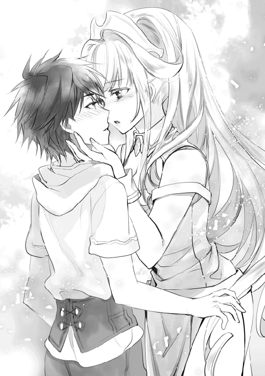
‡
「ラティ君、あーそびーにきたよー！」
黄昏の女神であるアエリカさんは週末になると、家まで押しかけてくる。しかもラドンに乗って。
「今日はブラコンの天使と、ブラコンの魔法書はいないの？」
「二人とも買い物に出掛けてるだけで、すぐ戻ってくると思うよ」
「では、今がチャンス......」
押し掛けられた僕の部屋では──ワインの瓶が転がっていく。彼女たち、頬を染めるほどお酒を飲むのだ。
「んー、ラティくぅん」
大抵、すぐに上目遣いに見つめてきて、押し倒そうなんてしてくる。そして、大抵扉が開いて......。
「黄昏の女神様は何をされているんですか......私も混ぜてください」
お酒好きなラーファさんも混じって、大宴会となる。この騒ぎは、メーティスさんが帰ってくるまで続いていく。
「ご主人様、大丈夫ですか？」
毎回の如く巻き込まれる僕にとって、ノイの存在だけが唯一の癒しとなっていた。彼女たちも、元気そうで何よりだけどさ......来週からは、家を空けようと決心した。
‡
中庭で椅子に座るリーシャは、キルトを編んでいた。故郷に伝わる伝統的な編み方だそうで、暇を潰すのに以前からちまちまと編んでいるらしい。
「んー、当分帰れないしね？ 掃除もお洗濯もメーティス様のお陰でやることがないから、せめて皆に何かあげようかなって思って」
リーシャが動けば被害が拡大するので、大人しくソファーに座っててくれるのが一番の仕事だったりする。口には出せないが。ちなみに、飛竜船の借金はお爺ちゃんが立て替えてくれた。その返済が終わるまで、リーシャは僕たちと一緒に暮らすらしい。
「ほら、これあげる」
手渡されたのは、手編みのセーターだった。
「アタシが編んだの。最初はラティに渡そうと思ってね。......って、へ、変な意味じゃないわよ？」
「あはは、分かってるよ。ありがと、リーシャ」
「ん」
僅かに頬を染めるリーシャも、また女の子のようだ。聖竜としてではなく、少女のような憂いが宿っている。
「故郷を思い出すとね、懐かしいんだ......。まぁ里から出られなかったんだけど、やっぱり帰りたくなる時もあるの」
「そうなんだ、帰ってみる？」
自重するように、リーシャは首を振った。
「いいの。ラティたちと一緒に過ごす日々の方が、故郷よりも大切だから」
リーシャは吹っ切れたような、優しい笑みを浮かべて頷いた。
‡
エウリュステウスが悪魔と手を組んだ戦は、異形の軍の消滅と共に終わりを告げた。
【星落とし】の魔法が発動したことによって、世界中で混乱が起きたらしい。その混乱を沈めるために天使たちが世界中を飛び回り、ミズガルド王国が中心となって働きかけた。
問題のミケーネ王国だが、混乱が静まったあと、突如参戦してきたミズガルド艦隊によってたちまち制圧を受け、駐屯するミキネス軍に降伏を促したようだ。王を失った国では戦おうとする騎士もなく、戦争が始まる前から降伏を宣言した。
このできすぎた芝居の裏には、ヘラクレスとラーファさんの働きがあるらしく、ミズガルド王の温情によって騎士や兵士たちはお咎めなしな上に、民衆には食料を分け与えたという。これによってミケーネ王国は崩壊し、ミズガルド王国の植民地となった。
当然、今回の責任は王一人の責任ではなく、貴族や大手商会を中心に多くの者が関わっていた。その者たちに言い渡された刑罰は、死罪。中には罪を告白する代わりに減刑を求めた者もいるが、世界規模の厄災を招いたのだから、減刑に応じられることはなかった。ミケーネ王国の降伏から暫くして、正式にミキネス軍は解体。新たにミズガルド王国軍として仕官を志望した兵士たちは、新たな門出を迎えている。
ミケーネ王国は敗戦国として辛い日々を送るはずだったが、税金は安くなり、交易が広くなり、更にはミズガルドの技術が流通したことで、以前よりも豊かな大地となった。一部の利権を主張する者たちもいるが、全体的に見れば良い方向へと導かれている。
こうして悪魔が関わった戦は、ミズガルド王国に主導される形で幕を閉じた......ミズガルド王国にとっては何の被害も犠牲なく、戦果も上げずに領土が広がったわけだ。そんなわけでミズガルド王国では、首都ミキネスの新国王とヘラクレスたちを招き、記念祝祭を行うことになった。長い因縁に終止符が打たれたのである。
しかし、ヘラクレスは浮かない様子だった。彼は迫り来る悪魔の脅威に立ち向かった英雄として、熱烈な歓迎を受けている。だが、彼の罪は消えたわけではない。もう一度、神託を求めたが、彼には罪がないとして何も言い渡されなかった。それが、ヘラクレスの心を縛り付けた。
仕方ない出来事に無罪を言い渡されたからといって、罪悪感が消えるわけではないのだ。
「ラティが生きていてくれたことは嬉しいよ......。これからは、お前に協力することで罪を償っていくかね」
ヘラクレスが一緒に悪魔討伐を手伝ってくれるのは嬉しいが、彼の罪悪感をどうにかしてあげたいと思ってしまう。でも、残念ながら僕にはその方法が思い浮かばなかった。
結局、ヘラクレスは自らの罪を背負ったまま生きていく形に収まってしまった。
お陰で激しく落ち込んだヘラクレスは、林檎の楽園ヘスペリデスに住み、ヘベさんと精霊たちが支えている。以前ほどの元気はなくなってしまったようだ。僕も、そんなヘラクレスのことが気にかかっていた。
それと、ヘーラーさんとヘラクレスの仲は今だに悪い。神々の女王も僕が生きていたことに祝杯を上げてくれたが、二人が視線を交えた場面を一度も見なかった。
「アタシの罪はアタシが背負っていくわ。もう、何も取り返せないからね......」
遠い目をしたヘーラーさんは、悲しそうだった。
後日、ハデスさんにお礼を伝えるために、冥界を訪れていた。
「感謝をするべきなんだろうな、お陰でケルベロスも無事に戻ってきた」
ケルベロスはラーファさんたちのお陰だが、実に嬉しそうな笑顔だった。
「ラティたちが戦ったからこそ、世界は今も存在している。私も悪魔やエウリュステウスの魂を捌くのに忙しいが、お前たちはよく働いてくれた。嫌味ではない......そこでだ、予てよりの約束だった褒美を一つだけ叶えてやろう」
そう言いつつ、ハデスさんは僕に尋ねてきた。
「僕からもお願いがあります。実は──」
‡
さて二ヶ月が経過した頃、僕たちは林檎の楽園ヘスペリデスの礼拝堂へと招かれていた。なんとヘラクレスとヘベさんが結婚するらしい。意外ではないが、驚きだ。
周りには多くの神々と天使、精霊たちが駆けつけ、忙しなく祝福を贈っていた。
扉が開き、ヘラクレスと寄り添うように歩くヘベさんは幸せそうだった。ヘラクレスも幸せそうだが、その顔には陰が隠しきれていない。ヘラクレスは礼装に身を包んでいた。半神半人でありながら、神であるヘベさんと結ばれることで正式に神様として迎え入れられる。僕も、ノイも、ラーファさんも戸惑っていた。
──先週、ヘーラーさんに呼び出され、婚約の真相を僕たちは聞いていた。
半神という出身だと、今後もエウリュステウスのような者に利用される恐れがある。自暴自棄になっているヘラクレスでは、いつか本当の凶気が心を支配して、深く考えずに死を受け入れてしまう。
そこで、ヘベさんと結婚することで人生の生きがいを見つけて欲しかったそうだ。
ヘラクレスは、お爺ちゃんから借り受けた新婦の冠をヘベさんの頭へと載せた。四季の間に輝きを失うことはない白き花があしらわれた、清楚な冠である。
純白のドレスに身を包んだヘベさんは、嬉しそうに僕たちへと手を振っていた。
少なくとも、嫌々の結婚ではなさそうなので、僕たちも祝福してあげるべきだろう。
しかし......参ったなぁ。
「それでは、これより式を始めます」
婚姻を司る女神ヘーラーさんの前で、ヘラクレスとヘベさんが並び、一礼した。
ヘーラーさんの声が、どこまでも澄み渡る。遠くで鐘が鳴り響き、二人を祝福するかのように光が集まった。
「新郎、ヘラクレスよ。汝は女王ヘーラーを前に、ヘベを妻とすることを望みますか。どのような逆境にあっても、病気の時も健康の時も、夫として生涯、愛と忠実を尽くすことを誓いますか」
「はい、誓います」
ヘラクレスは重々しく頷いて、左手を胸の前に置いた。同じ詔が、ヘベさんにも読みあげられる。あぁ、本当にまずい。
「──妻として生涯、愛と忠実を尽くすことを誓いますか」
「はい、誓──」
「あなた!!」
会場がざわめいた。僕だけは知っていた。扉へと振り返ると、そこには可愛らしい細身の女性が立っていた。結婚の約束を交わす、まさにその瞬間、女性は叫んだ。
「本当に、あなたなのね......!!」
「メガラ！」
メガラ、人族のメグ。ギリシャ神話においてヘラクレスの最初の妻であり、ヘラクレスが狂気によって手をかけてしまった愛しの妻。その背後からは、息子たちの姿も見える。
「どうしてお前が生きて......あぁ、夢じゃないのか......本当にどうして......」
「......それは言えない約束なのです。ですが、私はここにいます。子供たちと一緒にここに立っています！」
ヘラクレスにとって最愛の女性が、帰ってきた。それは喜ばしいことのはずなのに、礼拝堂はざわついていた。
「あ、あの......ヘラクレス様......？ 私と、結婚は......」
「ヘベ......その、だな......もちろん、したいんだが......」
「結婚？ あなた、その姿......どういうことですか？」
「ヘラクレス様......実はディアネイラも、ずっとお慕い申して──」
どうして、こんなことになってしまったんだろう。僕はあの時、ハデスさんにお願いしてメグさんたちの命を再び返してもらった。ヘラクレスは頑張ったのに、僕以上に報われなかった。愛する人を自分の手にかけたヘラクレスも、恨まれることを望んでいるヘーラーさんも、どうにかしてあげたいと思ったんだ。悲しい出来事は心を傷つける。深い海に沈むよう心を、どうしても助け出したかった。
「......やってくれたわね、ラティ」
ツカツカと歩み寄ってくるのはヘーラーさんだった。いつもより嬉しそうに見える。
「結婚式、台無しにしちゃいましたよね......」
「そうね。でもまぁいいわ。このまま式は続くでしょうし」
「どういうことですか？」
「もしかして忘れたの？」
ヘーラーさんが指差す方向には、数え切れないほどの女神に囲まれているお爺ちゃんが立っていた。
「ヘラクレスもアレの子よ。血は、争えないわね」
メグさんと、ヘベさんと、精霊に奪い合いをされるヘラクレスを見て、僕も理解してしまった。
「本当にその通りですね」
「ご主人様も人のこと言えないですけどね」
「まったくもってその通りですね」
「えっ」
僕は、ノイたちから冷たい視線を浴びせられた。
......僕の傍には、彼女たちがいる。
「ご主人様」
「ラティさん」
彼女たちの安心しきった無防備な表情は、僕を信頼してくれている。その期待を裏切らないように生きたい。生まれも種族も違うのに、惹かれあった僕たち。この三角関係はこれからも続いていくのだろう。人の温もりを知ってしまった僕は、彼女たちが愛しかった。
どうしてだろう。昔は平気だったのに、今は一人に戻りたくないのだ。彼女たちのことでいっぱいになる。愛しさが膨れ上がっていくのだ。悪魔との戦いは、これからも続いていくことだろう。それでも、僕たちが力を合わせればどうにかなると思う。
僕は誓ったのだ。この星を悪魔の手から守ってみせるって。平穏な時間が崩れても、新しい平和を手に入れるために戦う日々が待っていることに、文句はある。しかし、嘆きはない。世界を守ると決めた、僕の選んだ道だから。
「僕さ、凄い幸せだよ」
僕はもう泣いていない。彼女たちも笑っている。
黄昏に燃える楽園はいつまでも......暁に燃えていた。
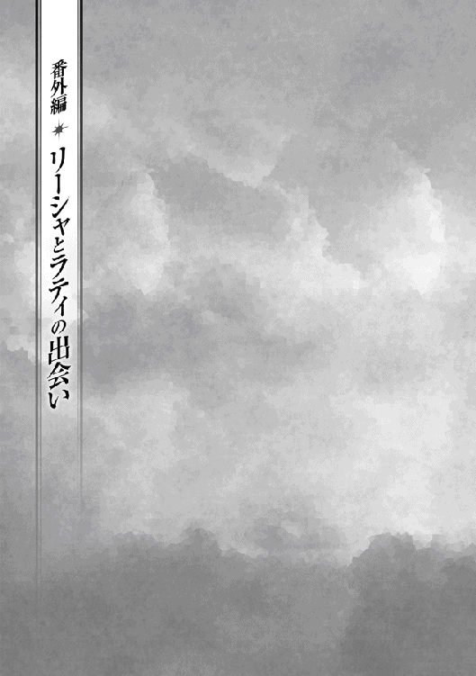
剣の稽古に堪えられず、泣き出したアタシにアスラ師匠は言った。
「いいか？ 小娘は苛められているのではない。皆から期待されているだけだ」
朽ちた神殿の地下、牢獄のような鉄格子の奥。
外では子竜たちが楽しそうに遊んでいるのに、アタシはみっともなくエグエグと涙を流している。
「普段の気の強さはどうしたというのだ。そんなことでは誰も小娘と結婚してくれんぞ」
「......いいもん。ずっと一人だって分かってるもん」
「そんなことはない。ご多忙で滅多に顔を見せられないようだが、【八大竜王】様も小娘を心配している。本当は外に出してやりたいのだが、この時代が許してくれないだけだ」
アタシが泣いていた理由は単純で、寂しかったからだ。
まるで囚人のように存在を隠されて、朝起きても一人ぼっち。お手伝いさんの竜が変わり映えのしない食事を用意してくれて、色々な先生に小難しい古代魔法学や竜脈との同化について教わったり、できなかったら酷く叱られる日々を強要されている。
友達と遊ぶことも許されず、ただ鳥籠の中で過ごしているような退屈な毎日に嫌気が差していた。
まぁ、友達なんて一人もいないんだけど。
「そんなこと言ったって、アタシが生まれてから九十九年間、ずっと監禁されているじゃない！」
「......それは申し訳ないことをした。だが、小娘には運命の女神から授かった『神託』がある。同情で村から出すわけにはいかないのだ。理解してくれ」
アタシの人生はずっとこの調子だった。
竜族は万年単位の寿命を持ち、世界的に見ても長寿な種族だという。
嫌々暮らしているこのナーガ族の里には千匹の竜が暮らしているのだけど、アタシは千と一匹目の特別な聖竜として産まれてきたらしい。
なんでも百年ほど前に運命の女神様が降臨されて、
『百年後に世界の危機が訪れるから、そのために聖竜の力が必要になる』
なんて言ったらしい。とっても迷惑なお話よ。お陰でこんな生活を送っているんだから。
そういう事情があって、アタシは今日も神殿に監禁されています。
「そう拗ねるな。ほら、我が世話になっている家主の娘の天使が作ってくれた菓子だ。小娘のためにと作ってくれたものだ。ありがたく食え」
「うぅ、甘いもので納得したわけじゃないからね......」
クッキーとやらを受け取りながら、サクサクと口に頬張った。あ、美味しい。
「ふん、元気になったようだな」
ニカリと笑う師匠のことが、アタシは好きだった。もちろん人としてだけど、見た目の怖い三面六臂ぶりとは違って、優しい心を持っていることを誰よりも知っているから。でも、最近は《始祖の神々》の友人さんの自宅に居候しているらしくて、めっきり姿を見せてくれることが減ってしまった。アタシに教えられる剣技がもうない、って言ってたけど、なんだか寂しく感じてしまう。
「はむはむ......ん、うぇっ!? な、なに、すっごい辛いのが混じってた！」
「あー......そういえば使い魔も一緒に作っておったな。小僧に食わすと言ってたのだが混ざっていたようだ。悪気はないのだ、許してやれ」
こんな物を食べさせられたら逆にぶち切れるんじゃないかしら......。
でも、最近その『小僧』って人の名前を良く聞くようになった。なんでも人の身でありながら魔法都市に現れた悪魔を倒して、天空神しか使えないはずの魔法も扱っているとか。神様たちのとっておきとして大切に育てられていて、悪魔との戦いに身を費やしているって。絶対に嘘だと思うけど、どういう人なのか興味はあった。
「なぁ、リーシャよ。話を聞いてくれないか？」
「な、何かしら師匠......？」
普段は小娘って呼ぶのに、突然アタシの名前を呼ぶなんて珍しい。思いつめた顔をしているけど、何かあったのかしら。
「貴様にも旅立ちの日が近づいている」
「えっ......」
「ここだけの話だがな、小僧の噂は本当だ。小僧の姉を殺されかけて以来、人が変わったかのように悪魔を滅ぼすことに心血を注いでいる」
「お、お姉さんは生きているの？」
「あぁ、その菓子を作ったのがその姉だ」
そう、なんだ......。
「我が友は、ゼウスは全てを悟っていたようだがな。あの小僧こそが我々が長年待ち続けていた神々を救う希望となるかもしれん。いや、我は絶対にそうだと思っている。今度こそソロモン王を完全に消滅させることが可能となるかもしれんのだ」
ソロモン王。かつて世界を支配しかけた悪魔を率いた恐るべき王。どうしてそんなお話をアタシにするんだろうって考えたけど、そんなの産まれてきた理由を考えれば分かるわよね。
「貴様はきっと、小僧と旅立つ運命にある」
師匠は言い切った。
「それって、アタシにその小僧って人についていけってこと？」
「そうだ」
一瞬で言い切られた。それが無性に悲しくなった。
「あやつは優しいぞ。育ての親の女癖の悪さを天然で受け継いでいるが、リーシャのことだって絶対に差別しない。どんな奴にでも涙を見せ、優しさで接する心を持ってい......む、どうした？」
強引な理屈にアタシは面白くなくて、また涙が流れていた。心も溢れてしまう。
「師匠だけは、違うと思ったのに......それじゃまるでアタシは、死ぬために生まれてきたようなものじゃない......！ 師匠も同じだったんだ......アタシを、戦争の道具にしか見てないんだ！」
「違う！ そんなことを思ったことは一度たりともない！」
「じゃあ、どうして旅立てって言えるのよ！ アタシみたいな弱虫に悪魔となんて戦えるはずがないじゃない！ 師匠のばかっ!! もう会いたくない」
「これリーシャ！」
「アタシはアタシだもん！ 戦争の道具じゃないんだから！」
堪えられなくなって、神殿の階段を駆け上った。すぐに師匠も追いかけてくるけど、仮にも聖竜として生まれてきたアタシの脚力には追いつけない様子だった。
「ばか......アタシの、ばか......」
分かってた。アタシの存在価値は戦うことにしかないんだって。いつも優しくしてくれた師匠に酷いことを言ってしまった。自己嫌悪してしまう。
見張りを張り倒して、神殿を強引に抜け出して、走って、走って、走り抜いた。世界でアタシだけが孤立したような錯覚がして、とにかく郊外を目指して走り続けた。このナーガ族の里から外に出ることは許されていなくて、多くの眷属が里を守っていることは知っていた。だからせめて暫く一人になれる場所へ逃げようと思った。
そうして、辿り着いたのが『秘密基地』。
廃墟の教会だけど、辛いことがあった時は神殿を抜け出して、いつもここで泣いている。女神像は半身が砕け散って、窓は割れていて、ツタが侵食している酷い有様だ。殆どの部屋は使い物にならないけど、入り口近くの小部屋だけは無事だったり。以前に用意した虎の毛皮と毛布を床に敷いて、思いっきり転がった。アタシが唯一安心できる場所。声を大にする。
「アタシ、何のために生きているんだろう。これじゃ死んでるのと変わらないじゃない......」
悲しくて、悔しくて、拳を床に叩きつけて歯噛みした。
窓の外では鳥が羽ばたいている。
「鳥はいいなぁ......アタシも竜化すれば翼があるけど、自由に飛べないもの」
生まれた時から特別扱いを受けていたアタシには、友達すらいない。そもそも一般常識も大きく抜けていたりするし、言動や性格も子供っぽい気がしなくもない。
あぁ、どんどん落ち込んでいく。
「一人で良かった......」
この秘密基地には誰も訪れてこない。
数時間が経過して、日も落ちかけていた。泣き続けていたせいか喉がカラカラだ。そろそろ帰るべきだと思うけど絶対に叱られる。それにまだ誰とも会いたくなかった。ずっと、一人で生きていこうかな......。
「キャンキャン！」
「へっ？」
そんなことを考えていると、目の前に子犬が現れた。その子犬は首が二つあってちょっと変わっている。どうして擦り寄ってきたのかなぁと手を差し伸ばすと──。
「はぐっ」
手を思いっきり噛み付かれた。
「きゃああああっ！ 痛い、痛いから！ 離してようっ!?」
「こらオルトロス！ 何してるんだよっ！」
痛くて叫んでいると、今度は一人の少年が現れた。人族だ。見た目は十歳ほどで、外見だけならアタシとそれほど変わらなく見える。
少年は慌てて犬を抱えると叱り付け、深く謝罪してきた。
同時にアタシは犬が大嫌いになった。
「君、ごめんね。このオルトロスさ、ヘーラーさんから預かったんだけど、好奇心旺盛ですぐに逃げ出しちゃうんだ......手、見せてもらうね」
「う、ぁ」
少年は旅人風の剣士のいでたちをしていて、珍しい黒髪だった。アタシの手を両手で握ると、何やら詠唱を唱えていく。治癒魔法だ。一瞬で傷が塞がった。
「これで大丈夫かな？ 本当にごめん、お詫びが足りなかったら何でもさせてもらうよ」
「え、あ、だ、大丈夫！ 大丈夫だから！ あ、ありがとう！」
少年がポカンと口を開いたまま見つめてくる。アタシ、人とのコミュニケーション苦手なのよね。ずっと一人ぼっちだったし。うぅ、恥ずかしい......。
「君、泣いてたの？」
「へっ？」
「涙の跡」
言われて泣いていたことを思い出した。慌てて涙を拭き取って、みっともない醜態を晒したことで更に顔が熱くなる。
「ほら、ハンカチ。可愛い顔が台無しになるよ」
さり気なくハンカチで涙を拭き取られてしまった。
い、いきなり何するのこの人......？ これでも一応女性なんだけど、恥ずかしくないのかしら......。
「で、何があったの？ 相談なら聞くよ」
「な、何でもないわよ。ただちょっと、自分って存在が嫌になっただけ」
しつこく聞いてくる少年に首を振って、はにかんで答えた。
「そっか」
少年は小さく言葉を漏らす。そして、
「よかった、君がリーシャって女の子だね」
アタシの手を掴んだ。
「ど、どうしてアタシを知っているの？」
「偶然アスラさんに用事があって近くを訪れていたんだよ。そしたらアスラさんに君を捜すように頼まれたんだ。ほら、一緒に帰ろうよ」
ええ......まさか師匠の知り合いだったなんて......あれ、あの師匠に人間の知り合いなんていたかしら？ あぁ、そういえば小僧って人と知り合いなんだっけ......え、もしかしてこの人が噂の？
「女に見境ない小僧さん？」
「..............................はい？」
あれ、少年が固まった。間違ったことを言っちゃったかしら？
「......え、えっと僕の名前はラティ、だよ......アスラさんめ、僕を何だと思っているんだか」
小僧さんの名前はラティさんというらしい。可愛らしい名前だ。
「まぁいいや。ほら、神殿に帰るよ」
「ちょ、ちょっと待って！ か、帰りたくないの！ 叱られちゃうし......」
「僕も一緒に謝るから。大丈夫、皆心配しているからね」
結局、強引に手を引かれて教会の外に出てしまった。
宵闇に包まれた夜空を見上げると、お月様とお星様が沢山浮かんでいて、まるで別世界のように見えた。
手を繋いで、無言で歩いて、沢山叱られて、師匠に叱られて。
最後にはラティさんが庇ってくれた。
「ありがとう、ラティさん」
「ん、そんな他人行儀にならなくていいよ」
叱られて、神殿に戻る直前にラティさんにも謝っておこうと思ったけど、彼はただ笑っていた。
「ラティでいいよ。僕もリーシャって呼ぶから。これからよろしくね」
「よ、よろしく......お願いします、ラティ」
その日、アタシに初めての友達ができた。
あとがき
二巻を手に取ってくださりありがとうございます。わたがし大五郎です。
このペンネームを使い始めまして三ヶ月が経ちましたが、名前だけは誰にでも覚えていただけるようになりました。開業届けを提出しに税務署へ向かえば、
「わたがし大五郎さん、お待たせしました!!」
と、受付のお姉さんに大きな声で呼ばれました。丁度、時期的に確定申告と重なっていましたので、大勢の人の前で呼ばれたんです。全員が一斉に振り返り、私を見てヒソヒソと話しているのが聞こえてきます。なんということでしょう。羞恥心を振り切って受付に向かえば「お笑い芸人の方ですか？」とにこやかに尋ねられました。千葉県は多いらしいです。解せません。
「転生神々ヘラクレス編」はいかがでしたでしょうか。お楽しみ頂けたら幸いですが、ギリシャ神話にお詳しい方からしたら、首を捻る箇所もあったかと思います。
まずはオリジナルのリーシャですが、彼女を出した一番の理由は、ネット連載版でひっそりと人気を集めていたことが原因です。もっともそちらでは「弱い・泣き虫・子供っぽい」と三拍子揃ったヒロインでしたが、今回はその描写が少ないかと思います。反してアテナやヘベ、運命の女神、ヘラクレスは神話にも登場する有名な神々です。年齢設定、容姿描写はファンタジー風に書き直しましたが、本来はヘベとアテナが二十歳くらいの容姿で、運命の女神に至っては老婆です。はい、需要が無いと判断したんです......。申し訳ないです。
しかしこの二巻、担当さんからお返事を頂いた際、「わたがしさん、新キャラが多いです」と優しく言われて「!?」となりました。
新キャラが多い......そうです。本来は二十名以上も登場していました。二巻で打ち切りだろうなぁと達観しつつ、やりたいことを詰め込もうと意気込み、読みにくくなってしまいました。これでもかなり登場キャラを削ったのですが、それでも多いですよね。要反省です。今後に生かしたいと思います。
「転生神々シリーズ」が次に出版されるとしましたら『英雄ペルセウス編』になります。ある事情でペルセウスと出会ったラティが、メデューサ討伐へと向かうお話になりますが......悪魔が干渉したことで歴史がまたズレてしまいます。ウェブ版の流れで進んでいきますが、詳しいお話はまだできません。申し訳ないです。「転生神々シリーズ」を読んでくださってる読者様は、今しばらくお待ちいただけると幸いです。
さて、今回も様々な方々のご尽力によってこの本は作られました。
表紙デザイナーさん、イラストを担当してくださる椋本様、担当様、校正の方々も毎回一流の仕事をしてくださいます。ホント毎回お世話になっております。
それでは、またお会いできることを願っております。
著者プロフィール
わたがし 大五郎
Watagashi Daigorou
千葉県出身。愛猫にパソコンを破壊された某サラリーマン。最近、歴史物に熱中しています。
転生 神々に育てられた少年の物語２
2016年７月１日発行 ver.1.0
著 者 わたがし大五郎
発行所 TOブックス
〒150-0045 東京都渋谷区神泉町18-８
松濤ハイツ２Ｆ
03-6452-5678（編集）
0120-933-772（営業フリーダイヤル）
Ⓒ2016 Daigorou Watagashi
※無断で複製・複写・データ配信などをすることは、かたくお断りいたします。
本電子書籍は下記にもとづいて制作しました
転生 神々に育てられた少年の物語２
発行日 2016年６月１日 第１刷発行
本作品の全部または一部を無断で複製、転載、配信、送信したり、ホームぺージ上に転載することを禁止します。また、本作品の内容を無断で改変、改ざん等を行うことも禁止します。
本作品購入時にご承諾いただいた規約により、有償・無償にかかわらず本作品を第三者に譲渡することはできません。
本作品を示すサムネイルなどのイメージ画像は、再ダウンロード時に予告なく変更される場合があります。
本作品は縦書きでレイアウトされています。
また、ご覧になるリーディングシステムにより、表示の差が認められることがあります。